外科的心房細動治療の現在地
Maze・ハイブリッド・PFA・AFMR を貫く1本の線 — 心臓外科医のための統合レビュー
本稿は Ancona Live Virtual Course 2026 の講演（AFMR ＋ 胸腔鏡下/ハイブリッド AF アブレーション）を起点に、近年の Maze 手術・外科的 AF アプローチの動向を、心臓外科医向けに統合したレビューである。PubMed 55検索式・総ヒット 42,044 から 5,051 編を機械収集・スコアリングし、必読 ★81編／推奨 ○96編（計177編）を選定、うち 71編をフルテキスト精読（1論文 = 1エージェントで構造化 → セクション別ノート化 → 敵対的ファクトチェッカーが全数値を原文 grep 照合、という4段パイプラインで 2,769数値を照合し 89件を訂正）して構成した。
- 左サイドバーは章立ての目次。クリックでジャンプ、スクロールで現在地がハイライトされる。
- サイドバー上部の検索窓にキーワード（例:
CTSN,LAAOS,nsPFA,PPM,AFMR,blanking）を入れると本文をハイライトし、Enter/↑↓で一致箇所を順に移動する。キーボードの/で検索窓にフォーカス。 - 各引用（例: Gillinov 2015）は PubMed へのリンク。追加学習はここから一次資料へ。
- 図はすべてオープンアクセス論文（CC BY / CC BY-NC / CC BY-NC-ND）の原図を改変せず引用しており、各図の直下に出典・DOI・ライセンスを記した。一覧は末尾の図版の出典とライセンス。
- 末尾に精読文献リスト（全72本）。
- 章 0（「成功率」を比較してはならない）と章 XIV（実務への落とし込み）だけでも通読の価値がある。
外科的 AF 治療の文献において、報告された「洞調律維持率」を判定手段と切り離して比較してはならない。 同一の CTSN 患者集団ですら、6・12か月の72時間 Holter 2点なら ablation 群 63.2% が "AF free" だが、週1回 transtelephonic monitoring の all-or-none 基準では 43% に落ちる（Gillinov 2015／Blackstone 2019）。CASA-AF の同一施設パイロット（間欠7日 Holter）で外科 73% vs カテーテル 32% だった成績は、植込み型ループレコーダ（ILR）連続監視の RCT では 26% vs 28% に収束した（Haldar 2020）。数値を引くときは必ず ① blanking period ② 閾値（>30秒か） ③ AAD off か ④ モニタリング手段の4条件を併記する。
0. このレビューの読み方 — 「成功率」を横に並べてはならない
0-1. 同一コホートで数字は 4つ出る
前向き多施設試験 Terminate AF は、同じ94例について12か月の成功率を4通り報告している — 抗不整脈薬（AAD）off・24時間 Holter＋12誘導 ECG ≥10秒も失敗に含める Bayesian 推定で 76.2%（64/84, 95%BCI 66.0–84.0）、Kaplan-Meier で 80%（95%CI 70–87）、2024年コンセンサス準拠（24時間 Holter のみ）で 81%、AAD 使用を問わなければ 87%（Damiano 2026）。ICE-AFIB も同様に、主要評価の 6–12か月なら 70%（95%CrI 62–77） だが、blanking 3か月直後からの 3–12か月で見ると 56%（95%CrI 47–65、事後確率 0.592 で成功基準未達）である（Ad 2026）。
Blackstone の一次記述がこの現象を最も端的に言う — "the more one assesses rhythm, the more arrhythmias one is likely to observe"。
0-2. 判定手段の強度と見かけの成績（章横断）
| 判定手段 | 代表試験 | 報告値 | コメント |
|---|---|---|---|
| ILR / ICM 連続 | CASA-AF（LSPAF, 単独手技・AAD off） | 26%（14/54）vs カテーテル 28%（17/60） | 最も厳しい。3年で 11% vs 12% |
| ICM 連続＋毎日伝送 | SURHYB（CryoMaze 単独群、>6分閾値） | 再発 67.4% | 「CryoMaze 単独では3人に2人が再発」 |
| 連続 ICM＋無症候≥1時間を失敗 | AVANT GUARD（持続性AF, PFA 初回治療） | 56%（95%CI 48–63） | カテーテル側で最も厳しい判定 |
| 週1回 TTM（90秒）×12か月 | CTSN 二次解析 | ablation 43% vs 対照 16% | 同一患者で 63.2% → 43% |
| 6/12か月の72時間 Holter×2点 | CTSN 主要 | ablation 63.2% vs 対照 29.4% | FDA 規定の主要エンドポイント |
| 週1回 Kardia＋24時間Holter×3 | BEAT PAROX-AF（発作性, PFA vs RF） | 77.2% vs 77.6% | 間欠だが高頻度 |
| 7日 Holter 1回（実施率71%）＋カルテ | ADVENT-LTO（発作性, 4年） | 72.8% vs 64.3% | 実施率が低く過大評価方向 |
| 12誘導 ECG 中心（外科系の多数） | Pyo・Nitta・Bakir・Song ほか | 70–90% 台 | 上記と同じ土俵に置けない |
| 判定手段の記載なし | Baudo メタ（4年 76.7%）・Gemelli メタ・Sakurai メタ | — | 絶対値の引用に耐えない |
この表の含意は単純である：連続監視の試験と間欠 ECG の試験では、同じ術式でも 10–15 ポイント、最大では 40 ポイント以上の見かけの差が生じる。したがって比較可能なのは各試験内の群間差（OR/HR）だけであり、絶対値の横並びは意味を持たない。Kowalewski の総説自身が提示した「実世界ハイブリッド36か月 freedom：AAD 許容 72.9%±2.9% vs AAD off 59.0%±2.5%」（Kowalewski 2025）という約14ポイントの差は、定義だけで成績がどれだけ動くかの直接証拠である。
0-3. 誰も定義を統一していない — ガイドラインですら
外科的アブレーション後の blanking period・>30秒閾値・AT/AFL の扱いの3つすべてを定義した文書は、主要ガイドライン6編中ゼロである（章 XI）。最も具体的なのは STS 2023 の「1年時 AF free かつ AAD free ＋ periodic 24-hour Holter」（Wyler von Ballmoos 2024）、最も厳しいモニタリング要求は EHRA/HRS 2024 の「8週 blanking（3か月から改訂）＋初年度は3か月ごとに最低24時間 Holter、可能なら7–14日連続、AF burden 評価には年間累積28日以上」（Tzeis 2024）。同文書は >30秒基準そのものを "does not correlate with symptom severity, is not associated with cardiovascular outcomes, and results in marked underestimation of treatment efficacy" と批判しながら、過去文献との比較のため報告は続けよと求めている。
I. 病態の背骨 — AF → 左房・弁輪リモデリング → AFMR/AFTR → 洞調律の意義
本レビューの背骨は、講演が提示した因果ストーリーである。AF が持続すると左房と弁輪が拡大し、それ自体が僧帽弁・三尖弁閉鎖不全（AFMR/AFTR）を生む。だから洞調律の維持には弁を守るという意味がある。 この矢印を最初に確認しておくと、以降の術式論がすべて同じ座標系に乗る。
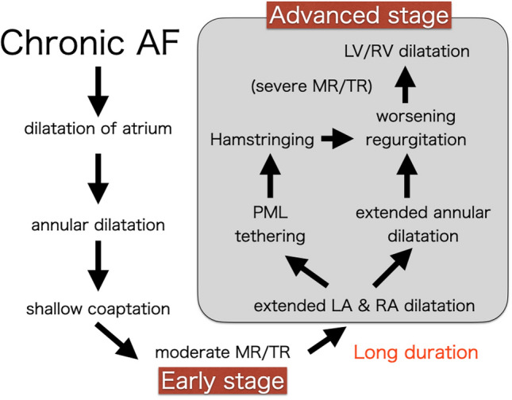
出典: Shibata T, et al. Gen Thorac Cardiovasc Surg 2021;69(7):1041-1049. doi:10.1007/s11748-021-01629-x / PubMed. CC BY 4.0（原図を改変せず掲載）。
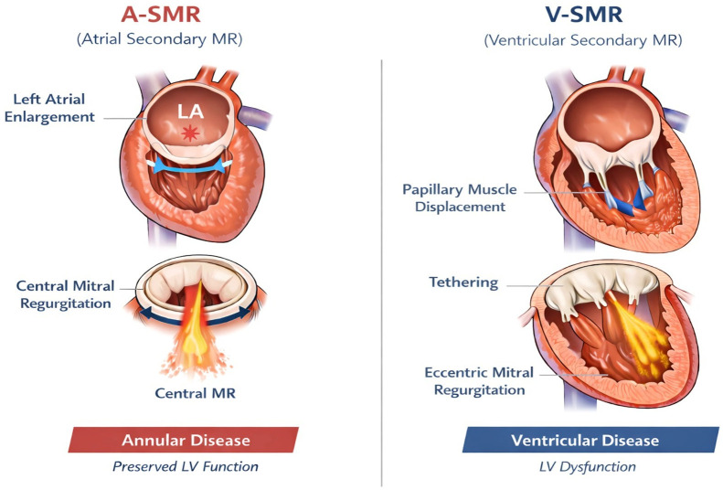
出典: Venturiello D, et al. Medicina (Kaunas) 2026;62(3):520. doi:10.3390/medicina62030520 / PubMed. CC BY 4.0（原図を改変せず掲載）。
I-1. AFMR は「左室の病気」ではなく「左房・弁輪の病気」である
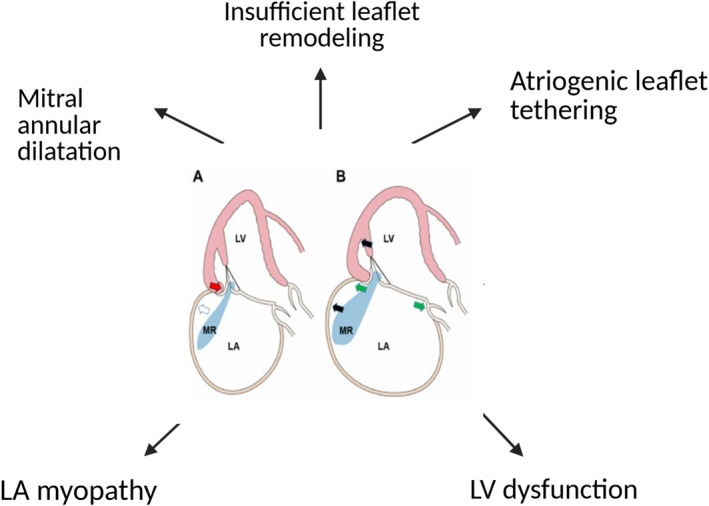
出典: Pagnesi M, et al. ESC Heart Fail 2025;12(6):3788-3805. doi:10.1002/ehf2.15405 / PubMed. CC BY-NC 4.0（原図を改変せず掲載）。
CABANA の事後解析（n=1391、trivial 超の MR 722例＝52%）で、moderate 以上の有意 MR の独立予測因子は 年齢（OR 1.05, 95%CI 1.02–1.09, p=0.003）・左房容積係数 LAVI（OR 1.05, 95%CI 1.03–1.07, p<0.001）・persistent AF（OR 1.52, 95%CI 1.01–2.30, p=0.047） の3つのみで、LVEF は多変量で有意でなかった（OR 0.97, 95%CI 0.94–1.05, p=0.056）（Dhont 2025）。無作為化試験コホートで「AFMR は左室ではなく左房・弁輪の疾患」が裏づけられた所見である。
この病態理解は術式論に直結する — AFMR は undersized ring annuloplasty 単独で治せる（章 XII）。実際、国際多施設レジストリ MMIR の AFMR 430例のうち 91.4%（393/430）が isolated annuloplasty のみで修復され、人工腱索・切除・スライディングの施行例はゼロ、edge-to-edge 追加も3例（0.7%）に過ぎない（Berretta 2025）。
そして AFMR を「機能性だから経過観察」で済ませてはならない — 高度 AF-MR の3年死亡率は高度一次性 MR の2倍超（41% vs 19%, P=0.004）であり、中等度〜高度 AFMR を伴う心不全入院例の3分の1超が中央値9か月で再入院している（Farhan 2022）。
I-2. 三尖弁は僧帽弁より弁輪拡大に脆弱 — だから予防的 TAP が理にかなう
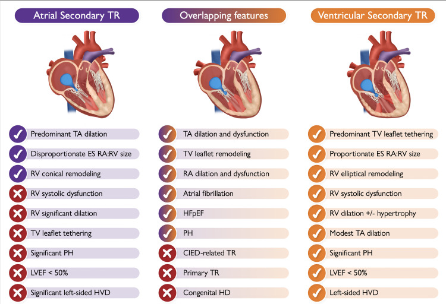
出典: Muraru D, et al. Eur Heart J 2024;45(11):895-911. doi:10.1093/eurheartj/ehae088 / PubMed. CC BY-NC 4.0（原図を改変せず掲載）。
同じ矢印は右心系にも走る。in vitro では 三尖弁輪面積の40%拡大で臨床的に意味のある TR が生じるのに対し、僧帽弁で二次性 MR が生じるには弁輪面積の75%拡大を要する（Muraru 2024）。すなわち三尖弁のほうが構造的に脆い。
臨床データもこれと整合する。AFMR 外科例では Cleveland Clinic の194例中 85%（165例）に TR が存在し 66% が中等度以上、64%（124例）に三尖弁手術が併施（Bakir 2025）、MMIR では術前中等度以上 TR 47.3%（203/430）で TAP 併施 44.2%（190/430）（Berretta 2025）。AFMR 外科症例の約60%で TR が優位病変であるとの指摘もある（Farhan 2022）。AFMR は「両心房疾患」である。
そして三尖弁介入は待つほど不利になる — 孤立性 TR 手術の院内死亡は約10%、重症孤立性 TR 2413例の国際レジストリ TRIGISTRY では早期かつ成功した介入が2年生存を改善したのは low TRI-SCORE 群のみで、high TRI-SCORE 群では利益が認められなかった（Muraru 2024、Farhan 2022）。僧帽弁手術の機会に予防的に対処することが、後の孤立性 TR 手術という不利な状況を避ける最良の手段である。
I-3. 「洞調律である」ことの予後価値 — ただし因果ではない
CABANA の高密度モニタリング下1240例を対象とした事前規定の時間依存 Cox 解析では、洞調律であることは主要複合エンドポイント（死亡・disabling stroke・重篤出血・心停止）を adjusted HR 0.57（95%CI 0.38–0.85, P=0.006）、全死亡を adjusted HR 0.59（95%CI 0.35–1.01, P=0.053） と低下させた。しかもこの恩恵はカテーテルアブレーションで得た洞調律か抗不整脈薬で得た洞調律かに依存しなかった（アブレーション群 HR 0.81 [0.40–1.62] vs 薬物群 0.49 [0.28–0.83]、交互作用 P=0.257）（Bunch 2024）。
上記解析はランダム化後に収集されたリズム変数を用いるため、著者自身が observational と明記している。残余交絡と逆因果（死亡直前の急性増悪や心不全が AF を誘発する）を排除できない。したがって「洞調律にすれば予後が良くなる」ではなく「洞調律でいられる患者は予後が良い」と読むのが正確である。また交互作用 P=0.257 は検出力不足の可能性があり（点推定 0.81 vs 0.49 の差は小さくない）、「手段非依存」を強い主張として掲げることはできない。
介入で洞調律「にする」ことの効果を示す唯一の RCT は EAST-AFNET 4 で、診断1年以内（診断からの日数中央値 23–44日）・心血管合併症ありの集団で早期リズムコントロールが心血管イベントを減らした。注目すべきは無症候例（EHRA I, n=801）でも効果が有症候例と同等であった点で、HR 0.76–0.77（95%CI 0.57–1.03）に対し EHRA II 0.84（0.66–1.09）・EHRA III/IV 0.68（0.47–0.99）、症状 status × 治療の交互作用は P=0.848（Willems 2022）。「無症候だからリズム手術は不要」という論理は成立しない — 開心術時の同時 Maze を症状で線引きする慣行の根拠は弱い。
ただし2つ、術前説明に直結する留保がある。
- QOL は改善しない。 EAST-AFNET 4 では24か月洞調律率が 78.9%（255/323）vs 52.3%（170/325）（調整 OR 3.65, 95%CI 2.56–5.22）と大きく改善したにもかかわらず、2年時点の EQ-5D（調整平均差 1.53, 95%CI −1.74–4.80）・SF-12 physical（−0.83, −2.33–0.68）・MoCA（0.05, −0.42–0.53）・LVEF（0.18, −1.00–1.36）はいずれも改善しなかった（Willems 2022）。同時 Maze は「症状・QOL のため」ではなく「心血管イベント抑制のため」と説明すべきである。
- 抗凝固は続く。 同試験では全期間を通じて約90%（無症候 723/801、有症候 1655/1832、いずれも90.3%）が経口抗凝固薬を継続していた。洞調律化は抗凝固中止の根拠にならない。
I-4. 矢印は双方向 — MR は AF アブレーションを失敗させる
逆向きの矢印も定量されている。17研究2624例のメタ解析で、術前の有意 MR（moderate 以上）は AF カテーテルアブレーション後の AF 再発の独立予測因子であった（統合調整 HR 2.47, 95%CI 1.52–4.01, P<.001；6研究のみ）。機能性 MR かつ MR 定量法が明記された9研究に限っても HR 1.85（95%CI 1.02–3.26, P<.04）（Okazaki 2025）。
一方でリズムコントロール単独でも MR は減る — ただし半分だけである。同メタ解析でアブレーション後に 46%（95%CI 30–62%）が MR moderate 未満へ改善し、CABANA 事後解析でもアブレーション群で MR 重症度が有意に軽減した（OR 0.69, 95%CI 0.47–0.98, interaction P=0.040；ただし1年後心エコーが得られたのは248例＝18%のみ）（Dhont 2025）。
裏返せば残り約半数は改善せず、外科の対象になる。Okazaki らの著者自身が「これをもって MR に対する外科手術を遅らせる方向に解釈すべきでなく、僧帽弁形成/置換＋maze＋外科的左心耳閉鎖の三重手術の有益性を支持する強いデータがある」と明記している。
リズムコントロールで MR が改善する群を術前に見分ける方法が存在しない。 予測因子として挙がっているのは LA径 >6.0 cm を超えると洞調律回復が困難（Farhan 2022）、LGE-CMR 上の高度心房線維化・LA reservoir strain <15%・RAVI/LAVI >1・RAVI ≥42 mL/m²・RA reservoir strain ≤15%（Muraru 2024）程度で、いずれも前向きに検証された閾値ではない。
II. Maze の原理 — なぜ「一律の lesion set」なのか
現代の術式論を読む前に、原法の設計思想を Cox 自身の一次証言で確認しておく価値がある。ここを押さえると「PVI 単独への簡略化」が何を捨てる行為なのかが明確になる。
Cox の回顧によれば、Maze の lesion set は個別マッピングに基づいて設計されたものではない。「一度成立した AF は、片側または両側の心房に2個以上の大きな macroreentrant circuit が同時に存在することを特徴とし、他の不整脈の手術と違って AF 手術はマッピングに導かれ得ない」ことが判明したため、彼らは "fallback strategy" として全例に同一の術式を適用する方針を採った（Cox 2025）。
設計原理は critical mass の考え方にある — lesion を密に置き、かつ lesion 間の心筋領域を互いに連結したまま残せば、面積不足のため大きな macroreentrant circuit が形成され得ない。 この原理により、心房を興奮不能にしてしまう "bread-loafing" は明確に否定された。Maze という名称は幾何学そのものを指す — 1つの入口（洞結節）、1つの出口（房室結節）、その間の1本の true route、そして両心房を興奮させるために true route から分岐する複数の blind alleys。blind alleys は術後の心房輸送能を温存するための必須構成要素であり、「lesion を追加すればするほど良い」という発想は原理的に否定されている。
原法の lesion set は「両心耳を切除し、肺静脈を隔離し、適切に配置した心房切開線で最も一般的な reentrant circuit の伝導路を遮断する」ものであった。すなわち左心耳のみならず右心耳の切除も原法の構成要素であり、現代の「LAA 閉鎖のみ」との相違は認識しておく必要がある（右心耳切除の臨床的効果を検証したデータは存在しない）。
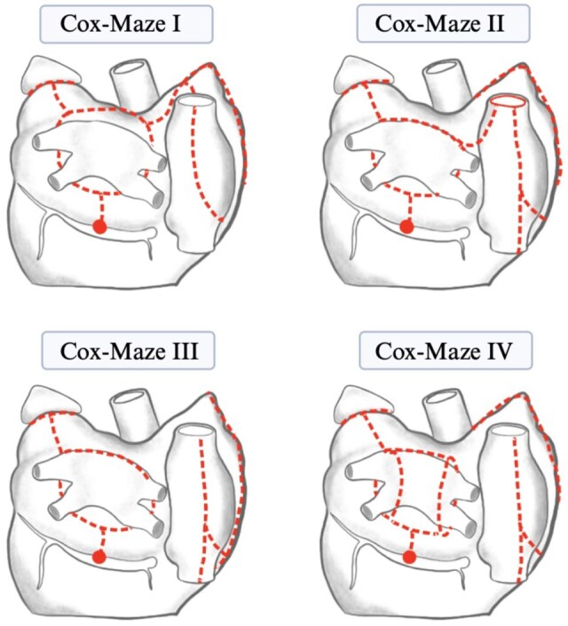
出典: Kowalewski M, et al. Eur J Cardiothorac Surg 2025;67(7):ezaf187. doi:10.1093/ejcts/ezaf187 / PubMed. CC BY-NC 4.0（原図を改変せず掲載）。
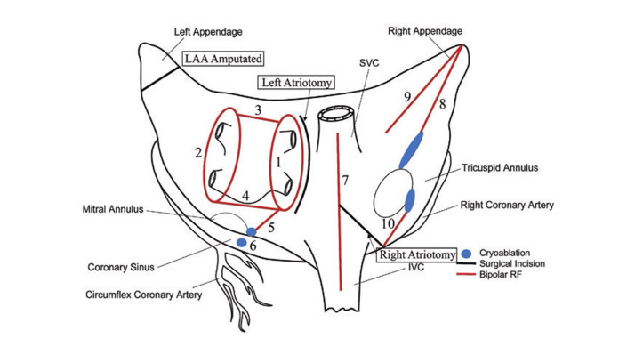
出典: Witt MC, et al. Rev Cardiovasc Med 2026;27(6):51123. doi:10.31083/RCM51123 / PubMed. CC BY 4.0（原図を改変せず掲載）。
初回手術は 1987年9月25日。この患者は術後第5病日に気管内吸引を契機として AF を発症したが digoxin と procainamide で洞調律に復し（procainamide は術後2か月時点で severe lupus syndrome のため中止）、以後 19年11か月1週間にわたり抗不整脈薬なしで洞調律を維持、20周年のちょうど3週間前に再発してβ遮断薬に即座に反応した。
Cox はこの術後5日目の AF を語る文脈で、当時 blanking period の必要性を認識していなかったと述懐する — 「外科手術の成功/失敗を正確に判定できるようになるまでに、心房切開線が治癒し心房の電気生理学的特性が正常に戻るための少なくとも90日（"blanking period"）を置くことが絶対に必要であると知らなかった」（Cox 2025）。外科的アブレーション試験で blanking を設定する際の正当化としてこの一次記述を引用できる。ただし Cox 論文には30日 blanking や延長 blanking への言及は一切なく、90日以外の数値を Cox に帰属させてはならない。
同時に、歴史的成績と現代基準の非互換性もここに現れる。1987年当時のリズム判定は、来訪していた Maurits Allessie 教授に患者の脈を触れてもらい規則的であることを確認し、心電図で洞調律を確認するというものであった。「19年11か月の洞調律維持」と、連続モニタリング＋>30秒閾値で評価される現代試験の成績は直接比較できない。
Cox は2022年の初回手術35周年記念で「Maze 手術はあと35年続くと思うか」と問われ「もちろん続かない！ しかし35年前に同じ質問をされていたら、同じ答えをしていただろう」と答えている。なお Cox 2025 は RF/cryo/PFA を含む後継技術に一切言及しておらず、Cox がその発展系列を容認したという記述は原文に存在しない。
一方で現実は原理から離れている。現代の総説は PVI が "the most frequently used surgical technique" であり、Cox-Maze IV は「複雑・侵襲的・時間がかかる」ため回避されていると認め、"Although this approach might be reasonable in patients with PAF, given the anatomical background of non-PAF, it appears to be less than optimal" と述べる（Kowalewski 2025）。
本レビューの立場：PVI 単独への簡略化は、Maze の設計原理（面積不足で macroreentry を成立させない）を意図的に放棄する行為である。ただし同時に、Kowalewski の実務的スタンス「フルの Cox-Maze の代わりに PVI + box lesion を行うことは、不整脈をまったく治療しないことに比べれば依然として極めて有益である」も併記すべきである。両者は矛盾ではなく「原理」と「現実」の階層差である。
III. 同時外科的アブレーション — どこまで確立したか
III-1. 洞調律を取り戻すことは RCT レベルで確立している
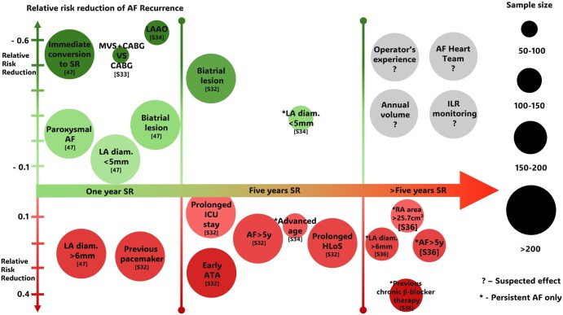
出典: Kowalewski M, et al. Eur J Cardiothorac Surg 2025;67(7):ezaf187. doi:10.1093/ejcts/ezaf187 / PubMed. CC BY-NC 4.0（原図を改変せず掲載）。
持続性/長期持続性 AF を有する僧帽弁手術患者260例を対象とした CTSN の多施設 RCT では、同時外科的アブレーションにより術後6か月と12か月の両方で AF がない割合が 63.2%（67/106）vs 29.4%（30/102）、差 33.8パーセントポイント（95%CI 21.1–46.5）, P<0.001 と有意に改善した（リズム判定は6・12か月の3日間連続 Holter、主要エンドポイントの20%は欠測のため多重代入）（Gillinov 2015）。
僧帽弁手術の RCT のみを対象とした13試験1,089例のメタ解析でも、洞調律率は退院時 65.1% vs 18.9%（OR 9.62, 95%CI 4.87–19.02）、6か月 63.5% vs 22.7%（OR 7.21, 4.30–12.11）、1年 67% vs 25.8%（OR 8.41, 5.14–13.77, I²=48%） と一貫し、13試験すべてが個別に有意で leave-one-out・fixed effect でも変わらなかった（Gemelli 2023）。
III-2. ハードエンドポイントは「1年 RCT では出ず、長期観察研究で出る」
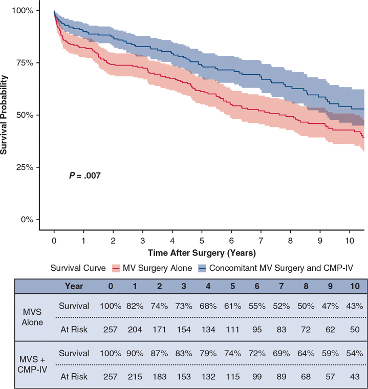
出典: Yi JJ, et al. J Thorac Cardiovasc Surg 2025;170(6):1631-1638.e11. doi:10.1016/j.jtcvs.2025.05.005 / PubMed. CC BY-NC-ND 4.0（原図を改変せず掲載）。
| アウトカム | RCT（CTSN／RCTメタ） | 長期メタ（median 62か月） | 単施設 PSM（10年） | 判定 |
|---|---|---|---|---|
| AF free | 63.2% vs 29.4%（差33.8pt）／1年 SR OR 8.41 | RR 1.93（1.50–2.49), I²=83% | 10年 65%（off AADs 56%） | 確立（定義依存） |
| 全死亡 | 1年 HR 0.76（0.32–1.84）／30日 OR 1.13（0.51–2.50）＝陰性 | HR 0.78（0.71–0.84), I²=32% | 10年生存 54% vs 43%, P=.007；SHR 0.67（0.53–0.85) | 観察研究で一貫、RCT では未証明 |
| 脳卒中 | CTSN 3.0% vs 1.6%, P=0.68／メタ OR 1.48（0.68–3.26） | HR 0.60（0.48–0.76), I²=71% | 30日 CVA 1% vs 2% | LAA 処置の交絡が大きく未決着 |
| 心不全再入院 | CTSN 9.0% vs 5.5%, P=0.28 | HR 0.92（0.87–0.96), I²=0% | 未報告 | 長期メタのみ |
| 恒久ペースメーカ | IRR 2.64（1.20–6.41), P=0.01；30日 17.3% vs 5.5%, P=0.003 | 周術期 RR 1.38（1.01–1.88）／長期 HR 1.35（1.03–1.77) | PSM後 14% vs 9%, P=.199 | 唯一明確なトレードオフ |
| CPB／遮断時間 | CPB +26.96分（18.09–35.83）／遮断 +17.41分（11.85–22.97) | CPB +31.6分（23.9–39.3）／ACC +19.2分（14.0–24.4) | CPB +65分／遮断 +25分 | 必発。lesion set の完全性に比例 |
| AKI | CTSN 3.3 vs 1.8/100pt-yr, P=0.47 | RR 1.00（0.94–1.07） | PSM後 29% vs 20%, P=.014 | フル lesion set では増える可能性 |
出典: Gillinov 2015、Gemelli 2023、Sakurai 2025（24研究41,678例、weighted median 62か月）、Yi 2025（847例、PSM 257 pairs）。
観察研究では一貫して示されているが、RCT 単独では未証明。 Sakurai メタでも生存利益は主に観察研究に由来し（RCT vs 観察研究の subgroup difference は p=0.19 で「差を示せなかった」にとどまる）、著者らは標準化 lesion set・厳格なリズムフォロー・アウトカム adjudication を備えた大規模 RCT（NCT05434819 Surgical Ablation of AF Efficacy Trial）の必要を結論している。 さらに Yi の単施設 PSM は LAA 処置率が CMP-IV 群 100% に対し対照群 15–19% であり、著者自身が "Our data do not distinguish the survival benefits of sinus rhythm restoration from that of LAAO." と明記している。「洞調律回復の効果」と「LAA 閉鎖の効果」を分離した研究は本レビューの精読範囲に1編も存在しない。 なお時間軸にも注意を要する。台湾全国データ（11,459例）では全死亡 HR 0.75（95%CI 0.69–0.81, P<0.001）であったが、同データで外科的アブレーション群の2年生存はむしろ不良で、中期に生存曲線が交差した後に長期で逆転している（交差時点の具体値は原著総説に記載なし）。余命が短いと見込まれる症例では生存利益を回収できない可能性があり、IC で説明すべき点である（Kowalewski 2025）。23 RCT のメタでは生存利益なし（RR 1.07, 95%CI 0.75–1.52, P=0.88）。
III-3. 10年成績 — 40%超が再発するが、大半は無症候
僧帽弁疾患＋AF の847例（2002–2023年、PSM 257 pairs、追跡中央値 4.2年 [IQR 1.5–8.5]）で、Cox-Maze IV の長期リズム成績は freedom from atrial tachyarrhythmias が1年 90%・5年 80%・10年 65%、AAD 非使用下では 83%・64%・56%（95%CI の記載なし）。著者は "the significant late recurrence of over 40% at 10 years emphasizes the need for prolonged follow-up" と結論する。症候性再発は5年6%・10年17% にとどまり、大半は無症候である（Yi 2025）。
同研究で注目すべきは AF 病型による10年成績の差が消失した点である（10年 freedom from ATAs 発作性 73% vs 非発作性 56%、有意差なし）。発作性群は1年（96% vs 86%, P=.004）および AAD 非使用下では5年まで優れるが、著者は "The long-term success ... was similar across all types of AF at 10 years, in contradistinction to catheter ablation." と述べる。長期生存の予測因子としても 非発作性 AF（SHR 0.96, 95%CI 0.72–1.27, P=.750）と左房径（SHR 0.99, 0.95–1.03, P=.540）はいずれも有意でなかった。ただし10年時点の分母は71例（prolonged monitoring 36例）で 95%CI も示されておらず、「10年で差が消える」を強い主張として引用してはならない。
病型についての短期データは逆を向く — Terminate AF では12か月の ATA 累積発生率が persistent 8% vs long-standing persistent 28%（P=.002）（Damiano 2026）。矛盾ではなく時間軸の違いとして読むのが妥当で、実務的には「LSPAF でも諦めない／ただし12か月時点で約3割は再発すると説明する」が両立する結論である。
III-4. 見落とされがちなトレードオフ — AKI
Yi の単施設データでは PSM 後 AKI が 29% vs 20%（P=.014） と有意に増加し、かつ AKI は晩期死亡の最強の予測因子（SHR 2.56, 95%CI 2.03–3.23, P<.001）であった。著者は "CMP-IV is an independent risk factor for this complication" と自認する。一方 Sakurai メタでは AKI RR 1.00（0.94–1.07）、オランダ全国レジストリの非僧帽弁手術では renal failure OR 1.57（0.94–2.61）, P=0.083 と有意でない。
→ フルの biatrial CMP-IV（CPB +65分）を行う文脈でのみ顕在化する可能性がある。「PPM だけがトレードオフ」という定型的記述は、Cox-Maze IV を論じる際には不十分である。
III-5. 最大のボトルネックはエビデンスではなく実装
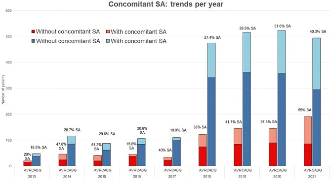
出典: Bayón MA, et al. Eur J Cardiothorac Surg 2025;67(8):ezaf244. doi:10.1093/ejcts/ezaf244 / PubMed. CC BY 4.0（原図を改変せず掲載）。
米国2州の quality collaborative に所属する心臓外科医66名（回答率48.9%）の調査で、同時アブレーションの障壁は 46.30% が「障壁なし」、22.73% が大動脈遮断時間の延長、12.87% が患者のハイリスクであり、「効果があると思わない」はわずか 1.50%（1名）であった。class I 推奨を知らなかったのは 12.1%（8/66）にすぎず、98.5% が自施設に機器と企業担当者を有していた（Mehaffey 2023）。
未実装の中心は lesion set そのもの、とりわけ非僧帽弁手術である：
| 対象 | Cox-Maze IV を "always"（>80%の症例で）行う | 出典 |
|---|---|---|
| 僧帽弁（左房切開あり）＋持続性AF | 37/66（56.1%）（"Never/Rarely" 10/66） | Mehaffey（自己申告） |
| 非僧帽弁（AVR/CABG/大動脈）＋持続性AF | 18/66（27.3%）（"Never" 11/66 = 16.7%） | 同上 |
| 左心耳結紮（open atrial ＋ 持続性AF） | 58/66（87.9%） | 同上 |
| 実データ: オランダ全国（isolated CABG＋AVR） | 2018年 29.7% → 2021年 44.4%（CABG 27.4%→40.3%、AVR 38.8%→55.0%） | Bayón 2025 |
最も要望の多かった介入は 循環器/電気生理医からのサポート（21.21%）で、紹介元循環器医が同時アブレーションに言及しないと答えた外科医が 39.3%。著者は "continued education is needed even within the cardiology community" と述べ、さらに "Before implementing quality reporting, more data are needed regarding the effectiveness of PVI versus biatrial maze to drive the metrics." と、lesion set のエビデンス不足（章 IV）が質指標設定の障害になっている循環構造を指摘している。
なお non-mitral 手術での安全性懸念には直接の反証がある。ICE-AFIB では非僧帽弁（左房切開を伴わない）群でも僧帽弁群と重大有害事象・不整脈再発のいずれも有意差がなかった（30日複合 MAE 6.1% vs 10.9%, P=.5504；primary effectiveness 66.7%［25/39］ vs 70.4%［57/81］, P=.6807）。著者はこれを "perceived complexity (particularly in nonatriotomy concomitant surgery)" という普及障壁への直接的な反証として提示している（Ad 2026）。オランダの実データでも、同時アブレーションは周術期合併症を増やさず（in-hospital mortality OR 0.76 [0.43–1.34]、CVA/TIA OR 0.52 [0.26–1.06]、pneumonia OR 0.71 [0.47–1.09]、renal failure OR 1.57 [0.94–2.61]、いずれも有意差なし）、時間コストは調整後 CPB +18分（95%CI 16–21）、大動脈遮断 +8分（6–10） にとどまった（Bayón 2025）。
遮断時間の懸念（barrier の 22.73%）に対する実測値は、+8分（オランダ・非僧帽弁レジストリ、調整後）／+17.41分（RCTメタ・遮断）／+25分（Yi のフル CMP-IV 実データ）、CPB では +18分／+26.96分／+31.6分／+65分と、lesion set の完全性に比例して4倍以上の幅がある。Terminate AF の実測では焼灼操作だけで iRF 11±4分 ＋ cryo 10±3分 ≒ 21分。時間コストを述べるときは lesion set とセットで示すこと。
III-6. 近年の前向き多施設試験 — 「full lesion set は多施設で完遂できる」
| 項目 | Terminate AF（iRF clamp ＋ CryoFlex、13施設） | ICE-AFIB（cryoICE 単独、14施設） |
|---|---|---|
| デザイン | 前向き単群 Bayesian adaptive、treated 94 | 前向き単群 pivotal IDE、PA 150 |
| lesion set | 完全 biatrial Cox-Maze IV をプロトコル上必須、冠静脈洞も必須。per-protocol 79/94（84%） | Cox-maze III（左房5本＋右房5本）を全例 100%（150/150）完遂 |
| 12か月 AAD off | 76.2%（95%BCI 66.0–84.0）／Holter定義 81%／AAD不問 87% | 6–12か月 70%（95%CrI 62–77）／AAD不問 80%（73–87）／HRS定義12か月 77.3%（92/119） |
| 30日 MAE / 死亡 | MAE 7.5%（7/93, BCI 3.7–14.7）、30日死亡 4.3%（4/93）（平均 STS PROM 1.8% を上回る） | MAE 9.3%（14/150）、operative death 2.0%（3/150）、stroke 2.7% |
| 新規 PPM | KM 22%（完全 AV ブロック11例、洞機能不全9例） | 30日 13.3%（20/150）、12か月 15.3%（23/150）（うち 43.5% が三尖弁同時手術例） |
| LAA | 全例（device 51%／excised 41%／suture 6%／stapled 1%） | AtriClip 99.3%（149/150）、acute success に「TEE で fluid communication なし＋残存 base <10 mm」を要求（実測 median 6.0 mm） |
| 除外された「難しい層」 | LVEF≤30%、NYHA IV、redo、STS PROM>10%、LA径>6 cm、AF アブレーション既往 | redo、standalone、LA径>7.0 cm、AF持続>10年、NYHA IV、LVEF<30% |
| 資金・COI | Medtronic（社員が共著かつ原稿作成） | AtriCure（社員が医学ライティングと post-hoc 解析） |
位置づけを誤らないこと：両試験は単群・対照なし・メーカー資金のデバイス承認試験であり、「同時アブレーションをすべきか」には答えていない。答えているのは「完全な biatrial lesion set を、この道具立てで、多施設で、実行できるか」であり、そこは説得力がある。また ICE-AFIB の performance goal（有効性55%）は自社系メタ解析の random effects 下限 0.478 に7%を足した値であり、PG を上回ったことは「歴史的対照を上回った」ことしか意味しない。両試験の 76.2% と 70% を並べて RF と cryo の優劣を論じてはならない（定義もコホートも別物）。
技術的には2点、そのまま術式に落ちる知見がある（章 V-2）：① 弁輪・冠静脈洞は cryo、PV系は clamp（Terminate AF: 僧帽弁輪 lesion の 98.9%・冠静脈洞 lesion の 98.9%［clamp 0%］・三尖弁側 100% が cryo、PV/connecting lesion は clamp 83.0–97.9%）＝clamp だけでは Cox-Maze IV は完成しない。② LAA 処理は lesion set と一体（Terminate AF は LAA 切除断端から clamp 片顎を挿入して lesion H を作る手順）。
IV. Lesion set — 「どこまで焼くか」は決着していない
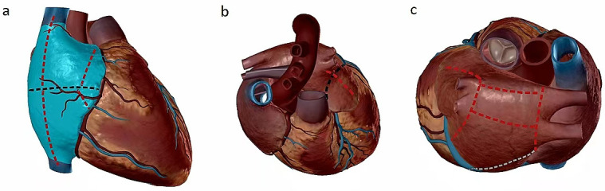
出典: Yu Y, et al. Rev Cardiovasc Med 2025;26(4):26841. doi:10.31083/RCM26841 / PubMed. CC BY 4.0（原図を改変せず掲載）。
「アブレーションをやるか否か」は決着した。決着していないのは「どこまで焼くか」である。 AATS 2026 コンセンサスにおける Statement 3.4（AFMR での MR 矯正＋同時外科的アブレーション = CoR I / LoE B-nonrandomized）と 3.5（biatrial maze should be considered = CoR IIa / LoE C-expert opinion）の格差が、この非対称を最も端的に示す（Mori 2026）。
IV-1. biatrial vs 左房限定 — 「右房病変があるかどうか」が実務解
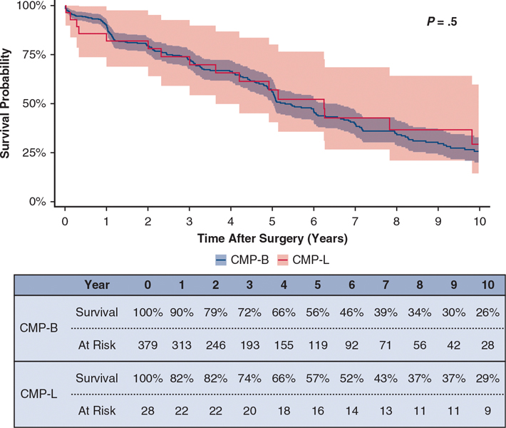
出典: Yi JJ, et al. J Thorac Cardiovasc Surg 2025;170(6):1631-1638.e11. doi:10.1016/j.jtcvs.2025.05.005 / PubMed. CC BY-NC-ND 4.0（原図を改変せず掲載）。
| データ源 | 比較 | 結果 |
|---|---|---|
| Pyo 2025（韓国5施設、IPTW、1825例、中央値 64.5か月） | biatrial 1296 vs 左房のみ 529 | AF再発 5年 28.6% vs 34.2%、SHR 1.256（95%CI 1.121–1.406), P<.0001＝BA優位（10年では 37.6% vs 39.2% と収束） |
| 同・三尖弁手術を要さないサブグループ | BA 322 vs LA 397 | ★SHR 0.76（95%CI 0.62–0.93), P=.009 — LA 優位に逆転 |
| Guo 2021（19 RCT、2031例、Bayesian NMA） | PVI vs LAM vs BAM vs 非アブレーション | 非アブレーションに対し PVI OR 5.02（Cr.I 2.72–10.02）／LAM 7.97（4.93–14.29）／BAM 8.29（4.90–14.86）。3術式間は random-effects で有意差なし。GRADE Low〜Very low |
| Gemelli メタ サブ解析 | biatrial 156 vs LA-only 157（3試験） | 1年SR OR 1.62（0.87–3.01), P=0.13, I²=22% ＝ negative ではなく underpowered |
| CTSN nested randomization（主要, 72時間Holter×2点） | PVI 67 vs biatrial maze 66 | 61% vs 66%、差5pt（95%CI −13 to 23), P=0.60 ＝事前仮説なし・検出力不足 |
| CTSN 二次解析（週1回TTM 7,949記録） | 同上 | freedom 34% vs 52%（OR 2.31, 0.95–5.65, P=.07）・load RR 0.90（0.57–1.43, P=.6/.7）＝いずれも非有意だが、prevalence は12か月 36% vs 23%（plateau 期 P=.02）・12か月 burden 2.0 vs 1.2か月（P=.05）で biatrial 優位 |
出典: Pyo 2025、Guo 2021、Gemelli 2023、Gillinov 2015、Blackstone 2019。
CTSN では同一データで「差なし」と「差あり」が両立する — freedom（患者単位 all-or-none）と prevalence/burden（時間積分）が別の量を測っているからである。なお Blackstone 解析の最大の弱点は informative dropout で、最も成績が良かった biatrial 群が TTM 提出中央値が最少（29本 vs 44/45本）、10か月以上の継続提出率も最低（64% vs 80%/78%）。送信本数が少ないほど「1度も AF が捉えられない＝free」になりやすい構造があり、原著はこの方向のバイアスを議論していない。同解析は探索的・仮説生成的という但し書きを外して引用してはならない（Gillinov 自身 "We did not reanalyze it according to the Heart Rhythm Society's agreed-upon definitions." と認めている）。
Pyo と Guo は表面上対立するが、実質は「集団が違う」。 Pyo の BA 群は 75.2% が同時三尖弁手術（SMD 116.1%）であり、三尖弁手術を要さないサブグループでは優劣が逆転する。Guo の PVI 群には box lesion 施行試験が混入して PVI と LAM の差を圧縮しており（著者自身が指摘）、組入れ試験の多くは「NSR at follow-up」（時間閾値なし・単発 ECG）という非差別的誤分類で null 方向にバイアスがかかる。
実務解：右房病変（TR・右房拡大・typical flutter）があれば右房 lesion を足す、なければ左房 lesion set で足りる。 これは両論文の著者の到達点でもある。ただし「右房病変のない患者で右房 lesion を足すべきか」に直接答えた研究は存在せず（Guo は「いずれの組入れ試験もそのデザインになっていない」と明記、Pyo のサブ解析は事後解析かつ人数が Table 1 と27例合わない）、RCT が存在しない領域である。両陣営が同じ RCT を要求している — Blackstone "There is need for a confirmatory randomized clinical trial of these alternative lesion sets."、Yi "A randomized control trial comparing biatrial and left atrial approaches would be necessary."
右房 lesion の代償はペースメーカだが、これも「右房 lesion ＝ PPM」と読むべきではない。Pyo の早期 PPM は BA 29/1296（2.2%）vs LA 2/529（0.4%）、IPTW 調整 OR 0.16（95%CI 0.07–0.38, P<.001）だが、三尖弁手術非施行サブグループでは差が消失する（OR 0.38, 95%CI 0.12–1.18, P=.095）。すなわち「右房病変を持つ重症例の既存の洞不全」と読むのが正確である（章 X）。
IV-2. 後壁隔離（box lesion）— カテーテルの陰性 RCT を外科に持ち込んではならない
カテーテル領域では、PVI への後壁隔離（PWI）追加は2つの大規模 RCT でいずれも否定された：
- CAPLA 長期（333例、中央値3.6年 [IQR 3.2–4.3]）: 心房性不整脈非再発 35.5%（59/169）vs 42.1%（68/164）、HR 1.15（95%CI 0.88–1.51), P=.55（William 2025）
- CORNERSTONE AF（日本16施設513例、18か月）: 80.9% vs 76.8%、HR 0.76（95%CI 0.53–1.09), P=.110（絶対差 4.1%、NNT 24）（Miyazaki 2026）
しかし両試験が検証したのは「耐久性のない後壁隔離」である。 再アブレーション時の後壁再伝導は CAPLA 75.0%（39/52）、CORNERSTONE 66.7%。CAPLA の Kistler ら自身が原因として (a) roof line が septopulmonary bundle の心外膜層を貫通しない、(b) epi-endocardial connection のため box 内追加焼灼が53%で必要、(c) 食道加温による透壁病変形成の阻害 を挙げ、"A surgical approach provides epicardial access to isolate the posterior wall." と書いている。
一方、外科 Maze 後の再発例86例を高密度マッピングした研究では、外科の posterior LA box の再伝導は 3/47（6.4%）、roof line は 3/48（6.3%） と非常に durable であった（Goings 2025）。
| lesion | 外科 Maze 後の再伝導（Goings 2025） | カテーテル側 |
|---|---|---|
| PVI（全体） | 65/83 患者（78.3%）（LSPV 68.7%／LIPV 67.5%／RIPV 65.1%／RSPV 56.6%） | 急性期ブロック達成はほぼ100% |
| posterior LA box | 3/47（6.4%）＝durable | CAPLA redo 75.0%／CORNERSTONE 66.7% が再伝導 |
| LA roof line | 3/48（6.3%） | — |
| mitral isthmus | 5/44（11.4%） | PROMPT-AF 完全ブロック 215/246（87.4%） |
| LAA–LSPV connecting line | 1/31（3.2%） | — |
| LAA–僧帽弁輪 line | 2/21（9.5%）（ラインは durable だが粗動 100% vs 71.2%, P=.005） | — |
| intercaval line | 3/15（20%） | — |
| CTI line | 8/28（28.6%）＝最も破綻しやすい。かつ非CTI右房粗動が増える（29.6% vs 10.2%, P=.031） | PROMPT-AF 233/246（94.3%） |
外科が durable なのは左房後壁・roof（6%台）で、弱いのは CTI（28.6%）・intercaval（20%）・冠静脈洞・僧帽弁峡部である。 カテーテルはその逆で後壁が最も破綻する（66.7–75%）。したがってカテーテルの2つの陰性 RCT で外科的 box lesion の価値を棄却してはならない。 逆に、外科側も「うちの box は本当に透壁か」を示さない限り同じ土俵に乗れない — 外科領域でも box (n=90) vs U lesion (n=361) で再発差はなく（多変量 OR 0.50, 95%CI 0.21–1.15, P=.11、Nitta 2025）、胸腔鏡単独外科アブレーションはカテーテルに勝てていない（CASA-AF、章 VIII）。「外科なら透壁だから勝てる」は未証明である。
なお CORNERSTONE では 症候性胃不全麻痺が後壁隔離群のみ3例（1.2%）（発症2日、消失32日）に発生している。外科でも後壁・食道近傍のエネルギー印加時には迷走神経（胃前庭部枝）損傷を意識すべきである。
IV-3. 「線状焼灼による心房コンパートメント化」— カテーテル領域でついに陽性 RCT が出た
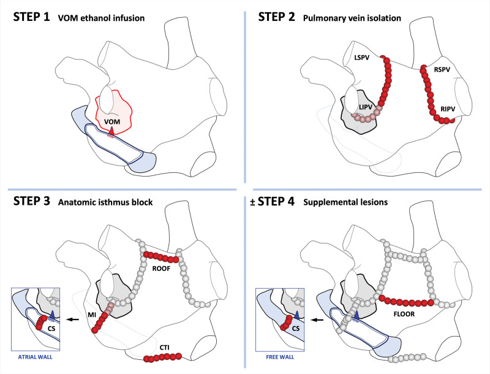
出典: Derval N, et al. Circ Arrhythm Electrophysiol 2025;18(5):e013427. doi:10.1161/CIRCEP.124.013427 / PubMed. CC BY-NC-ND 4.0（原図を改変せず掲載）。
Cox-Maze の設計思想そのものが、カテーテル領域で2つの RCT に支持された：
- PROMPT-AF（中国12施設495例）: Marshall 静脈エタノール注入（EIVOM）＋僧帽弁峡部・左房ルーフ・CTI の3ライン追加により、12か月・AAD 非使用下の心房性不整脈非再発が 70.7%（174/246）vs 61.5%（153/249）（絶対差 9.2%, 95%CI 1.0–17.6、HR 0.73, 95%CI 0.54–0.99, P=.045）（Sang 2025）
- Marshall-Plan（単施設118例）: VOM エタノール＋PVI＋3ライン で 86.4%（51/59）vs 66.1%（39/59）（絶対差 +20.3%, P=0.012、HR/95%CI の報告なし）（Derval 2025）
両試験の共通項は「Marshall 静脈・冠静脈洞という心外膜構造を処理して僧帽弁峡部ブロックを完成させたこと」であり、これは外科が術野から無償で行える処置である。 実際 PROMPT-AF では僧帽弁峡部ブロックのため 62.6%（154/246）で冠静脈洞内からの追加焼灼を要し、Marshall-Plan は系統的な冠静脈洞内焼灼 4±3分を前提としている。
さらに実務に直結する所見：Marshall-Plan で左房ルーフラインのみでブロックが得られたのは30例（全体51%）に過ぎず、44%（26/59）でフロアラインを追加して初めて dome transection が92%に達した。 → 外科的にも roof line 単独ではなく roof＋floor の box を作るべきである。
「線状焼灼は医原性心房頻拍を増やす」という懸念は、ブロックを電気生理学的に確認した場合には支持されなかった（PROMPT-AF: AFL/AT からの非再発 86.2% vs 82.7%、HR 0.79, 95%CI 0.51–1.24, P=.25／Marshall-Plan: 再発様式は両群とも持続性 AF 主体, P=0.67）。また Marshall-Plan では広範な線状 lesion を追加しても 左房 A 波速度は12か月時 61±20 cm/s へ改善（P<0.001）し PVI 単独群（67±16 cm/s）との差もなく、重大合併症も 1.7% vs 1.7%（P=1.0）であった。「広範な lesion set は心房収縮を失わせる」という懸念への反証である。
収束点：催不整脈性をもたらすのは lesion の追加ではなく lesion の不完全性である。ただし Goings のデータは1点だけ警告を残す — LAA–僧帽弁輪ラインを置いた20例は100%が粗動を再発（vs 71.2%, P=.005）、左房粗動も 80% vs 36.4%（P=.001）。このライン自体の再伝導は 2/21（9.5%）と低いにもかかわらず粗動が多発した背景に、30%（6/20）で annulus-to-LIPV ラインが併施されずライン連続性が断たれていたことがある。→ 左心耳に繋ぐ lesion は、完全透壁・解剖学的連続性・電気的アンカリングを担保できないなら置かない方がよい。
IV-4. Maze 失敗の主因は lesion set の選択ではなく、個々の lesion の不完全性
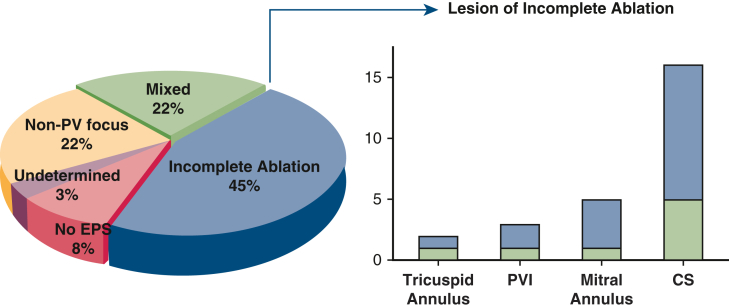
出典: Nitta T, et al. JTCVS Open 2025;23:110-119. doi:10.1016/j.xjon.2024.10.031 / PubMed. CC BY-NC-ND 4.0（原図を改変せず掲載）。
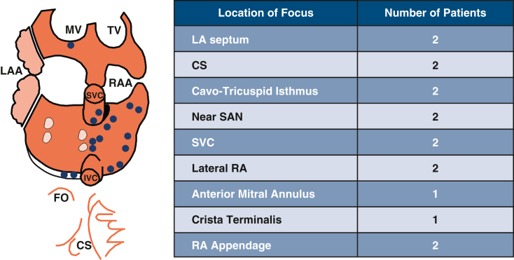
出典: Nitta T, et al. JTCVS Open 2025;23:110-119. doi:10.1016/j.xjon.2024.10.031 / PubMed. CC BY-NC-ND 4.0（原図を改変せず掲載）。
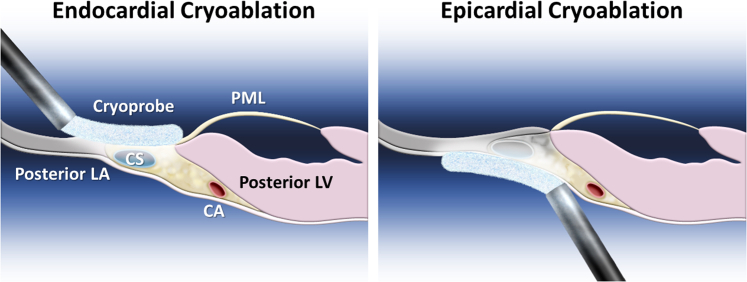
出典: Nitta T, et al. JTCVS Open 2025;23:110-119. doi:10.1016/j.xjon.2024.10.031 / PubMed. CC BY-NC-ND 4.0（原図を改変せず掲載）。
Maze 術後に心房頻拍を発症した36例中33例（92%）に電気生理検査を施行した単施設研究では、24例（67%）が焼灼線の不完全性によるマクロリエントリーであり、そのギャップ部位は 冠静脈洞が16例（67%）と最多、次いで僧帽弁峡部5例・PVI 3例・三尖弁峡部2例であった。心内膜側の焼灼に心外膜側からの追加冠静脈洞焼灼を加えた症例では術後 AT 発症が 14% から 3% へ減少（P<.001、多変量 OR 0.21, 95%CI 0.06–0.82, P=.03）し、エネルギー源による差はなかった（cryo 5% vs RF 3%, N.S.）（Nitta 2025）。
IV-5. 最大の効果量は「術中にブロックを確認したか」
同研究で、術中に肺静脈ペーシングによる伝導ブロック確認を行った211例中11例（5.2%）で焼灼線を越える伝導残存が検出され、ペーシング施行は lesion set（box vs U lesion: OR 0.50, 95%CI 0.21–1.15, P=.11）よりも強い術後 AF 再発の独立予測因子であった（OR 0.32, 95%CI 0.13–0.71, P=.004）（Nitta 2025）。
「どの lesion set を置くか」より「置いた lesion が本当に通っていないかを術中に検証したか」の方が効果量が大きい。 これは外科側だけの話ではない。EHRA/HRS 2024 は "Documentation of exit and/or entrance block across pulmonary veins and completeness of deployed lines is beneficial" を Advice TO DO（ただし根拠は OPN = 専門家意見）としつつ、実態を "it is infrequently performed" と記している（Tzeis 2024）。実際 EORP-EHAFA レジストリでは、ハイブリッド群の心外膜手技中に双方向ブロック検証が行われたのは 35%（80/231） に過ぎず（心外膜単独群は 83%）、その結果 心内膜側で 30%（68/228）に touch-up PVI が必要となった（Vroomen 2025）。
エネルギー源についても同じ読み替えが効く。Goings のマッピングでは PV 再伝導が cut-and-sew 5%（40 PV）vs RF 56%（172 PV, OR 0.11）vs cryo 67%（156 PV, OR 0.07）、いずれも P<.0001（RF vs cryo OR 0.63, P=.03）であったが、著者自身が「最適な手技で行えば cryo/RF も同等になりうる」と留保しており、cut-and-sew 群は Maze III として施行時期が古く時代・術者効果の交絡を避けられない（Nitta のコホートも1993–2017年で era effect の調整が皆無）。Nitta の解析ではRF 適用回数はブロック成否と相関しなかった＝回数ではなくクランプの掛け方の問題である。
V. エネルギー源とデバイス — RF / cryo / nsPFA
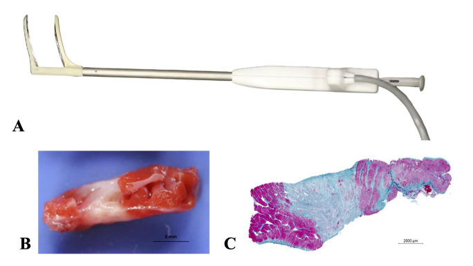
出典: Witt MC, et al. Rev Cardiovasc Med 2026;27(6):51123. doi:10.31083/RCM51123 / PubMed. CC BY 4.0（原図を改変せず掲載）。
V-1. RF vs cryo は決着していない
60研究8,293例（cryo 3,364／bipolar RF 1,937／併用 2,992）のメタ解析では、再構成 IPD による4年 freedom from AF が cryo 76.7%±2.2%、bipolar RF 60.9%±2.2%、併用 66.3%±1.6%（log-rank p<0.0001） と報告された（Baudo 2025）。
しかしこの数値を因果として引いてはならない：
- 同解析は各原著の成功定義をそのまま採用し（"The paper's definition of freedom from AF was used for each included study"）、blanking period・>30秒閾値・AAD の扱い・リズムモニタリング手段と頻度がいずれも本文に記載されていない。
- 決定的な4年時点の BRF データはわずか2編78例（AF発生率 51.39%, 95%CI 20.40–81.69, I²=87.5%, leave-one-out 変動 31–77%）に依存し、メタ回帰の OR 12.04（95%CI 2.15–67.6, p=0.0047）も同様に不安定。
- COI が逆方向に働く点にも注意 — Baudo 論文は AtriCure（bipolar RF クランプの主要メーカー）のコンサルタントを含み、後述の nsPFA 3編は全編 Pulse Biosciences 資金・株式保有である。どちらの結論も企業利益と整合する。
一方、同メタ解析から実務に使える所見が2つある：① AF 再発の唯一の多変量独立予測因子は平均左房径（OR 1.04/mm, 95%CI 1.01–1.08, p=0.0159）。② bipolar RF サブグループでは左心耳閉鎖が保護因子（OR 0.92, 95%CI 0.88–0.97, p=0.0004） — LAA 処置を Cox-Maze IV に組み込む根拠を、塞栓予防に加えてリズム転帰の側からも補強する所見である。
V-2. clamp だけでは Cox-Maze IV は完成しない
Baudo が指摘する構造問題（bipolar clamp の jaw 先端が僧帽弁輪・三尖弁輪に届かない）は、Terminate AF の lesion 別デバイス使用データで直接裏づけられる — 僧帽弁輪 lesion の 98.9%・冠静脈洞 lesion の 98.9%（clamp 0%）・三尖弁側 lesion の 100% が cryoprobe で作成され、PVI と connecting lesion は bipolar clamp が主体（83.0–97.9%）（Damiano 2026）。
すなわち「僧帽弁輪・冠静脈洞・三尖弁輪は cryo で補完する」という技術論だけが、RF vs cryo 論争から実務に落ちる部分である。 そしてこの点では両陣営（Brescia の Baudo ら、Washington University の Damiano/Zemlin ら、Ad ら）が一致している。
V-3. nsPFA クランプ — 前臨床データは一貫しているが、ヒト成績はゼロ
ナノ秒パルスフィールドアブレーション（nsPFA）クランプについて、3つの独立した慢性ブタ実験が透壁性と時間短縮を一貫して示している：
| 検証項目 | Serra 2023 | Dunnington 2025 | Yi 2026 |
|---|---|---|---|
| デザイン | ミニブタ14頭・105 ablations、単群、6週/6か月 | ブタ12頭、nsPFA vs bipolar RF の 1:1 RCT、GLP、盲検病理、35±5日 | ブタ9頭（解析7心）、単群、拍動心、26±7日 |
| 透壁性 | 315/315 cross-sections（100%） | 全 lesion 透壁、lesion depth ＝ tissue thickness（回帰の傾き 1.0、0–20 mm） | 切片 251/252（99.6%）、lesion 32/33（97%）、box は 59/59切片（100%）、最大深度 17.5 mm |
| 焼灼時間 | 300 ns × 18発 @ 6 Hz | 1.25秒/箇所（SD 0） vs RF 28.6±16.7秒。7 lesion 計 8.75秒 vs 200.5±24秒, P<.01 | 1回2.5秒、box は 2×2.5秒＝5秒（自験 EnCompass RF 72秒との対比） |
| 電気的ブロック | ★未検証（connexin-43 陰性からの推定のみ） | 35日 exit block 30/30部位（100%）、両群とも | 30日 exit block 16/17（94.1%）（RAA 5/6・LAA 6/6・PV 5/5） |
| 食道・横隔神経 | 未評価 | 横隔神経麻痺 0（生存10頭の左右20神経、両群）、食道内腔温上昇 <1℃（両群） | 未評価 |
| 冠動脈 | 血管壁平滑筋 intact（記述のみ） | 未評価 | 盲検0–4スケールで全項目 p>0.2（neointima/inflammation/intimal thickness/collagen/elastin）、血栓0 |
| 弁輪部 lesion | 未検証 | "not designed to answer this question" と明示的に回避 | ★surrogate として検証 → 9頭中2頭（22%）が VF 死 |
拍動心での box lesion は「できる」段階に到達した — 心房切開なし・心外膜からクランプ1回設置・通電5秒で左房後壁＋PV box が透壁 59/59切片（100%）、30日 exit block は PV 5/5・LAA 6/6・RAA 5/6 の計 16/17（94%）。ただし mitral isthmus / CTI line はクランプ形状上作れず、単一エネルギー源での拍動心 完全 Cox-Maze IV は未達である。
周囲組織の安全性は「熱源より良い」方向のシグナルが揃う。Dunnington の 1:1 RCT では device-related SAE が nsPFA 0%（0/6頭）vs RF 16.7%（1/6頭＝術後24日の左室焼灼部 erosion による穿孔死）、RF 群でさらに心内血栓2例・腎梗塞1例・食道の粘膜下線維化＋中等度炎症が生じた。
Dunnington で食道内腔温の上昇は両群とも 1℃未満だったにもかかわらず、RF 群でのみ食道組織障害が出た。 術中の食道温モニタリングを安全性の証明として扱ってはならない。
V-4. 冠動脈の上は焼かない — 現時点で最も重い安全性シグナル
Yi 2026 は僧帽弁輪・三尖弁輪を跨ぐ経弁的（isthmus 代用）焼灼をあえて試み、9頭中2頭（22%）が通電1秒以内に難治性心室細動を発症し、8–10回の除細動に不応で死亡した。著者らは冠攣縮を疑い "Until this work is done, ablation over coronary arteries should not be performed" と明記している。
回旋枝・冠静脈洞の直上を走る mitral isthmus line と、右冠動脈近傍の CTI line については、現時点でも endocardial cryo が標準であるという結論を、この研究は覆さない。同一技術に対して「未検証（Ad ら）」「やってみたら致死的（Damiano/Zemlin ら）」という温度差があるが、外科レビューとしては唯一実際に試した Yi の VF シグナルを最上位に置くべきである。
そしてカテーテル PFA 側からも同方向の警告が来ている（章 IX-3）：pentaspline カテーテルによる外側僧帽弁峡部ラインの初期研究で冠動脈攣縮が臨床的に 4–10%、無症候性では最大 40% に生じ、EHRA 声明は pentaspline による CTI アブレーションを静注ニトログリセリン下でのみ行うよう求めている（Kühne 2026）。
V-5. 透壁性 ≠ 伝導ブロック ≠ AF free
nsPFA の前臨床データを読む際の3段の飛躍を明記しておく：
- Serra は透壁 100% を示しながら EP 検証を行っていない（残存平滑筋の非伝導性は染色からの推定）。
- Yi は逆に、組織学的に非透壁だった RAA lesion でも30日 exit block は成立していた例を報告し、両者が一致しないことを自ら明記している。
- そして nsPFA 3編のいずれも AF モデルではなく、Holter/ILR によるリズム評価をしていない。
「透壁100%」から「AF free 90%」への飛躍は、本レビューの精読範囲でどの論文もまだ埋めていない。 ヒトで外科的に PFA を用いた唯一の前向き報告は、CABG（10例）または AVR（2例）に併施した心外膜神経節叢（GP）への PFA 12例の単群試験（NEURAL-AF-2）だが、これは除神経であって lesion set ではない。デバイス関連有害事象なく施行でき副交感神経指標（rMSSD 59±18→42±15 ms, P=0.01／HF power 321±189→198±153 ms², P=0.05）の低下が12か月持続したが、心房有効不応期の変化は非有意（+6.9%±19.6%, P=0.38）＝術中に完遂を確認する指標がない。リズム監視は24時間 Holter 4回（12か月で計96時間）のみで、しかもベースライン Holter で12例全例が AF 陰性であったため、「再発1例（burden 0.30%）」は AF 抑制効果の根拠にならない（Musikantow 2024）。
成績数値が良好な研究ほどリズム判定が疎である — Baudo（判定手段の記載なしで4年 76.7%）／Musikantow（24時間 Holter 4回で再発 1/12例）／nsPFA 3編（pacing exit block を2–3時点のみで 94–100%）。
VI. 左房サイズと左房縮小術 — 「大きいから諦める」は誤り
VI-1. 左房拡大それ自体は断念の理由にならない
LA 前後径 >5.5 cm の巨大左房群でも、full Cox-Maze 主体なら術後1年の洞調律維持は 71/83（86%）（小左房群 270/290 [93%], P=.04）、2年時には 51/60（85%）vs 174/193（90%）と有意差が消失した（P=.35）。≥7.5 cm（n=7）でも 86%（Ad 2014）。
多変量ロジスティック回帰で1年時失敗の有意な予測因子は AF 罹病期間（OR 1.13/年, 95%CI 1.05–1.22, P<.001）と同時手術件数（OR 1.74, 95%CI 1.04–2.90, P=.03）の2つのみで、左房径は有意な予測因子ではなかった（OR 1.28, 95%CI 0.88–1.87, P=.20）。
「左房が大きいから諦める」ではなく「罹病期間が延びる前に切る」。 ただしこの良好な成績は lesion set の完全性に依存している可能性が高く、Ad の large LA 群では 79/83（95%）が full Cox-Maze III/IV を受けている（小左房群 245/290 [85%], P=.009）。本研究を「巨大左房に PVI 単独で足りる」根拠に用いることはできない。
カットオフの根拠は総じて弱い。5.5 cm は Ad らが「先行研究の値が概ね5–6 cm だから」と決めた便宜的閾値、6.0 cm は Sunderland の best evidence review（Ad 論文内の二次引用）、50 mm は Choi が Hirata 1969 を引用して "enlarged" と定義した値、メタ解析組入れ19研究の平均カットオフは 61.3 mm（実測患者平均 LA径 72.4 mm）。いずれも前向きに検証されておらず、統一もされていない。 さらにメタ回帰では LA 径カットオフも平均 LA 径もいずれのアウトカムとも関連しなかった（全 p>0.65）（Baudo 2023）。
なお 本領域の3編すべてが LA 前後径のみを用いており、LAVI に基づく検証済みカットオフは存在しない（Choi・Baudo とも著者自身が「LA volumetry が望ましいが実施できなかった」と限界に記載）。前後径は左房拡大を過小評価する。
VI-2. 左房縮小術（LA reduction）— 便益は「リズム」ではなく「塞栓予防」側にある可能性
| アウトカム | Choi 2022（あり vs なし, IPTW, n=1484） | 判定 |
|---|---|---|
| 晩期 AF 再発 | HR 0.956（95%CI 0.710–1.287), P=0.767 — 差なし | 上乗せ効果は未証明 |
| 脳卒中 | HR 0.54（95%CI 0.32–0.90), P=0.018 — 46%低下（多変量 Cox HR 0.476, 0.290–0.779, P=0.003） | 示唆はあるが RCT 未施行 |
| 早期/晩期死亡 | 2.9% vs 2.8%（OR 1.021, 0.546–1.910, P=0.947）／HR 1.250（0.855–1.828), P=0.250 | 差なし＝害はない |
| 出血再開胸 | 7.3%（64/876）vs 5.3%（32/608）、IPTW後 OR 0.995（0.365–2.712), P=0.993 | 付加リスクは実質ゼロ |
| PPM | 早期 3.4% vs 4.3%（OR 0.794, 0.464–1.357, P=0.399） | 差なし |
出典: Choi 2022。
「巨大左房に LA 縮小術を足すべきか」に答えられる前向き RCT は存在しない — Ad 2014 は LA reduction 施行例を最初から除外して設計、Baudo 2023 は全例 LAVR を組入れて「あり vs なし」の比較を含まない、Choi 2022 が唯一の直接比較だが後ろ向き・術者裁量・IPTW である。3編の著者全員が RCT の必要を結論している。
実測平均 LA 径 72.4 mm の巨大左房を対象とした19研究1,658例のメタ解析では、LAVR 併施下の手術は 30日死亡 3.76%（95%CI 2.52–5.56, 18研究）、退院時洞調律 70.18%（47.54–85.94, 10研究）、1年時 AF 30.16%（16.23–49.05, 14研究）であった（判定手段の記載は原著19編に一切なく、他の Cox-Maze 研究と直接比較できない）。同メタ解析のサブグループ比較が重要な示唆を与える — LAVR に外科的アブレーションを併施した群は非併施群に比べ退院時洞調律 83.40%（60.56–94.26, 7研究）vs 34.63%（12.55–66.15, 3研究）（p=0.0124）、術後 CVA 1.56%（0.96–2.51）vs 12.42%（6.13–23.54）（p<0.0001） と有意に良好であり、左房を小さくするだけでは洞調律は得られず lesion set が主役である（Baudo 2023）。
手技選択にはトレードオフがある — 切除法は晩期 CVA 0.80%/year（95%CI 0.58–1.11, 4研究）と縫縮法 2.56%/year（0.99–6.65, 6研究）より良好（p=0.0240）である一方、術後出血は切除 7.24%（5.81–8.99）vs 縫縮 3.19%（1.39–7.16）（p=0.0551） と逆向き。「早期出血を取るか晩期塞栓を取るか」の判断となる。なお組入れ RCT 4件はすべて縫縮法であり、切除法の RCT は存在しない（研究間サブグループ比較＝ecological）。
Baudo らは切除法の良好な洞調律成績を Cox-Maze III の cut-and-sew lesion への類似性で説明している。「左房壁を切除して縫合する」ことそのものが実質的な transmural lesion として機能しうるという理解は、box lesion / posterior wall isolation を「単なる隔離線」ではなく Cox-Maze の line 群の一部として設計する根拠になる。カテーテルで実現困難な「基質の物理的減量」は、外科に固有の手段である。 主要ガイドラインは左房縮小術に推奨クラスを一切付与していない（章 XI）。
VII. 左心耳閉鎖 — LAAOS III 以後の実務
VII-1. AF 既往＋CHA₂DS₂-VASc ≥2 の開心術では原則施行する
LAAOS III（n=4770、平均追跡3.8年）では、虚血性脳卒中または全身性塞栓症が 114/2379（4.8%）vs 168/2391（7.0%）、HR 0.67（95%CI 0.53–0.85), P=0.001、5年 NNT 37（95%CI 22–111）（Whitlock 2021）。
侵襲コストは実質ゼロと説明できる：
| 項目 | LAAOS III（閉鎖 vs 非閉鎖） | OPINION（術前AFなし、切除 vs 対照） |
|---|---|---|
| CPB 時間 | 119±48 vs 113±47分、差 +5分（95%CI 3–8） | 差 +1.90分（95%CI −2.53 to 6.34, P=.40） |
| 大動脈遮断時間 | 86±37 vs 82±37分、差 +4分（95%CI 1–6） | 差 +1.33分（95%CI −2.20 to 4.86, P=.46） |
| 止血再開胸 | 94（4.0%）vs 95（4.0%）、RR 0.99（0.75–1.32） | 12（1.1%）vs 18（1.7%）、P=.26 |
| 30日死亡 | 89（3.7%）vs 95（4.0%）、RR 0.94（0.71–1.25） | 4（0.4%）vs 1（0.1%）、P=.37 |
| 大出血 | BARC 248（10.4%）vs 267（11.2%）、HR 0.93（0.78–1.11） | BARC IV 1.1% vs 1.7%, P=.26 |
| 心不全入院 | 183（7.7%）vs 162（6.8%）、HR 1.13（0.92–1.40） | 記載なし |
| POAF | 評価していない | 310（29.2%）vs 341（32.3%）、差 −3.10%（−7.12 to 0.92, P=.12） |
出典: Whitlock 2021、Yuan 2026。LAA 切除による ANP 低下が心不全を増悪させるという懸念は支持されなかった。
3つの機序的整合性が、この効果を「本物」と読ませる（LAAOS III 事後探索的解析）：
- 心原性塞栓に特異的 — 推定心原性塞栓性脳卒中 1.9% vs 3.9%、HR 0.47（95%CI 0.33–0.67）。小血管病 HR 1.08（0.49–2.37）・大動脈アテローム 0.75（0.26–2.15）・原因不明 0.85（0.56–1.30）では差なし。
- 起きた脳卒中も軽い — 7日/退院時 mRS 中央値[IQR] 2 [1–4]（n=106）vs 3 [1–5]（n=160）、common OR 0.80（95%CI 0.65–0.99）、脳卒中後30日死亡 16.5% vs 20.1%（HR 0.55, 0.31–0.97）。
- 周術期塞栓は増えない — 周術期脳卒中 2.1% vs 2.6%、HR 0.78（95%CI 0.54–1.13）。しかも主流術式は cut-and-sew で開心腔手技が増え CPB が5分延びるという不利な条件下の結果である。
出典: Katsanos 2026（事後探索的・多重比較補正なし）。
効果が出るまでには時間がかかる — 30日以内では有意差なし（53/2379 [2.2%] vs 65/2391 [2.7%]、HR 0.82, 95%CI 0.57–1.18）、30日超のランドマーク解析で明瞭となる（61/2238 [2.7%] vs 103/2242 [4.6%]、HR 0.58, 95%CI 0.42–0.80）。周術期脳卒中は大動脈操作・心内操作由来が主体であり、LAA 閉鎖では防げない。脱気・大動脈操作の脳保護は別建てで必要である。
サブグループでは弁手術例（87/1565 [5.6%] vs 134/1614 [8.3%]、HR 0.66, 0.50–0.86）で絶対利益が大きく、リウマチ性心疾患例で HR 0.28（0.09–0.87）と最大（多重性未調整・探索的）。同時 AF 外科アブレーション併施例（HR 0.60, 0.39–0.92）でも非併施例（HR 0.71, 0.54–0.95）でも効果は保たれた。
VII-2. LAA 閉鎖は OAC の「代替」ではなく「上乗せ」— ここは決着している
LAAOS III の post hoc 解析で、経口抗凝固薬使用を時間依存共変量とした Cox モデルにおける LAA 閉鎖の効果は OAC 服用期間 HR 0.63（95%CI 0.45–0.89）、非服用期間 HR 0.63（95%CI 0.32–1.23）とほぼ同一であった（Connolly 2023）。すなわち閉鎖の効果は OAC の有無に依らない add-on であり、OAC を止めてよい根拠にはならない。
大出血も増えない（未調整解析：全 visit で OAC 群 HR 0.91 [0.70–1.16]、一部 visit HR 1.00 [0.74–1.34]、一度も OAC なし HR 0.95 [0.62–1.45]、P_interaction=0.88）。
同解析の退院時ランドマークでのみ有意な交互作用が認められ（P_interaction=0.02）、退院時に OAC を受けていなかった群では HR 1.33（95%CI 0.61–2.89）と点推定値が逆転した。イベント数が少なく（15/324 vs 12/354）1年・2年ランドマークでは交互作用が消失する（P=0.80, 0.50）ため著者は偶然と解釈するが、「閉鎖後に OAC を切ると悪化しうる」という方向のシグラルであることは記録に残すべきである。 なお学会間の立場は正面から対立している（章 XI）— ESC/EACTS 2024 は Class I / Level C で「rhythm outcome や LAA exclusion の有無に関わらず OAC を継続せよ」と明示的に中止を否定、ACC/AHA 2023 は抗凝固なしでの利益を COR 2b / LOE A（uncertain）と判断保留、AATS 2026 は CoR IIa / LoE C-LD で「heart team の裁量・shared decision making」と実質的に中止を選択肢として認める。検証中の試験は ATLAAC（Gosvig 2025, Am Heart J）。現時点で中止する根拠はない。
VII-3. 「閉鎖成功」の定義は乱立しており、成功率という数字は単独では無意味
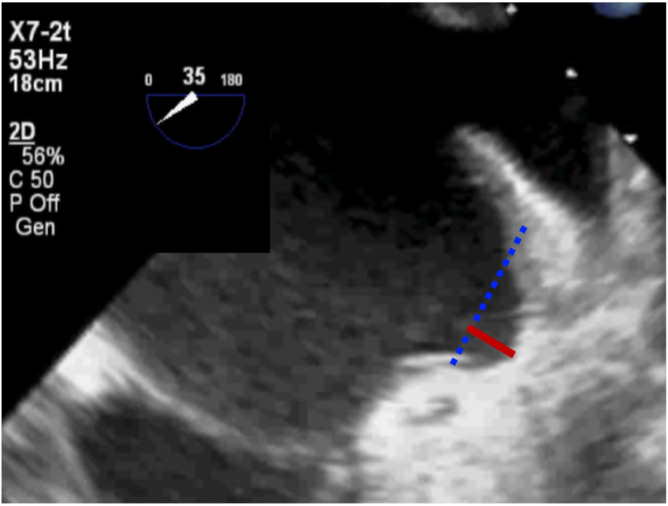
出典: Richardson KM, et al. Struct Heart 2025;9(8):100469. doi:10.1016/j.shj.2025.100469 / PubMed. CC BY-NC-ND 4.0（原図を改変せず掲載）。
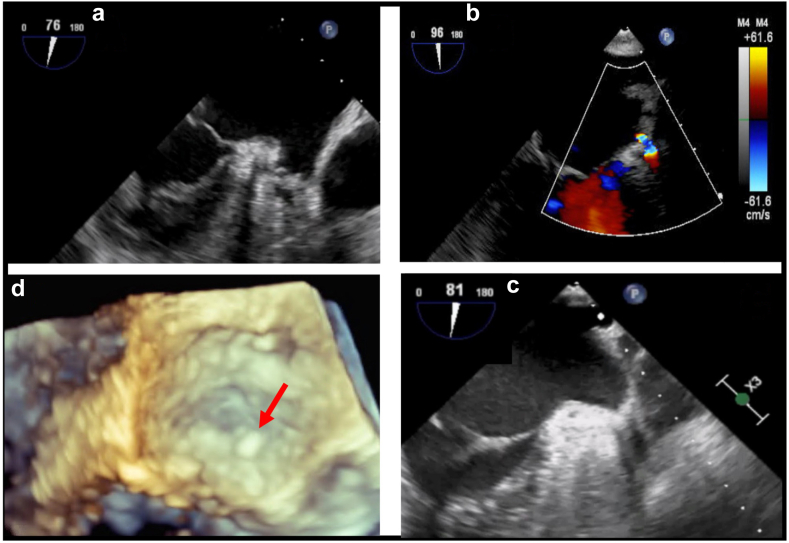
出典: Richardson KM, et al. Struct Heart 2025;9(8):100469. doi:10.1016/j.shj.2025.100469 / PubMed. CC BY-NC-ND 4.0（原図を改変せず掲載）。
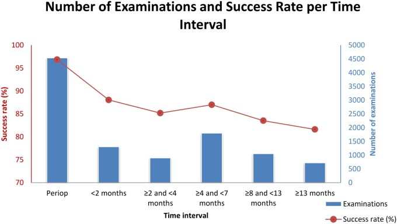
出典: Vad R, et al. Eur J Cardiothorac Surg 2026;68(5):ezag146. doi:10.1093/ejcts/ezag146 / PubMed. CC BY-NC 4.0（原図を改変せず掲載）。
外科的 LAA 閉鎖の「成功」判定には 17通りの基準が併存する（80研究・7517例・10,375検査のSR）。全体成功率 92.8%（9623/10,375）という数字は、評価軸を変えるだけで 70.3% 〜 98.3% まで動く（Vad 2026）：
| 判定軸 | 基準 | 成功率（分子/分母） | 研究数 |
|---|---|---|---|
| 時期 | 術中 | 96.8%（4393/4536） | 48 |
| 時期 | 術後 ≥3–<6か月 | 81.4%（697/856） | 16 |
| 時期 | 術後 ≥12か月 | 86.4%（1412/1634） | 23 |
| モダリティ | TEE 術中 | 96.8%（4379/4522） | 47 |
| モダリティ | TEE 術後 | 83.4%（2623/3145） | 38 |
| モダリティ | 心臓CT（術後のみ） | 89.5%（2185/2442） | 29 |
| モダリティ | TTE | 98.3%（58/59） | 3 |
| 基準（スタンプ） | スタンプ皆無 | 70.3%（154/219） | 4 |
| 基準（スタンプ） | <5 mm | 95.4%（692/725） | 5 |
| 基準（スタンプ） | <10 mm | 91.4%（3310/3620） | 34 |
| 基準（血流） | 血流なし | 88.7%（4389/4950） | 47 |
| 複合（最頻） | no flow ＋ stump <10 mm | 89.8%（2236/2491） | 24 |
| 基準なし | None defined | 87.5%（301/344） | 7 |
最頻の実務基準「遺残血流なし ＋ 残存スタンプ <10 mm」の 10 mm という閾値の唯一の明示的根拠は、2005年 LAAOS pilot における「観察された最小の LAA の閉鎖前長の50%超に相当するから」という便宜的説明であり、臨床アウトカムとの関連では検証されていない。
再現性はほとんど担保されていない — 画像・評価プロトコルを明記していた研究は 心臓CT 13/35（37.1%）、TEE 7/70、LAA造影 0/13、2読影者の合意を成功判定の要件としたのはわずか4研究、validation 効果を報告したのは 4/76（5.2%）。
手技の質は Class 1 / LOE A レベルで要求されるようになった（章 XI）。ACC/AHA 2023 は "absence of flow across the suture line and a stump of <1 cm" を術中 TEE で確認することを COR 1 / LOE A、AATS 2026 は "reliable technique and verified at the time of operation to be complete"（判定基準は color Doppler flow の欠如と collapsed LAA cavity、不完全なら suture reinforcement — クリップの付け直しは LAA 損傷リスク）を CoR I / LoE A としている。EHRA/HRS 2024 は "at the very base" で切除せよとし、internal ligation・stapled excision/exclusion は late follow-up で成績不良と断言。STS 2023 も "Stapling only has had poor outcomes, with most patients having a residual stump and recanalization" と記し、クリップ誤配置による回旋枝圧迫リスクにも言及する。
AATS 2026 の LoE A は、「術中 TEE での完全性確認」自体を RCT で検証した研究が本文中に示されておらず（LAAOS III でも TEE は "recommended, but not mandated" であり、追跡中の残存フロー/スタンプは未評価と著者が明記）、根拠が追えない。さらに AtriCure と関係を持つ執筆者が複数いる点を COI として付記すべきである。 未解決の問い（Vad が明示）：「完全な解剖学的閉鎖が臨床効果の必要条件か、部分的除外でも十分か、遺残血流とスタンプのどちらが塞栓源としてより危険か」。
VII-4. 術前 AF のない弁膜症手術例への予防的閉鎖は決着していない
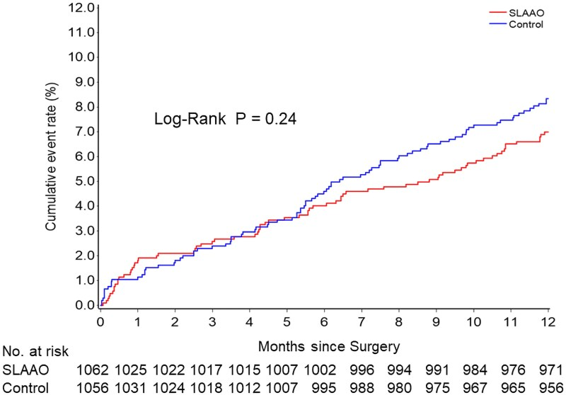
出典: Yuan X, et al. Eur Heart J 2026;47(20):2440-2448. doi:10.1093/eurheartj/ehaf674 / PubMed. CC BY 4.0（原図を改変せず掲載）。
- OPINION（中国3施設2118例、術前 AF/AFL なし＋CHA₂DS₂-VASc ≥2、平均55.6歳、平均1年）: 主要複合（虚血性脳卒中＋TIA＋心血管死）73/1062（6.9%）vs 87/1056（8.2%）、HR 0.83（95%CI 0.61–1.14), P=.25。虚血性脳卒中単独は完全に同等（2.5% vs 2.5%、HR 1.00, 0.58–1.72）（Yuan 2026）
- Burton メタ解析（洞調律例6試験2742例、再構築IPD）: 4年ランドマークで脳血管イベント HR 0.482（95%CI 0.361–0.643, P<.001）、中期生存 HR 0.701（0.554–0.886, P=.003）（Burton 2025）
両者は実は決定的に矛盾していない。 Burton は比例ハザード仮定が破綻しており、それに対応した B-spline モデルでは HR 0.615（95%CI 0.408–0.929, P=.021） と効果量が縮む（この保守的推定値は Abstract に記載がない）。OPINION の HR 0.83（0.61–1.14）と B-spline HR 0.615（0.408–0.929）は信頼区間が重なる。加えて：
- デザインの階層が違う — Burton は6試験中4試験が観察研究で、公表 KM 曲線からの再構築 IPD（PSM/IPW 処理済の曲線と未処理の曲線を混ぜてプール）＝患者レベルの交絡調整ができない。因果推論の強さは OPINION が上。
- CVE の定義 — Burton は「臨床的脳卒中＋TIA＋画像で同定された虚血性イベント」の混合で研究間不均一。無症候性梗塞を拾う研究が混ざれば効果は大きく見える。
- 抗凝固の背景 — Burton の組入れ研究は術後抗凝固プロトコルを確実に報告していない（著者が明記）。OPINION は54%が機械弁置換で生涯ワーファリン。
- 術式の質 — Burton は cut-and-sew / internal closure / device clip 混在で術式別解析なし。OPINION は amputation＋2層ポリプロピレン縫合に統一、残存 stump >1 cm を failure と定義して同一手術中に修正（ただし失敗率の実測値と修正件数は本文に未報告）。
- 追跡 — Burton は追跡期間の数値が一切報告されていない（4年ランドマークのみ）。OPINION は平均1年で、LAAOS III で効果が出た「30日超」の時間軸に対して短すぎる可能性が高い（著者自身、6か月以降にイベント曲線の乖離を観察したと記載、3年・5年追跡が進行中）。
- 検出力 — OPINION は40%減少を仮定した設計で、実測17%（HR 0.83）を検出する検出力がない。「差がない」ではなく「中等度の効果を否定も肯定もできない」。
決着は LeAAPS（NCT05478304、6500例、クリップデバイス、2032年完了予定）待ちである（他に LAACS-2 NCT03724318、経皮 vs 外科は LAAOS-4 NCT05963698）。
なお POAF が増えるかは「増えるという確証も、増えないという確証もない。増えるとしても大きくはない」が現時点で安全な言い方である（Burton 統合 OR 1.157 [95%CI 0.904–1.481, I²=46%, P=.246]／組入れ最大 RCT の ATLAS は 47.3% vs 38.2% と逆方向／OPINION は 29.2% vs 32.3%）。いずれも POAF の検出手段が本文に記載されていない。
本章の6編はいずれも術後リズム（洞調律維持率・AF 再発率）を評価していない。 LAAOS III で同時 AF 外科アブレーションが 809/2379（34.0%）／753/2391（31.5%）に併施されているにもかかわらず、その成功率は一切報告されていない。したがって「アブレーションで洞調律に戻ったから LAA 閉鎖は不要」という主張を支持するデータも、否定するデータも存在しない。 一方、章 V-1 で述べた通り bipolar RF による Cox-Maze では LAA 閉鎖が AF 再発の保護因子（OR 0.92, 95%CI 0.88–0.97, p=0.0004） であり、リズム側からも LAA 処置を組み込む理由がある。
VIII. スタンドアロン低侵襲 — 胸腔鏡単独／ハイブリッド／Convergent
本章の骨格は三段である：単独ではダメ／組み合わせれば勝つ／ただし確認が命。
VIII-1. 単独ではダメ — CASA-AF が失わせたもの
de novo 長期持続性 AF 120例を対象に胸腔鏡下単独外科アブレーションとカテーテルアブレーションを比較し、全例に ILR を植込んで12か月連続監視した唯一の RCT である CASA-AF では：
- 単一手技・AAD off・AF/AT ≥30秒からの解放：外科 26%（14/54）vs カテーテル 28%（17/60）、OR 1.128（95%CI 0.46–2.82), P=0.84
- 36か月：11%（5/47）vs 12%（7/57）、HR 1.22（95%CI 0.81–1.83), P=.41
- 症状（EHRA 群間差 +0.916, P=0.02）・QOL（AFEQT −6.74, P=0.05／EQ-5D-5L −0.079, P=0.02）・12か月の手技関連有害事象（40%［22/55］vs 15%［9/60］, OR 3.78, 95%CI 1.55–9.21, P=0.003）のいずれもカテーテル有利
- 3年間の医療経済解析で外科は費用が有意に高く（調整平均差 +£7,296, 95%CI £3,962–10,630）QALY も数値上劣るため "dominated" と判定
出典: Haldar 2020、Boyalla 2024。
否定されたのは「de novo 長期持続性 AF に対する単独胸腔鏡手術の first-line 使用」のみである。開心術に併施する Cox-Maze IV（本試験は中等度以上の弁膜症と開胸心臓手術既往を除外）、カテーテル失敗後の staged hybrid、左心耳閉鎖の脳卒中予防効果のいずれも検証されていない。 なお同試験は外科側の実行上の困難も記録している — 癒着でアクセス不能となりカテーテルへクロスオーバーしたのが 6/55（11%）、lesion set 不完全2例を含め完遂率85%、死亡 1/55（術後3週、敗血症・多臓器不全・食道および胃潰瘍からの出血）、片側横隔膜麻痺1・不全麻痺1。
VIII-2. 組み合わせれば勝つ — 4つの独立 RCT が同じ方向を指す
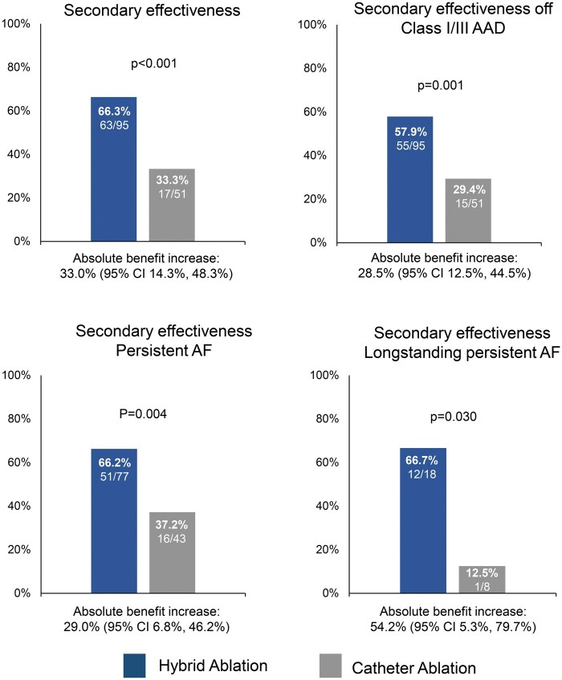
出典: Doll N, et al. Eur J Cardiothorac Surg 2025;67(7):ezaf146. doi:10.1093/ejcts/ezaf146 / PubMed. CC BY 4.0（原図を改変せず掲載）。
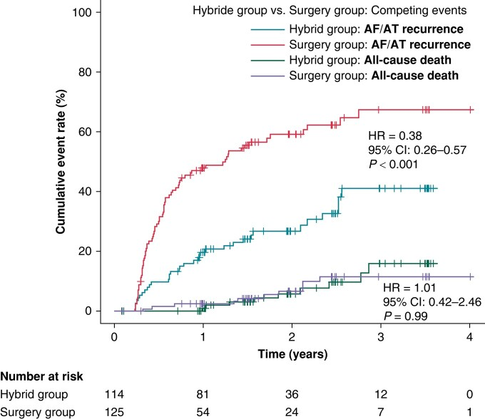
出典: Bulava A, et al. Europace 2024;26(2):euae040. doi:10.1093/europace/euae040 / PubMed. CC BY 4.0（原図を改変せず掲載）。
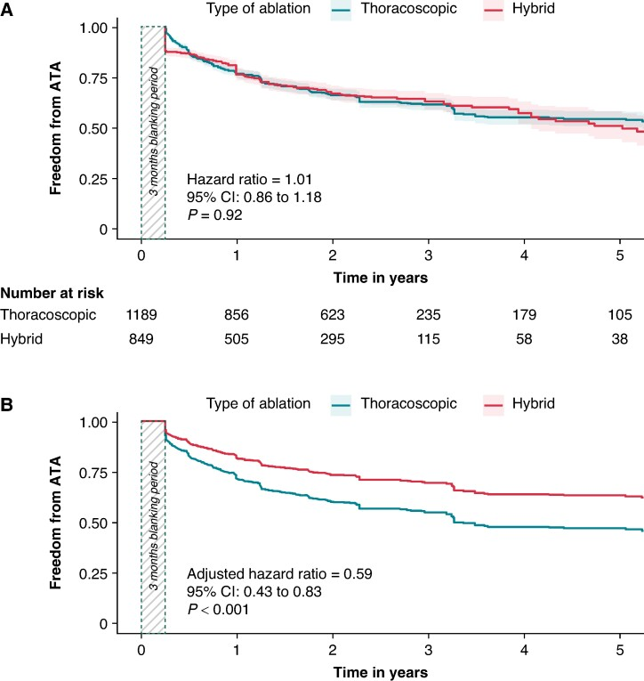
出典: Aerts L, et al. Europace 2024;26(10):euae232. doi:10.1093/europace/euae232 / PubMed. CC BY 4.0（原図を改変せず掲載）。
| 試験 | 比較 | 主要成功率 | 効果量 |
|---|---|---|---|
| CONVERGE（153例、persistent 58%／LSPAF 42%） | Hybrid Convergent（EPi-Sense 吸引補助単極RF で PV前庭＋後壁 → 心内膜で PVI 完成＋CTI）vs カテーテル単独 | 12か月 AF/AFL/AT freedom 67.7%（67/99）vs 50.0%（25/50） | RR 1.35, P=0.036（AAD 完全 off でも 53.5% vs 32.0%、RR 1.67, P=0.0128）※95%CI は論文中に一切なし |
| CEASE-AF 2年（mITT 146、持続性80.5%／LSPAF 19.5%、LA径>4.0 cm 必須） | 胸腔鏡下（PVI＋後壁box＋LAA閉鎖）＋90–180日後の心内膜ステージ vs カテーテル単独 | 24か月 >30秒 freedom 66.3%（63/95）vs 33.3%（17/51） | 絶対差 33.0%（95%CI 14.3–48.3), P<0.001（12か月の 32.4% が減衰せず持続）。AAD off 57.9% vs 29.4%、絶対差 28.5%（12.5–44.5), P=0.001 |
| SURHYB（229例、心臓手術＋concomitant CryoMaze 症例、非発作性のみ） | 術後約90日の pre-emptive カテーテル追加（sequential hybrid）vs CryoMaze 単独 | 再発（ICM 連続・毎日伝送・>6分）41.1% vs 67.4% | HR 0.38（95%CI 0.26–0.57), P<0.001。粗イベント 34/110 vs 74/116、HR 0.35（0.23–0.52） |
| Zheng（mITT 97、persistent 17%／LSPAF 83%） | 同一手術中に EP マッピング＋touch-up（simultaneous hybrid）vs 胸腔鏡単独 | 12か月 AAD off AF 非再発 71.4%（35/49）vs 45.8%（22/48） | OR 2.955（95%CI 1.275–6.848), P=0.014。★ATA 全般では 55.1% vs 39.6%, P=0.156 で有意差消失 |
| HARTCAP-AF（41例、対照＝反復カテーテル戦略）※権利上 DL 不可のため二次資料からの復元 | 両側胸腔鏡＋心内膜 vs 反復カテーテル | 1年 freedom from ATA off AAD 89% vs 41%, P=0.002 | 95%CI・分母内訳は二次資料に記載なし |
出典: DeLurgio 2020、Doll 2025、Bulava 2024、Zheng 2024、van der Heijden 2023。
SURHYB は本章で最も外科に直接刺さる試験である — 母集団が「心臓手術＋concomitant CryoMaze」であり、ICM 連続監視下で CryoMaze 単独群の再発が 67.4% に達した。これは章 III の「同時アブレーションは確立した」という結論を、「ただし CryoMaze 単独では3人に2人が再発する（連続監視基準）」という形で厳しく補正する。しかも改善したのはリズムだけでなく臨床アウトカムで、AF/AT入院・心不全増悪入院・心塞栓・大出血の複合が 40.1% → 19.9%（HR 0.51, 95%CI 0.29–0.86, P=0.012）、不整脈再発による入院 HR 0.25（0.10–0.60, P=0.002）、心不全増悪による救急受診 HR 0.15（0.03–0.66, P=0.012）。全死亡は不変（HR 1.17, 0.51–2.71, P=0.71）。
- 術式の差（最も本質的） — CASA-AF の外科群は心外膜のみで完結（心内膜 validation なし）。CONVERGE/CEASE-AF は心内膜側でギャップを潰す。
- リズム判定手段 — CASA-AF は ILR 連続、CONVERGE は 24時間 Holter×2＋18か月7日 Holter、CEASE-AF は予定訪問時の48時間 Holter。Aerts の著者自身が「CASA-AF の 26%/28% は連続モニタリングで部分的に説明できる」と明記。
- 対照群 lesion set の差 — CASA-AF のカテーテル群は PVI＋後壁box＋僧帽弁峡部線＋CTI 線と広く、CEASE-AF のカテーテル群は最低限 PVI のみ。CASA-AF は対照が強く、CEASE-AF は対照が弱い。
- 集団の差 — CASA-AF は 100% de novo LSPAF・LA径 44.6 mm・弁膜症なし。CEASE-AF は LA径 >4.0 cm 必須（平均4.7 cm）・アブレーション既往を除外。
したがって「外科が負けたのは単独でやることであって、外科が関与することではない」が最も整合的な読み方である。 本章最大の空白は「ILR 連続監視下でハイブリッド vs カテーテルを比較した RCT が存在しない」ことであり、それまでハイブリッドの真の効果量は不明である。
VIII-3. 機序 — 心外膜のペンで作った線は3〜7割が非貫壁
Zheng の心内膜マッピングは、この機序を部位別に定量した唯一のデータである：
| lesion | 心外膜側で作成後、心内膜マッピングで正常電位が残存 |
|---|---|
| クランプによる PVI | ★信頼できる — 左 44/45（97.8%）、右 45/45（100%）で entrance–exit block を確認 |
| ペン: 左下PV → great cardiac vein 線 | 73.3%（33/45） |
| ペン: left fibrous trigone 線 | 42.2%（19/45） |
| ペン: inferior 線 | 37.8%（17/45） |
| ペン: roof 線 | 33.3%（15/45） |
出典: Zheng 2024。
複数の独立データが同じ方向を示す — HARTCAP-AF では約42%が心内膜 touch-up を要し、CONVERGE では心内膜での PV touch-up が 38%（39/102）、EORP-EHAFA レジストリでは touch-up PVI が 30%（68/228）に必要であった。
そして「心外膜でラインを増やすこと」は心内膜 validation の代替にならない。 Aerts の IPD メタ解析の感度解析では、胸腔鏡単独群における「追加心外膜ライン」vs「PVI+box 単独」は HR 1.22（95%CI 0.98–1.46), P=0.070 で有意差なく、点推定はむしろ不利方向であった（Aerts 2024）。
「焼く量」ではなく「焼けたことを確認する手段」が成績を決める。 ラインを増やせば手技時間・組織損傷・食道/横隔神経リスクが増えるだけである。
VIII-4. 同時（one-stage）vs 段階的（staged）— 決着していない
| 論点 | 内容 |
|---|---|
| 直接比較 | ★同時 vs 段階的を直接ランダム化比較した試験は存在しない（本章の全論文を通じてゼロ） |
| Aerts IPD-MA | one-stage HR 0.62（95%CI 0.44–0.87), P=0.0054／two-stage HR 0.52（0.33–0.81), P=0.0044 ＝ 両者間に差なし。"timing of endocardial validation may not critically impact the overall effectiveness, allowing for individualized treatment" |
| Khanra ベイジアンMA | 多変量メタ回帰で staged が再発リスク上昇方向（estimate 0.93, 95%CI 0.30–1.57, Z=2.89, P=0.003） ＝ 逆の結果。★ただし単変量では非有意で、15試験に6共変量は過剰適合。しかも同論文の Discussion は「The current standard is staged HA」と自らのデータと逆の推奨をしている |
| 段階的の間隔 | RCT では約3か月に収束（CEASE-AF 90–180日、SURHYB 90日 [70–110]、Weininger 中央値89日）＝「外科的病変の成熟を待つ」論理。しかし EHAFA の実臨床では median 13日 [10–19] ＝「13日後」と「90日後」を同じ "staged" として扱うのは無理がある |
| 同時のリスク①: 偽陰性マッピング | 胸腔鏡アブレーション直後の組織浮腫で EP マッピングが偽陰性となりうる（Zheng が limitation に明記）。実際 12か月時点の新規発症心房粗動は HA 8例 vs SA 3例 と同時群に多い |
| 同時のリスク②: 出血 | 術中ヘパリン＋積極的抗凝固により総胸腔ドレナージが2.6倍（880 mL [535–1285] vs 340 mL [215–650], P<0.001）、出血による正中切開移行 2/49（4.1%）はいずれも胸腔鏡パート中（Zheng） |
| 段階的のリスク: 2回目に来ない | ★Weininger: 304例中 65例（21.4%）が第2段階に到達せず／EHAFA: two-stage 82例中5例（6.1%）が心内膜側未施行（うち1例は心房食道瘻のため） |
| 手技時間・入院 | EHAFA: one-stage 302分 [241–344] vs two-stage 合計 350分 [300–401]（心外膜158＋心内膜185）。第2ステージで +2.4±3.1日（n=77）の別入院 |
| 実臨床の選択 | EHAFA: one-stage 35%（162/464）vs two-stage 18%（82/464） ＝ 同時のほうが約2倍多く選ばれている |
出典: Aerts 2024、Khanra 2026、Zheng 2024、Weininger 2026、Vroomen 2025。
実務解：直接比較 RCT がない以上、施設のロジスティクス（ハイブリッド OR 運用、EP ラボ、麻酔負荷、患者の通院負担）で決めてよい。ただし同時を選ぶなら術後心房粗動と出血に、段階的を選ぶなら「2割が第2段階に来ない」ことに備える。
なお PFA 時代には第2段階の時期設定が早まる可能性がある — EHRA 声明は PFA では blanking 期間中の再発が cryoballoon より有意に少なく（SINGLE SHOT CHAMPION の連続モニタ判定で 38.1% vs 58.1%）、術後2–3か月の再発は普遍的に晩期失敗と関連することから「臨床判断上は PFA 後1か月の blanking で妥当かもしれない」と提言している（Kühne 2026）。
VIII-5. 代償は小さくない — 「低侵襲」という語で説明することの危うさ
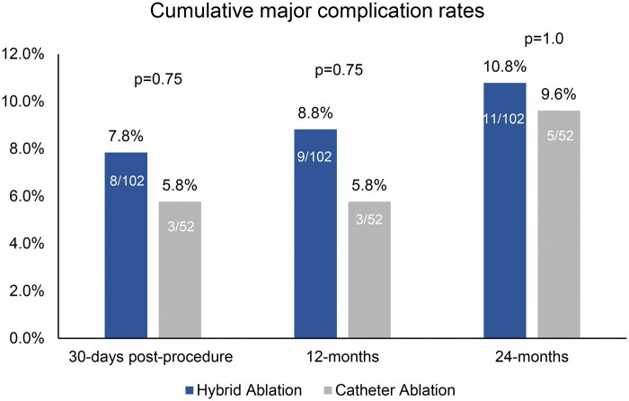
出典: Doll N, et al. Eur J Cardiothorac Surg 2025;67(7):ezaf146. doi:10.1093/ejcts/ezaf146 / PubMed. CC BY 4.0（原図を改変せず掲載）。
15試験1671例のベイジアンメタ解析では、ハイブリッドは心内膜カテーテル単独に比べ心房性不整脈再発（RR 0.74, 95%CI 0.59–0.94, I²=73%, P=0.01）と再アブレーション（RR 0.44, 0.20–0.96, P=0.03）を減らす一方、合併症は有意に多く（log RR 1.03, 95%CI 0.68–1.37, I²=0%, P=0.0001）、入院は +3.22日（1.74–4.7）、手技時間は +67.72分（29.81–105.63）長かった（Khanra 2026）。
RCT のみに限ると有意差が消え（RR 0.57, 95%CI 0.32–1.02, P=0.05）、長期持続性AFのみの試験に限っても消失し（RR 0.98, 0.60–1.60, P=0.45）、ベイジアン事後予測分布はゼロを跨いだ（log RR −0.30, 95%CrI −1.26 to 0.63）。 著者自身、RCT のみで差が消える理由を「CASA-AF が ILR で再発を判定しているため」と説明している。すなわち「ハイブリッドが勝つ」というシグナルの一部は、判定手段の緩さに由来する可能性がある。
合併症の横断パターン（患者説明に使える形で）：
| 項目 | 実測値 | コメント |
|---|---|---|
| 死亡 | RCT で 0〜2.9%（CEASE-AF HA 2.9%［3/102］vs CA 0%, P=0.55）。EHAFA は院内0%（0/464）だがフォロー中に AEF 死1例＋原因不明死1例。Khanra メタでは HA 群に死亡7例が集積 | 「1%未満だがゼロではない」が誠実な説明 |
| 心房食道瘻（AEF） | CONVERGE 0/102、CEASE-AF 0/154（食道損傷も両群0）と主要 RCT ではゼロだが、Khanra 2例（うち1例死亡）、EHAFA 1例（術後6週で死亡） | ★心外膜アプローチでも AEF は起こる。「エピは食道から熱を逃がすから AEF は起きない」は通念にすぎない |
| 心膜炎・心嚢液貯留 | Convergent 固有の最頻合併症 — CONVERGE の 4件（MAE 8件の半分）はいずれも術後1–3週の遅発性炎症反応。2016年6月にステロイド/NSAID 予防投与をプロトコル追加。Aerts プール値 心膜炎 2.2%（95%CI 1.3–3.4） | ステロイド/NSAID 予防と術後1–3週のフォロー体制が必須 |
| 正中切開/開胸への転換 | 2.1–2.6% で3試験がほぼ一致（Aerts 2.1%［1.4–3.1］、Weininger 2.6%［8/304］、EHAFA 2.2%［10/464］）。★明確な学習曲線がある（Weininger の8例中6例が最初の5年） | CASA-AF の 11% は「癒着でアクセス不能→カテーテルへクロスオーバー」で別概念 |
| 横隔神経障害 | 0.7–2.8%（Weininger 0.7%、EHAFA 1.3%、Aerts 2.8%［1.8–4.2］）。CEASE-AF では永久麻痺0 | — |
| 脳卒中 | Weininger 6/304（1.97%）、EHAFA フォロー中 1.4% | Weininger の6例は全例で LAA 閉鎖済み |
| 実臨床レジストリ全体 | ★EHAFA 院内 major 8.2%（38/464）、全合併症 11%（53/464） | RCT の数字より高い |
出典: DeLurgio 2020、Doll 2025、Aerts 2024、Khanra 2026、Weininger 2026、Vroomen 2025。
なお Aerts は早期死亡・出血・PPM 植込みで有意な出版バイアス（過少報告）を検出しており（Egger's test: 出血 Beta −2.526, P=0.006／転換 Beta −1.971, P=0.007／PPM Beta −3.896, P=0.004）、公表値は実際より低い方向に偏っている。
ただし「心内膜を足すこと」は追加リスクにならない — CEASE-AF の複合 major は HA 10.8%（11/102）vs CA 9.6%（5/52）（P=1.00）、EHAFA では心外膜単独 10.5%（24/229）vs ハイブリッド 6.0%（14/235）。「心外膜（外科）を足すこと」がリスクであって、「心内膜（カテーテル）を足すこと」は追加リスクにならない、というのが最も整合的な読み方である。
VIII-6. 単独 AF 手術は本質的に「症状の手術」である
EORP-EHAFA レジストリ（17施設464例、非発作性74%、カテーテル既往36%）では治療理由の 92%（430/464）が症状軽減であり、術前に EHRA I はわずか 3.0%（14/464）だったものが1年時には 72%（233/325） となった（Vroomen 2025）。
そしてエンドポイント定義を「≥30秒 freedom」から「burden 減少」に変えると評価が変わる：
- CASA-AF では厳格な「AF/AT ≥30秒ゼロ」では両群26–28%にとどまったが、AF/AT burden ≥75% 減少では 66%（36/54）vs 77%（46/60） に達した（Haldar 2020）
- 36か月時点の AFEQT は洞調律維持の有無では有意差がなかった（P=.13）のに対し、burden ≥75% 減少の有無では有意差を認めた（P=.01）（Boyalla 2024）
- CONVERGE も ≥90% burden 減少を副次に据え、12か月 80%（60/75）vs 56.8%（25/44), P=0.007
- Zheng では「AF のみ」なら 71.4% vs 45.8%（P=0.014）で有意だが、「ATA 全般（AFL/AT 含む）」にすると 55.1% vs 39.6%（P=0.156）で消える
患者 report outcome との相関が実証されている指標である（Boyalla の AFEQT 解析）。ただし統合レビューでも術前説明でも「どの定義での数字か」を必ず併記する。
VIII-7. 副産物 — LAA 病理でアミロイドが拾える
左心耳クリップ留置時に LAA の一部を切除して病理提出すると、121例中14例（11.5%）に Congo red 陽性のアミロイド沈着が検出され、うち3例（2.5%）が transthyretin 型で tafamidis 導入に至った（Weininger 2026）。追加のコストと時間がほぼゼロで治療可能な併存疾患を拾えるため、Cox-Maze / LAA 閉鎖を行う施設は自施設プロトコルへの組み込みを検討する価値がある。
VIII-8. 巨大左房でハイブリッドは効くのか — 決着していない
- Zheng（事前規定サブグループ）: LAD ≤50 mm では HA 83.3%（20/24）vs SA 34.6%（9/26）、OR 9.444（95%CI 2.464–36.198）だが、LAD >50 mm では 60.0%（15/25）vs 59.1%（13/22）、OR 1.038（0.323–3.337）、P interaction = 0.015 ＝優位性が消失。「本試験が最も対象としたかった拡大左房症例で上乗せ効果が示せていない」
- CEASE-AF: そもそも LA径 >4.0 cm を組入れ要件とし平均4.7 cm で 66.3% vs 33.3% を示す
- Boyalla（post hoc）: 左房径が1 mm 大きいごとに成功オッズ低下（多変量 OR 0.87, 95%CI 0.76–0.98, P=.024） ＝外科・カテーテルいずれでも左房が大きいほど不利
- Khanra: メタ回帰の post hoc 推論として「massive left atrial size」を適応に挙げる（直接エビデンスではない）
基準が全く違う（Zheng の >50 mm と CEASE-AF の >40 mm）うえ、Zheng は9サブグループで多重比較補正がない。Zheng 自身が「HA は full Cox-maze IV に劣る」と認めている点は重い。 → LA径 50 mm 超の巨大左房で胸腔鏡ベースのハイブリッドと開胸 full Cox-Maze IV（±左房縮小）のどちらを選ぶべきかは未決着であり、章 VI と接続して判断する論点である。
VIII-9. 「カテーテル失敗後の救済」か「初回からのハイブリッド」か
- 従来の位置づけ（2017 HRS consensus、二次引用）: 単独外科アブレーションはカテーテル不成功後に限り class IIa
- Khanra: サブグループでアブレーション naïve 群は RR 0.73（95%CI 0.58–0.92, P=0.05）で HA 有利、既往あり群は RR 0.80（0.61–1.07, P=0.06）で有意差なし。多変量メタ回帰でも LA ablation naïve が HA 有利方向（−0.84, 95%CI −1.46 to −0.22, P=0.007）→ "This supports considering HA as a first-line option in select patients with PsAF or LSPsAF"
- CEASE-AF もアブレーション既往例を除外した de novo 集団で 66.3% vs 33.3% を示し、さらにカテーテル群の 17.6%（9/51）が結局心外膜アブレーションへクロスオーバー、再介入も HA 18.9%（18/95）vs CA 52.9%（27/51）, P<0.001（repeat ablation 7.4% vs 37.3%, P<0.001）→ 「まずカテーテル、ダメなら外科」は遠回りになり得る
- 一方の現実: Weininger の304例では 41%がカテーテル既往（23%が2回以上）、EHAFA でも 36%がカテーテル既往 ＝ 実臨床では依然「救済」として使われている
- 推奨クラスも割れている — 難治 AF へのハイブリッドを 2023 ACC/AHA/ACCP/HRS は class 2B、2024 ESC は class 2A（いずれも Weininger による二次引用、LOE 表記なし）。同一のエビデンスから異なる推奨が出ていることを著者自身が問題視している。
VIII-10. その他の未解決点（本章）
- LAA 閉鎖の寄与が分離できていない — CASA-AF・CEASE-AF・Zheng・Weininger・EHAFA すべてで外科群に LAA 処理が含まれるが、リズム改善への寄与（左心耳 trigger 除去）も脳卒中予防効果も評価されていない。Khanra は HALT-AF（AtriClip 併用）の結果待ちと述べる。
- Convergent（剣状突起下）の相対的位置づけ — Aerts は convergent を明示的に除外し「subxiphoid/trans-diaphragmatic アプローチの成績は胸腔鏡より劣ると報告されている」と述べ、Weininger も CONVERGE の lesion set を不十分と評価。一方 CONVERGE 自体は AEF 0/102・PV狭窄0 を達成。欧州の実臨床では pericardioscopic はわずか3例（1.2%）で胸腔鏡が圧倒的。
- 左片側 VATS の是非 — Weininger のみが LVATS 65% を報告し両側と同等（1年洞調律 79% vs 82%, P=.29、転換 3% vs 1.9%, P=.72）で在院日数（3 vs 4日）・ICU 入室率（9% vs 18%, P=.038）は有利と主張するが、単一施設・単一術者の非ランダム化比較で、SVC-IVC 線を省くことの右房性不整脈への影響が評価されていない。追試がない。
- 長期（5年超）データの欠如 — 最長でも Aerts の再構成 KM 5年（at risk 胸腔鏡105例／ハイブリッド38例）、Weininger の断面5年（N=23）。Cox-Maze IV の10年成績と比較できるデータは存在しない。
- 日本人集団への外挿 — 本章10編に日本の施設は含まれない。EHAFA は年齢中央値63歳・BMI 28、CEASE-AF は BMI 29.7、CONVERGE は BMI 32.9–35.1 と、日本の高齢・小体格 AF 患者とは大きく異なる。胸腔鏡アクセスの難易度も体格に依存する。
IX. 外科 vs カテーテル、そして PFA 時代における外科の領土
IX-1. RCT のみの直接比較（2019年時点のスナップショット）
RCT のみを統合した唯一まとまった直接比較（7 RCT、カテーテル 310例／外科 270例、検索期限 2019年7月）では、12か月の AAD なし洞調律維持は外科が有意に優れ、カテーテル対外科の OR 0.37（95%CI 0.20–0.69, P=.002, I²=59%）、粗成功率は 146/310（47.1%）vs 190/270（70.4%）。優位は発作性（OR 0.29, 95%CI 0.16–0.54, I²=0%）でも持続性/長期持続性（OR 0.28, 0.13–0.59, I²=0%）でも一貫した（Huang 2022）。
弁膜症手術患者では「手術時に AF を放置し後日カテーテルへ送る」戦略が明確に劣る — 唯一これを直接ランダム化した Liu 2010（各群53例、同時 left atrial maze vs 弁手術のみ＋6か月後の予定カテーテル）で 12か月洞調律 41/53（77.4%）vs 27/53（50.9%）、OR 0.30（95%CI 0.13–0.70), P=.005、死亡・脳卒中・PPM の増加なし。concomitant SA を行う実務的根拠として最も引用価値が高い。
合併症は「量」ではなく「種類」が違う — 有意差がついたのは大腿血管合併症（カテーテル不利 OR 5.92, 95%CI 1.05–33.27）、気胸（外科不利 OR 0.09, 0.01–0.70）、胸水（外科不利 OR 0.11, 0.01–0.95）の3項目のみで、全死亡・TIA/脳卒中（OR 1.99, 0.36–11.00）・恒久 PPM（OR 0.61, 0.10–3.84）には差がなかった。ただし各項目の寄与試験は1–3試験・イベント数0–10件でゼロセルを含み推定は不安定であり、「重大合併症（死亡・脳卒中・PPM）に差はない」以上のことは言えない。
- lesion set 世代に依存する。 左房線状焼灼を併用した2013年以前の3試験では OR 0.28（95%CI 0.17–0.46, I²=0%）と強固だが、PVI＋神経節叢焼灼まで簡略化された2014年以降の4試験では OR 0.48（95%CI 0.14–1.60, P=.23, I²=74%）と有意差が消失する。組入れ7試験に完全 Cox-Maze IV を行ったものは一つもない。 すなわち「SA が勝つのは maze らしい lesion set を引いたときだけ」が本論文の隠れたメッセージであり、「カテーテルの進歩説」と「外科の簡略化説」は本データでは区別できない。
- 著者自身がバイアスを認めている — 「組入れ試験の主任研究者の多くは循環器内科医であり、外科アブレーションは彼らが知る最も経験豊富な外科医に依頼されたと推測されるため、外科側に有利なバイアスがかかりうる」。
- 検索が2019年7月で止まっており、CASA-AF（章 VIII-1）を含まない。 CASA-AF は統合 OR を書き換えうる規模の RCT である。
再発機序は術式で異なる — Liu 試験の平均54か月追跡で肺静脈再伝導がカテーテル群 24/41 に対し外科群 3/20（P=.001） と外科側で transmurality が安定していた一方、マクロリエントリー性心房頻拍は外科群で多かった（再手技あたり 1.3±1.0 vs 0.7±0.9, P=.025）。外科の課題は「焼けるか」ではなく「線をつなぎブロックを完成させられるか」である（章 IV-5 と同じ結論）。
IX-2. PFA は PVI を「速く・安全に」したが、「よく効く」ようにはしていない
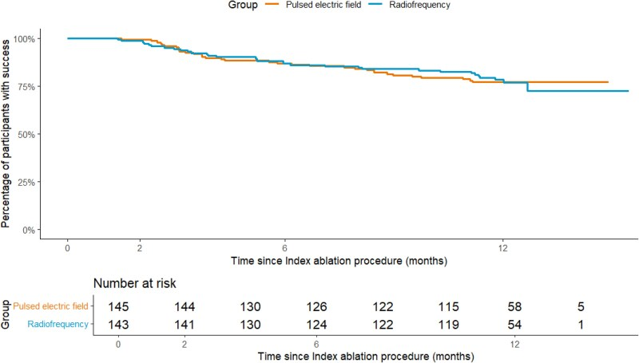
出典: Jaïs P, et al. Eur Heart J 2026;47(13):1527-1537. doi:10.1093/eurheartj/ehaf1115 / PubMed. CC BY-NC 4.0（原図を改変せず掲載）。
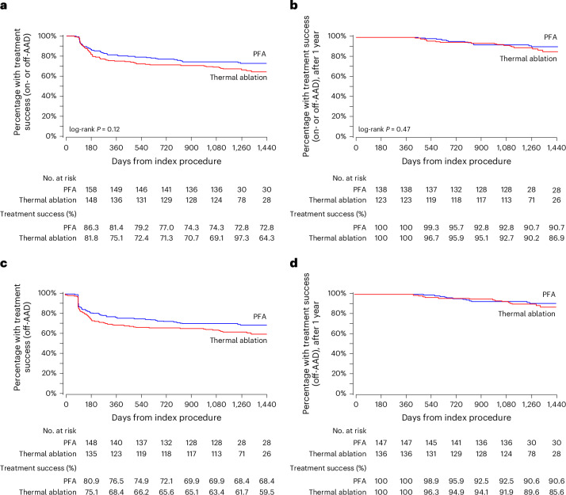
出典: Reddy VY, et al. Nat Med 2026;32(4):1444-1453. doi:10.1038/s41591-026-04246-4 / PubMed. CC BY-NC-ND 4.0（原図を改変せず掲載）。
5つの RCT（計約1813例）で PFA は熱アブレーションに対し非劣性を満たすが、優越性を示したのは SINGLE SHOT CHAMPION 1試験のみ（PFA 62.9% vs cryoballoon 49.3%、連続 ICM 判定）。BEAT PAROX-AF では PFA 77.2%（112/145）vs CLOSE protocol 準拠 contact-force RF 77.6%（111/143）、調整差 0.9%（95%CI −8.2〜10.1%）、P=.84 で完全な引き分け（Jais 2026）。EHRA/HRS/APHRS/LAHRS/CHRS 合同科学声明も "While PFA appears easier to use and safer in most hands, current evidence does not yet demonstrate superior effectiveness compared with thermal energy sources." と裁定している（Kühne 2026）。
ADVENT-LTO（発作性AF、4年延長、n=364）で PFA 優位を主張する側の数値は 72.8% vs 64.3%（log-rank P=0.12、HR 0.75, 95%CI 0.52–1.09）で有意差なし。有意だったのは再アブレーション（19/183 = 10.4% vs 32/181 = 17.7%、OR 0.54, 0.29–0.99, P=0.04）と AAD 使用（11.5% vs 20.4%、OR 0.51, 0.28–0.90, P=0.02）のみで、全解析が post hoc・探索的・nominal P（著者自身 "should not be interpreted as inferential" と明記）（Reddy 2026）。
この対立が外科に与える最も重要な含意：BEAT PAROX-AF の RF 群は CLOSE protocol（ablation index 300–400／前庭前方 ≥500、inter-lesion distance ≤6 mm）を厳格適用した高volume施設で想定65%を大きく上回る 77.6% を叩き出した。エネルギー源の差は成績の主因ではない。成績を決めているのは lesion set の完全性と耐久性である。 → 外科側が「新エネルギー源（nsPFA）を採用すれば成績が上がる」と期待する根拠は弱い。
なお PFA は手技を確実に速くする（BEAT PAROX-AF: 総手技時間 59±22分 vs 98±33分、調整差 −39分／左房 dwell time 39±16 vs 77±28分、−37分）が、透視時間は PFA のほうが長い（12±6分 vs 7±6分、調整差 +5分）。
IX-3. PFA の弱点＝外科の残された領土
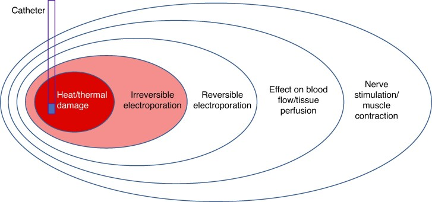
出典: Kühne M, et al. Europace 2026;28(6):euag080. doi:10.1093/europace/euag080 / PubMed. CC BY 4.0（原図を改変せず掲載）。
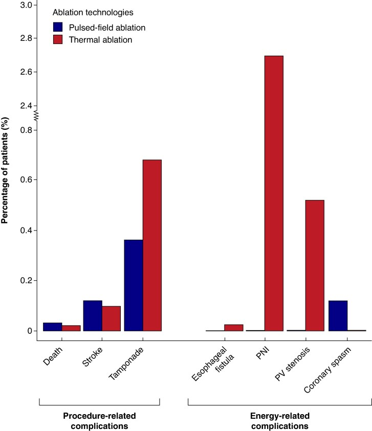
出典: Kühne M, et al. Europace 2026;28(6):euag080. doi:10.1093/europace/euag080 / PubMed. CC BY 4.0（原図を改変せず掲載）。
| 論点 | PFA での実測 | 外科への含意 |
|---|---|---|
| 持続性AFの初回治療 | AVANT GUARD（AAD 未治療の持続性AF 310例を2:1）で 12か月成功 128/207（KM 56%, 95%CI 48–63）vs AAD 40/103（KM 30%, 95%CI 21–40）、失敗の HR 0.46（0.33–0.65), P<0.001 | 持続性AFの約半数は1年以内にカテーテル単独治療から溢れる。 対照群（現代的 AAD、フレカイニド57.2%・ソタロール28.2%）は12か月成功30%で 64.2%（61/95）が電気的除細動を要した ＝ 開心術時に AF を放置して AAD 任せにする選択の期待値の低さ |
| 左心耳隔離 | pentaspline PFA で急性隔離は平均16アプリケーションで可能だが、3か月時の系統的リマッピングで 95% に再伝導。"lesion durability remains a significant limitation" | ★外科的 LAA 遮断（AtriClip）の優位が明確。かつ AtriClip/plug 型（Watchman 等）は将来の PFA と互換、lobe-and-disk 型（Amulet 等）は左側 PV への送達が3分の1で中断される → 併施する LAA 処置は AtriClip を選ぶ実務的根拠 |
| 僧帽弁峡部ライン | 急性ブロック率100%でもアデノシン負荷で 14.8% に dormant conduction、LAA 閉鎖時のリマッピングで持続的ブロックが確認されたのはわずか 5.5%（lattice-tip dual-energy でも68%）。"PFA using the pentaspline catheter does not ensure persistent anterior or lateral mitral isthmus block" | box lesion・mitral line を一回の手技で確実に置ける Cox-Maze IV / hybrid の存在意義は、PFA 時代にむしろ補強された（ただし外科側もその「必要性」自体を証明していない） |
| 後壁隔離 | MANIFEST-PF の後ろ向き解析で「追加 PW 焼灼は PVI 単独に比し12か月無再発を改善せず」。一方同声明は "First data show high durability of PWI using PFA." とも書き両論併記。EHRA/HRS コンセンサスは持続性AFの追加 lesion を "an area of uncertainty" と位置づけ、PIFPAF-PFA（NCT05986526） が検証中 | 「後壁 box は必須か」に PFA 側の論文群も答えを出していない（章 IV-2） |
| 食道・PV狭窄 | ★PFA が構造的に解決した — 熱アブレーションの食道障害は発生率 0.025%・死亡率 66% だが、世界50万例超の PFA で食道瘻の報告は1例もない。PV狭窄も PFA-only デバイスでは観察されていない（BEAT PAROX-AF: ≥50% 狭窄 RF 12/106［11.3%］vs PFA 0/113、差 −11.2%［95%CI −16.7〜−5.6］、≥70% は RF 2/106 で全例左下 PV） | 外科的 box lesion 作成時の食道損傷リスク低減という論拠は成立しうる。左下 PV が最も脆弱という部位分布は、外科でも前庭側に線を置く原則を裏づける |
| 横隔神経 | カテーテル（内膜側）では MANIFEST-17k で一過性 0.006%・永続 0%。★ただし EHRA 声明は基礎の項で「PFA 中に内皮は熱的に損傷されうるし、エピカルディアルアブレーションの場合は横隔神経も同様である」と明記 | ★心外膜側から通電する外科用 PFA デバイスに、カテーテル PFA の横隔神経安全性データをそのまま外挿してはならない |
| 溶血・急性腎障害 | MANIFEST-17k で 0.03%（6例）だが系統的測定ではない。BEAT PAROX-AF は「2020年立案のため系統的に同定する取り組みを行わなかった」と著者が明記。EHRA 声明は「アプリケーション回数が多いほど、また高電圧システムほど頻度が高い」とし術前補水を助言 | ★現行 PFA-RCT の「安全性同等」は溶血/AKI を含まない安全性である。 広範な lesion set を一気に置く外科的 PFA ほど用量依存性の観点で不利になりうる |
| 冠動脈攣縮 | レジストリ全体で 0.1–0.14% だが、pentaspline による外側僧帽弁峡部ラインの初期研究では臨床的 4–10%・無症候性で最大 40%。CTI でも右冠攣縮が悪性心室性不整脈を伴って報告される。pentaspline による CTI アブレーションは静注ニトログリセリン下でのみ行うよう求められている | 章 V-4（nsPFA で 22% の VF 死）と同一の機序。外科でも「冠動脈の上は焼かない」原則が必要 |
出典: Wazni 2026、Kühne 2026、Jais 2026。
EHRA 声明は "PFA does not represent a uniform class effect, as substantial heterogeneity exists across technologies with respect to waveform design, voltage, pulse duration, catheter geometry, and application strategies, potentially exceeding the variability observed between RFA approaches." と明記し、波形パラメータの多くが企業秘密として非開示であることをメーカーに対して名指しで批判している（実例：Varipulse は市販後に早期脳卒中/TIA 率が数値上高く使用説明が改訂された）。 → 外科用エピカルディアル PFA デバイスは、カテーテル PFA の安全性データを流用できず、独自に安全性を実証する必要がある。 なお PFA を用いた AF アブレーションの1年を超えるアウトカムデータは現時点で欠如している（"Outcome data beyond 1 year after AF ablation using PFA is currently lacking."）。外科が5年・10年で語ってきた時間軸と、PFA が語れる時間軸は一致していない。
IX-4. PFA-SHAM — 外科が引用できる唯一の「プラセボの床」
高度に症候性の AF 患者60例（発作性77%／持続性23%）を PFA と sham 手技に1:1 で割り付けた世界初の sham 対照 PFA-RCT では、全例に植込み型心電図モニタを装着した連続監視のもと、2か月 blanking 後6か月時の AF/AT/AFL freedom が PFA 28/30（93.3%）vs sham 5/30（16.7%）、posterior HR 19.6（95% CrI 6.7–76.9）、AFEQT 改善が +43.9±18.1点 vs +11.3±27.9点（群間差 32.6±6.3点, 95% CrI 20.2–44.9） であった（Osmancik 2026）。心理的苦痛（HADS 合計）でも PFA 中央値 −4点（IQR −7.8〜−2.0）vs sham −0.5点（−4.5〜1.0）、群間中央値差 −3.5点（95% CrI −6.0〜−1.0）。
単群試験で報告される「成功率」には約17ポイントの床が、QOL 改善には約11点のプラセボ成分が含まれる。 sham 群は連続 ICM で観察すると 25/30（83.3%）が30秒以上の AF/AT/AFL を再発しながら、AFEQT はそれでも +11.3点 改善した。単群外科レジストリを読むときはこの床を差し引いて解釈する。 ただし本試験は AFEQT ≤50 のみ登録という enrichment（スクリーニング失敗70例中16例が「症状不十分」で除外）により PFA 群の +43.9点は過大に見える設計であり、一般的な AF 患者集団への外挿は制限される。そして本試験は long-standing persistent AF・構造的心疾患・有意な弁膜症を除外し、LA径 41.3±5.6 mm・LVEF 60.9±4.6% の集団で行われた — この除外基準の外側こそが外科的アブレーションに残された適応領域である。
IX-5. PFA 普及後、外科に回ってくる患者像はどう変わるか
| 患者層 | PFA 普及後の位置づけ | 根拠 | 外科のスタンス |
|---|---|---|---|
| 発作性AF・LA<4.5 cm・低リスク（standalone） | カテーテルで完結。外科の余地はほぼ消失 | 4年 chronic success PFA 72.8%／off-AAD 68.4%、再アブレーション 10.4%（ADVENT-LTO）。12か月 77.2%（BEAT PAROX-AF） | standalone 外科は原則非推奨。適応は抗凝固禁忌＋LAA 処置必要例などに限定 |
| 発作性AF・カテーテル1回失敗 | 母集団が縮小（1年再アブレーションが 6–10%程度） | BEAT PAROX-AF PFA 13/145（9.0%）／RFA 9/144（6.3%）、ADVENT-LTO 19/183（10.4%） | 少数。再発形式が「不完全な線状病変による器質化 AT」なら EP マッピング先行が合理的 |
| 持続性AF・AAD未治療 | 初回から PFA が標準化。ただし1年で44%が失敗 | AVANT GUARD 56%（48–63）、無症候性≥1時間の再発 63/207（30%） | ★「PFA 1回失敗の持続性AF」という新しい紹介層に備える（診断から中央値0.5–0.7年で来る） |
| 長期持続性AF・巨大左房（LA ≥5.5 cm） | ★主戦場のまま。むしろ論拠が補強された | BEAT PAROX-AF は LA ≥5.5 cm を除外、PFA-SHAM は LSPAF・構造的心疾患・有意な弁膜症を除外、AVANT GUARD は LA 4.3±0.6 cm・LVEF 56% ＝ いずれもこの層のデータを持たない | 外科的完全病変セット（biatrial Cox-Maze IV／convergent）の第一適応 |
| 弁膜症・冠動脈手術の同時併施 | 論拠が間接的に強化（対照群データから） | AVANT GUARD の AAD 群 12か月成功 30%＝AAD 任せの期待値は1年で3割 | 同時 AF 手術を積極的に。ただし AVANT GUARD の集団は器質的心疾患を含まず直接外挿は不可 |
| LAA 処置を要する例 | カテーテル PFA では LAA 隔離が3か月で95%再伝導。外科の優位が明確 | 章 IX-3 | 外科的 LAA 遮断（AtriClip）を選ぶ |
なお AVANT GUARD で成功と失敗を分けたのはほぼ全て無症候性再発であった — 症候性 AF/AFL/AT ≥30秒 は PFA 4/207（2%）vs AAD 3/103（3%）で差 −1ポイント（95%CI −5〜3）にすぎないのに対し、無症候性 AF/AFL/AT ≥1時間は 63/207（30%）vs 47/103（46%）、差 −15ポイント（95%CI −27〜−4）。外科アブレーションの成績を症状ベースで報告することの危うさを示す。
安全性面で外科にも直接転用できる教訓が1つある。AVANT GUARD では PFA 群257例中 6例（2%）に手技関連脳卒中（うち1例は deflectable sheath からの空気混入）が発生し、DSMB 勧告による試験中断後に「術前24時間以内の TEE/CT 血栓スクリーニング・術前4週の無中断抗凝固・ACT ≥350秒・CHA₂DS₂-VASc ≥4 除外」を導入したところ、以降の74例では脳卒中・TIA ともにゼロとなった。ハイブリッド手技の内膜側セッションにも同一の管理を適用すべきである。
もう1点、早期介入の disease modification 仮説を支持するデータ：ADVENT-LTO における4年の持続性 AF への進行は PFA 4/183（2.6%）vs 熱 7/181（4.6%）、HR 0.55（95%CI 0.16–1.88） と両群とも5%未満であった。開心術症例で発作性 AF を合併している患者に同時左房 lesion を行う判断を後押しする方向のデータである。
X. 合併症 — ペースメーカの数字を更新する
X-1. 「早期13%」は氷山の一角である
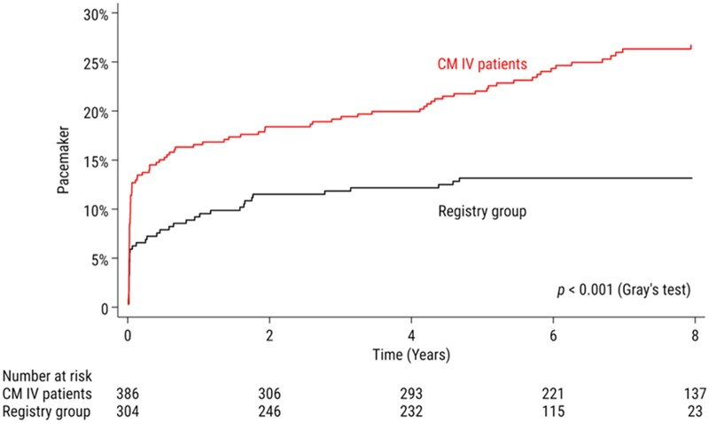
出典: Ivert T, et al. Interdiscip Cardiovasc Thorac Surg 2025;40(4):ivaf085. doi:10.1093/icvts/ivaf085 / PubMed. CC BY 4.0（原図を改変せず掲載）。
スウェーデン全国7施設の悉皆レジストリ研究は、僧帽弁閉鎖不全＋AF に対する Cox-maze IV 併施 397例と、外科的アブレーションを行わなかった僧帽弁手術単独の AF 患者 346例（術前 PPM 保有例を除外した解析対象690例）を追跡中央値 8.6年（range 4.8–13.4）／6.1年（range 4.8–8.7）、脱落ゼロで比較した（Ivert 2025）。
| 指標 | Cox-maze IV 群 | 対照（アブレーションなし） |
|---|---|---|
| PPM 累積発生率（Aalen-Johansen、死亡を競合リスク） | 5年 22%（95%CI 18–26%）／8年 27%（95%CI 22–31%） | 5年・8年とも 13%（95%CI 10–17%） |
| 調整 subdistribution HR（8年、Fine-Gray） | 1.96（95%CI 1.27–3.04), P=0.003 — どの調整モデルでも約2倍で頑健 | 参照 |
| 30日以内 PPM | 49/386（12.7%） | 19/304（6.3%）, P=0.007 |
| 30日以降（遅発）PPM | 54/386（14.0%）（≥30日–<5年 36例 9.3%／≥5–<8年 15例 3.9%／≥8年 3例 0.8%） | 21/304 |
8年時点での上乗せは約14ポイント、NNH ≒ 7。すなわち Cox-maze IV 併施患者の4人に1人以上が8年以内にペースメーカを要する。 そして遅発分（14.0%）が早期分（12.7%）を上回る — 従来引用されてきた「早期 PPM 約13%」や CTSN の入院中25%（DeRose 2019、二次引用）・Robertson の1年15%（二次引用）は早期の数字であり、長期の実態を過小評価している。入院中の数値ではなく長期累積値を提示すべき。 なお Abstract（13.3% vs 5.5%, P=0.002）と Table 3（12.7% vs 6.3%, P=0.007）が原文内で食い違い、Table 3 の総計行の % も分母が行によって異なる。分母を明示できる Table 3 の生データ（49/386、19/304）を採るのが安全である。
X-2. 早期は AV ブロック（弁手術由来）、遅発は洞結節機能不全（アブレーション固有）
| 時期 | 群 | PPM 総数 | AV ブロック II/III | 洞結節機能不全（SND） | 群間 p（SND） |
|---|---|---|---|---|---|
| <30日 | CMIV（n=386） | 49 | 32（65.3%） | 11（22.4%） | P=0.49 |
| 対照（n=304） | 19 | 12（63.2%） | 1（5.3%） | ||
| ≥30日 | CMIV | 54 | 14（25.9%） | 26（48.1%） | P=0.01 |
| 対照 | 21 | 6（28.6%） | 3（14.3%） | ||
| 合計 | CMIV | 103 | 48（46.6%） | 37（35.9%） | 記載なし |
| 対照 | 40 | 18（45.0%） | 4（10.0%） |
読み：早期の AV ブロックは両群同率（65.3% vs 63.2%）＝僧帽弁・三尖弁手術そのものの問題。遅発の SND だけが Cox-maze IV で3倍以上（48.1% vs 14.3%, P=0.01）＝アブレーション固有の問題である。
術式への含意（ただし機序仮説からの示唆にとどまる）：術中は洞結節動脈と caval-caval line・右房自由壁 lesion の位置関係に注意し、洞結節近傍の cryo 接触時間を必要最小限にする。加えて、術前から徐脈傾向・洞機能低下が疑われる症例では、術中の心外膜ペーシングリード確実留置と AAI/DDD 戦略をあらかじめ計画に織り込む。
Ivert の著者は "Our analyses did not provide evidence that pre-existing sinus or atrioventricular node dysfunction or right atrial lesions were the primary causes" と明記し、三尖弁手術との交互作用も P=0.62 で効果修飾なし（TV 手術あり 75/263 = 29% vs なし 68/427 = 16%, P=0.01 だが interaction P=0.62）。すなわち三尖弁形成を避けても Cox-maze IV の PPM リスクは減らず、逆に三尖弁形成を要する症例で Cox-maze IV を差し控える根拠にもならない。 一方 Pyo は三尖弁手術非施行サブグループで早期 PPM の差が消えることから（1/397 = 0.3% vs 4/322 = 1.2%、調整 OR 0.38, 95%CI 0.12–1.18, P=.095、晩期も SHR 0.81, 0.47–1.39, P=.449）「右房 lesion そのものではなく右房病変を持つ重症例の既存の洞不全」と解釈する。両者は「右房 lesion 単独犯人説」を否定する点で一致し、決着には BA vs LA をランダム化して PPM を主要安全性エンドポイントとする RCT が必要だが存在しない。
X-3. 早期 PPM 率が 2〜13% と幅がある理由
Pyo（韓国5施設、年齢中央値 59.3歳、入院中の PPM を計上）で BA 29/1296（2.2%）、Ivert（スウェーデン、平均 65.7±9.0歳、全国レジストリ連結による30日以内の悉皆捕捉）で 49/386（12.7%）。この6倍差は lesion set の差ではなく、少なくとも4つで説明できる：
- 捕捉方法 — Ivert は国民識別番号による全国レジストリ連結（NOMESCO 手術コード FPE 00–30）で退院後30日以内の再入院植込みまで悉皆捕捉。Pyo は入院中のみ。
- 年齢 — Ivert 65.7±9.0歳 vs Pyo BA 中央値 59.3歳。Ivert の PPM 植込み時年齢は中央値69歳（IQR 62–74）で、Pyo コホートの中央値をすでに10歳上回る。
- 植込み閾値 — 国・時代で異なりうる（Ivert 自身が limitation に挙げる）。ただし Ivert は全例が植込み前に症候性（13例が失神、7例が心停止からの蘇生）と記載しており、無症候の予防的植込みではない。
- 母集団のベースライン — Ivert の対照群でも早期 6.3%・8年13% が発生している。上乗せ倍率で比べれば Ivert 約2倍（8年 調整 SHR 1.96）、Pyo 早期約5倍・晩期約1.6倍（調整 SHR 1.630, 95%CI 1.268–2.097, P=.0001）で、オーダーは矛盾しない。
成績を並べる際は「いつまでを早期とし、どの経路で捕捉したか」を必ず併記すべきである。
X-4. PPM 以外のコストは増えていない
Ivert 2025 では早期死亡 4/397（1.0%）vs 10/346（2.9%）（P=0.11）、脳卒中 4/397（1.0%）vs 4/346（1.2%）（P=0.88）、出血再開胸 25/397（6.3%）vs 17/346（4.9%）（P=0.51）、縦隔炎 4/397（1.0%）vs 2/346（0.6%）（P=0.82）で、腎代替療法はむしろ Cox-maze IV 群で有意に少なかった（7/397 = 1.8% vs 23/346 = 6.6%, P=0.001）。「Cox-maze IV のコストは実質的にペースメーカに集約される」 — ただし背景の良さによる交絡は当然ある（対照群は有意に高齢 69.5±10.1 vs 65.7±9.0歳、EuroSCORE II 中央値 3.6 vs 1.8、NYHA IV 22.5% vs 1.5%、心臓手術既往 19.9% vs 4.0%、いずれも P<0.001。傾向スコアマッチングは行われていない典型的な confounding by indication）。
エネルギー源は PPM 率に影響しなかった — cryo 45/360（12.54%）vs bipolar RF 4/37（10.8%）、P=0.83（ただし RF 群37例で非劣性を示す検出力はない）。
LAA 閉鎖法との関連は仮説生成にとどまる — 縫合閉鎖で PPM 50/197（25%）、デバイス閉鎖で 7/65（11%）だが、検定も多変量調整も行われていない。なお本コホートの LAA 閉鎖率は 203/397（51.1%）で術後は原則 DOAC 継続、LAAOS III 以降の現行 practice とは異なる。
本研究は主要エンドポイントを PPM とし、術後の AF 再発率・洞調律維持率を一切測定していない（blanking の設定も >30秒等の成功閾値も AAD の扱いの規定も存在しない。30秒基準は「術前」AF の定義にのみ用いられている）。本研究は Cox-maze IV の有効性を評価する材料にはならず、合併症としてのペースメーカのみに使用できる。 逆に言えば、「Cox-maze IV を追加することの純利益」を1つのコホートで示した研究は存在しない — Ivert は PPM だけを測りリズムを測らず、Pyo はリズムと PPM の両方を測ったが「アブレーションなし」群を持たない。CTSN 等の外部データと組み合わせるしかなく、その際は集団（年齢・AF 病型・TV 手術率）の違いを明示する必要がある。
X-5. 術前デバイスの存在を見落とさない
Ivert の対照群では術前から 42/346（12.1%）にペースメーカが植込まれていた（Cox-maze IV 群では 11/397 = 2.7%, P<0.001。原表の変数名は "Previous Pacemaker" で ICD を含むか否かは原文で確認できない）。AF＋僧帽弁閉鎖不全で外科紹介される患者の一定割合はすでにデバイスを有しており、経静脈リードと三尖弁手術の干渉（リード温存・抜去・心外膜化）の術前検討は必須である。
XI. ガイドラインの地図 — 同じ試験、違う推奨
ガイドラインが割れているのはエビデンスが割れているからではない。同じエビデンスに対する学会ごとの許容度の差である。
XI-1. 同時外科的アブレーション — 5文書で4段階に割れる
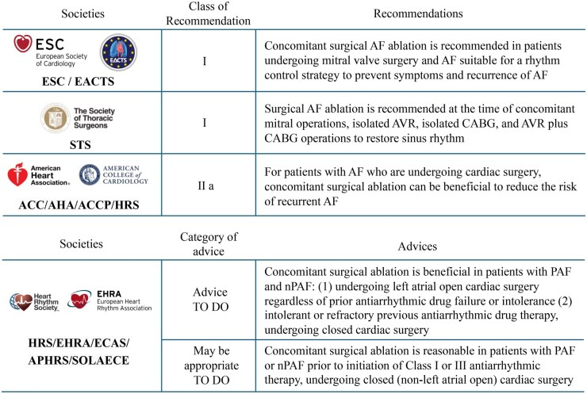
出典: Kowalewski M, et al. Eur J Cardiothorac Surg 2025;67(7):ezaf187. doi:10.1093/ejcts/ezaf187 / PubMed. CC BY-NC 4.0（原図を改変せず掲載）。
| 文書 | 僧帽弁（LA open） | 非僧帽弁（closed atrial） | 推奨文が掲げる目的 |
|---|---|---|---|
| STS 2023（Ann Thorac Surg） | COR I / LOE A | COR I / LOE B-NR（"any first-time nonemergent concomitant nonmitral operation"＝2017年版の術式列挙から拡大） | "to restore sinus rhythm and improve long-term outcomes" |
| ESC/EACTS 2024（Eur Heart J） | Class I / Level A（2020年版 IIa/A から格上げ） | Class IIa / Level B（新規項目） | "to prevent symptoms and recurrence of AF"（卒中・死亡は目的として掲げられていない） |
| EHRA/HRS/APHRS/LAHRS 2024（Heart Rhythm） | Advice TO DO（META）、AAD 使用歴を問わない | AAD 抵抗・不耐例＝Advice TO DO（META）／AAD 開始前＝May be appropriate TO DO | （目的節なし。"is beneficial"） |
| ACC/AHA/ACCP/HRS 2023（JACC） | COR 2a / LOE B-R（術式による区別なし、"undergoing cardiac surgery" 一括） | 同左（区別なし） | "to reduce the risk of recurrent AF"（生命予後は推奨文になし） |
| AATS 2026 AFMR（JTCVS） | CoR I / LoE B-nonrandomized（AFMR 手術に限定） | （対象外） | MR 矯正に同時外科的 AF アブレーションを併施 |
出典: Wyler von Ballmoos 2024、Van Gelder 2024、Tzeis 2024、Joglar 2024、Mori 2026。
根拠はいずれもほぼ同一のセットである — Cochrane 22 RCT（洞調律 RR 2.04, 95%CI 1.63–2.55／PPM RR 1.69, 95%CI 1.12–2.54）と CTSN RCT（1年 AF-free 63% vs 29%）。差は STS が自らプール解析を追加した（mortality HR 0.77 [0.69–0.86]、stroke HR 0.69 [0.64–0.75]、TE HR 0.68 [0.63–0.74]、代償 PPM HR 1.38 [1.22–1.57]）ことに対応する — だから STS だけが "improve long-term outcomes" を推奨文本体に書き込めている。最も差が開くのは非僧帽弁（STS I/B-NR vs ESC IIa/B vs ACC/AHA 2a 一括）。
数値そのものにも文書間の食い違いがある：CTSN の1年 AF-free を STS 2023 は 63% vs 29%、ACC/AHA 2023 は 63.2% vs 29.4%（P<0.001）、AATS 2026 は "roughly 70% at 1 year" と記載（AATS の "roughly 70%" は他2文書と整合しない）。
XI-2. LAA 閉鎖 — LAAOS III が全文書を一斉に動かした
| 文書 | 同時 LAA 閉鎖 | 単独（stand-alone） | 抗凝固との関係 |
|---|---|---|---|
| STS 2023 | COR I / LOE A（2017年版 IIa/C から2段階格上げ、SA 併施の有無を問わず全例） | COR IIb / LOE B-NR（LSPAF＋高卒中リスク＋OAC 禁忌/失敗、新設） | 推奨文に抗凝固の前提なし。本文で「一部施設は SA+LAAO 後に単剤抗血小板のみで stroke rate <1%」を紹介 |
| ESC/EACTS 2024 | Class I / Level B（2020年版 IIb/C から格上げ）。"as an adjunct to oral anticoagulation" | Class IIb / Level C（stand-alone endoscopic、OAC 禁忌例） | ★Class I / C で "independent of rhythm outcome or LAA exclusion" と明示＝閉鎖しても OAC を中止しない |
| EHRA/HRS 2024 | Advice TO DO（RAND） — stand-alone / concomitant を問わず | 同左 | 外科文脈での OAC 中止基準は示されていない |
| ACC/AHA 2023 | COR 1 / LOE A（CHA₂DS₂-VASc ≥2、"in addition to continued anticoagulation"）＋COR 1 / LOE A で手技の完全性を要求（"absence of flow across the suture line and a stump of <1 cm"、術中TEE） | 推奨なし（本文に epicardial LAA clipping の言及1文） | ★抗凝固なしでの利益は COR 2b / LOE A（uncertain） |
| AATS 2026 AFMR | CoR I / LoE B-NR ＋ CoR I / LoE A で「確実な手技＋術中完全性確認」 | 記載なし | ★CoR IIa / LoE C-LD ＝ "at the discretion of the heart team with shared decision making" — ESC/EACTS の Class I「中止しない」と正面から食い違う |
① N が 4770（STS・ACC/AHA）と 4811（ESC/EACTS・AATS）に割れる（EHRA/HRS は "Over 4800"）。② 追跡が "mean 3.8 years"（STS・ESC・EHRA・ACC/AHA）と "median 3.8-year"（AATS）で食い違う。 ③ OAC 継続率が 77%／76.8%／">75%"。④ STS 2023 だけが stroke の RR 0.66（0.52–0.84）を、他4文書は primary endpoint の HR 0.67（0.53–0.85）を提示している（同じ試験の別アウトカム。混同しないこと）。数値は原著（Whitlock 2021）から引くこと。
XI-3. lesion set — 推奨を出しているのは2文書だけ
| 文書 | lesion set への推奨 | PVI 単独の扱い | 術中ブロック確認 |
|---|---|---|---|
| STS 2023 | stand-alone で "using the Cox maze III/IV lesion set as the preferred procedure"（IIa/B-NR）。同時併施の lesion set 推奨はなし | LA ≥4.5 cm または中等度超 MR に対する PVI 単独は Class III / LOE C | 記載なし |
| ESC/EACTS 2024 | ★なし（"lesion set" は参考文献のタイトル内のみ） | 記載なし | なし（術中血栓検索イメージングは Class I/C） |
| EHRA/HRS 2024 | ★"Biatrial Cox maze procedure or a minimum of PVI plus left atrial posterior wall isolation is beneficial"（Advice TO DO / RAND） | "surgical ablation with PVI alone is inferior to the biatrial maze in persistent/LSPAF"。closed atrial 例では "should be individualized" | ★Advice TO DO（OPN＝専門家意見）。実態は "it is infrequently performed" |
| ACC/AHA 2023 | ★なし（"Cox-maze" は引用文献名中のみ） | 記載なし | 記載なし |
| AATS 2026 AFMR | ★"biatrial maze should be considered"（CoR IIa / LoE C-expert opinion） | ★"Isolated surgical PVI is not recommended for patients with persistent and long-standing persistent atrial fibrillation, regardless of the presence or absence of significant MR." ＋右房 lesion は "recommended in the presence of right atrial dilation or TR" | 記載なし |
ACC/AHA 2023 では "Cox-maze" が引用文献名にしか登場しない。支持されるのは STS 2023（stand-alone の IIa/B-NR）・EHRA/HRS 2024・AATS 2026 の3文書のみである。ESC/EACTS は明示的に STS 2017 ガイドラインに委ねている。
PVI 単独をどこまで否定するか — 3つの異なる軸で線引きされており、統合レビューではこの3軸を並置するのが正確：
- STS 2023: 解剖学的・病変的な軸（LA ≥4.5 cm または中等度超 MR → Class III/C）
- AATS 2026: AF 病型の軸（persistent / long-standing persistent → not recommended）。さらに左房のみの ablation は「75歳超・LA径>5 cm・AF 罹病5年超」で劣る（二次引用）
- EHRA/HRS 2024: 最低ラインの軸（PVI＋左房後壁隔離を最低とする）
なお ACC/AHA 2023 はカテーテル側で "PVI is recommended as the primary lesion set for all patients"（COR 1/A）とし追加標的は "uncertain"（2b/B-R） としている — 外科とカテーテルで PVI 単独の評価が正反対である点は重要な対比軸である。
GP（神経節叢）アブレーションは2文書で明確に否定されている — STS 2023（"no longer considered as an additive application ... significantly increased major morbidity"）と EHRA/HRS 2024（"with the exception of a clinical trial setting, GP ablation should not be performed during surgical AF ablation"、AFACT 試験）。ESC/EACTS・ACC/AHA には記載なし。
後壁隔離（PWI）の評価は外科とカテーテルで逆転する（章 IV-2）。EHRA/HRS 2024 自身がその理由を提示している — カテーテルでは LAPW の durable isolation が達成できない（reconnection 40–100%、septopulmonary bundle の厚み、心外膜脂肪、食道回避のための出力低下）。根拠として挙げられる外科データは Henn 2015 の後壁未隔離 5年 33% vs 隔離 66%（P = 0.017）、僧帽弁例では後壁不完全隔離が唯一の独立予測因子で AF 再発 6.7倍。
XI-4. transmurality は「デバイス」ではなく「反復回数」— EHRA/HRS 2024 だけが持つ一次データ
| デバイス | 単発 | 反復 |
|---|---|---|
| bipolar clamp | 65% | 2回連続（unclamp せず）100% |
| irrigated bipolar | 74% | 2回 92% |
| suction-assisted | 68% | — |
| EPi-Sense | 15–100%（動物実験で変動大） | — |
| cryoICE（心内膜） | 98% | — |
| CryoFlex | 93%（LAA・PV）／84%（Cox maze 線状） | — |
"In a chronic animal study using this device with a single application, all lesions produced were transmural. However, in clinical experience, multiple applications are needed to achieve exit block."（Tzeis 2024）
「1回クランプで transmural」は動物実験の話であり、ヒト心房＋心外膜脂肪では成立しない。 この一節は Henn 2015 の「後壁を全部隔離できなかった群」がなぜ生じるかの機序的説明にもなっている。Terminate AF の焼灼レシピ（iRF: 生食150–300 mmHg 灌流、クランプしたまま2連続焼灼×3セット＝6回/lesion。cryo は心内膜側から最低2分）と ICE-AFIB の規定（1ラインあたり2〜3分・最低2分、ice ball の目視確認）は、この原理の実装である。
XI-5. 「ガイドラインの不在」そのものが所見になる項目
主要6文書を通じて、推奨クラスが与えられていない領域：
| 論点 | 状況 |
|---|---|
| 外科的アブレーション後の blanking period・>30秒閾値・AT/AFL の扱い | ★3つすべてを定義した文書はゼロ |
| エネルギー源（RF vs cryo）の優劣 | ★推奨を与えた文書はゼロ（EHRA/HRS は比較 RCT の不在を明言、STS 2023 は "precluding statements and recommendations that are specific to different surgical techniques" と意図的に推奨を出さないと宣言） |
| 左房縮小術 | ★推奨クラスを付与した文書はゼロ（STS 2023 "remains controversial and without strong evidence"、ACC/AHA は Table 3 に "may ↑ rates of sinus rhythm" の一行のみで COR/LOE なし、他4文書は記載なし） |
| 外科 PFA | ★言及した文書はゼロ（STS 2023 全文0ヒット、ACC/AHA 0件、ESC/EACTS はカテーテル文脈で1箇所のみ、EHRA/HRS は hybrid の心内膜側に将来形1文、STS 2026 POAF も記載なし） |
| 外科的アブレーションの費用対効果 | ★評価した文書はゼロ（ACC/AHA はカテーテルのみ "Intermediate"、EHRA/HRS が CASA-AF の「外科は高コスト・低QALY」を引用するのみ） |
| 再手術例・緊急手術例 | STS 2023 は全推奨を "first-time nonemergent" に限定して明示的に除外。他文書は沈黙 |
| 施設ボリューム閾値 | 数値閾値はどこにもない（"centres with experienced teams" 等の定性表現のみ） |
| AFMR | 実質的に扱うのは AATS 2026 と STS 2023（概念記述のみ・数値なし）の2文書。ESC/EACTS・EHRA/HRS は完全非収載（後者は "regurgitation" が文書全体で0回） |
LA 径のカットオフを推奨に書き込んでいるのは STS 2023 の "LA ≥4.5 cm"（PVI 単独の禁止という文脈でのみ）が唯一である。なお ESC/EACTS 2024 は2020年版の推奨文にあった「left atrial dilatation, years in AF, age, renal dysfunction」というリスク因子の列挙を削除しており、患者選択の操作的定義がむしろ後退している — 章 VI-1 の結論（LA 径ではなく AF 罹病期間が予測因子）に照らすと残念な後退である。
本レビューが精読した個別研究（S2–S13 相当）のうち、一次資料として Class/LOE を付与している論文は1編もない。 論文中の "class I" 表記はすべて二次引用であり、引用元の年号・学会名・LOE が食い違っている実例が多数ある — CTSN 2015 は "it is reasonable ... (level C evidence)" とのみ記載し "Class IIa" の語を用いていない、Sakurai は STS の年号を「2017年」としながら STS 2023 版を引用、Bayón は "ESC/ACTS" と誤植し2つのガイドラインの Class 帰属を区別していない。Class/LOE を書くときは必ずガイドライン本体に当たること。
XII. AFMR / AFTR の外科 — 術式の各論
XII-1. AFMR は undersized ring annuloplasty 単独で治せる
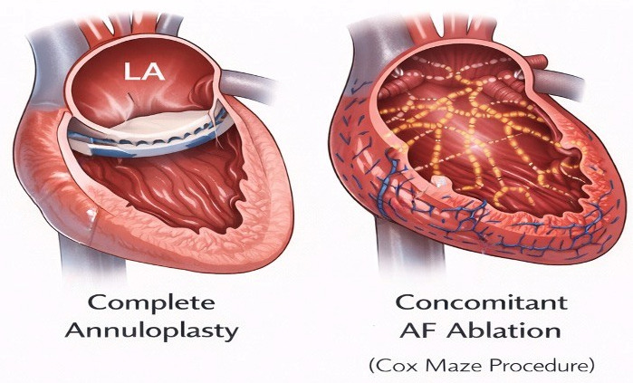
出典: Venturiello D, et al. Medicina (Kaunas) 2026;62(3):520. doi:10.3390/medicina62030520 / PubMed. CC BY 4.0（原図を改変せず掲載）。
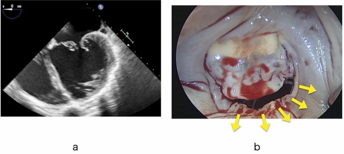
出典: Shibata T, et al. Gen Thorac Cardiovasc Surg 2021;69(7):1041-1049. doi:10.1007/s11748-021-01629-x / PubMed. CC BY 4.0（原図を改変せず掲載）。
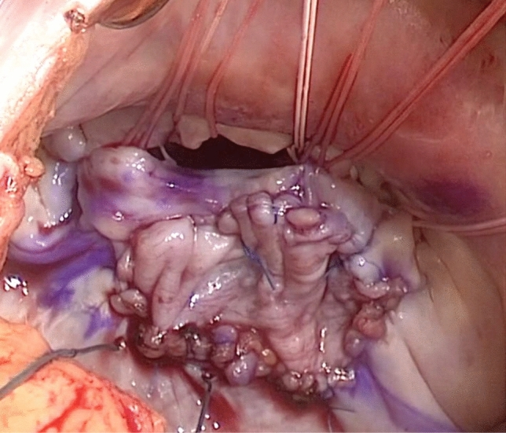
出典: Shibata T, et al. Gen Thorac Cardiovasc Surg 2021;69(7):1041-1049. doi:10.1007/s11748-021-01629-x / PubMed. CC BY 4.0（原図を改変せず掲載）。
| 研究 | N（AFMR） | 形成率 | リング | 同時 Maze | 同時 TAP | 残存/再発 MR | 再手術 | 死亡 | PPM |
|---|---|---|---|---|---|---|---|---|---|
| Bakir 2025（Cleveland、annuloplasty 単独のみ） | 194 | 100%（設計上） | complete rigid/semirigid 126（65%） vs posterior flexible band 68（35%）、中央値 28 mm［15-85th 26–31］、前尖面積計測後 1–2サイズ downsizing | 173（89%）（biatrial Cox-Maze III/IV 152、PVI＋LAA処理 21） | 124（64%） | ≥2+：10年 freedom 89%（95%CI 提示なし、68% band のみ）。ring vs band early P=.41／late P=.92 | 10年 freedom 96%（5例、うち2例 dehiscence・1例 MS） | 0/194（0%） | 24例（12%） |
| Berretta 2025（MMIR、低侵襲7957例中の AFMR） | 430（5.4%） | 393/430（91.4%） | complete ring 371（97.1%）／partial 11（2.9%）、low AP ratio 59.9% | 174（40.5%）、LAA 閉鎖 110（25.6%） | 190（44.2%） | >mild を失敗と定義：退院時 ≤mild 370/374（98.9%）、平均圧較差 median 3.9 mmHg（IQR 3–5） | 早期6（1.4%） | 院内 10（2.3%）／30日 11（2.8%）、脳卒中 8（1.9%） | 10（2.3%） |
| Song 2025（韓国2施設、PSM後） | 82 | 73/82（89.0%） | 部分リング 66.7%／完全 semirigid 33.3%、平均 30.8±2.3 mm | 57/82（69.5%） | 56/82（68.3%） | >moderate：5年 freedom 93.0%（DMR 89.8%, P=.699） | 2例 | 1（1.2%） | 5年 14.0% |
| Pyeatte 2025（WashU、PSM後） | 92 | 83/92（90.2%） | 記載なし | 全体 24/92（26.1%） | 全体 28/115（24.4%） | ≥2+：5（10.2%）vs VFMR 6（10.7%）P=1.000 | 回避は AFMR で高い傾向 P=0.062 | 3/92（3.3%）（VFMR 13.0%, P=0.03） | 3（3.3%） |
出典: Bakir 2025、Berretta 2025、Song 2025、Pyeatte 2025。
要点：
- AFMR に対する外科修復は isolated annuloplasty で完結する。 MMIR では形成393例のうち edge-to-edge 追加が3例（0.7%）のみで、人工腱索・切除・スライディングの施行例はゼロ。虚血性 VFMR で annuloplasty 単独が高率に再発するのとは対照的で、AFMR に安易に MVR や subvalvular 手技を追加する根拠はない。
- リング種類は決着していない。 Cleveland は band でも complete ring と同等と主張するが、band 群は術前 MR が有意に軽症（severe 9% vs 30%, P=.001）で未調整比較、しかも10年時のリスクセットが4例＝検出力不足による非有意の可能性が高い（信頼帯も 68% band で 95%CI ではない）。一方 MMIR の実臨床は complete ring 97.1%（うち low AP ratio 60%）に収束し、Samsung は部分リング66.7%でも残存 MR に差なし（P=.748）。実務的な折衷案は「軽〜中等症・tethering 最小・central jet なら band も可、高度 MR・posterior jet・弁輪高度拡大なら complete ring（できれば low AP ratio）」。
- サイズは 28〜31 mm 台で、極端な undersizing はしていない。 Cleveland の再手術5例中1例が僧帽弁狭窄＝過度のダウンサイジングの警告。MMIR の退院時 median 圧較差 3.9 mmHg。
- 術式選択の分岐点は術前 TEE のジェット方向と前尖 pseudo-prolapse である — posterior-directed jet（Cleveland 194例中80例、41%）は進行期の atriogenic tethering を示唆し annuloplasty 単独では不十分な可能性、anterior mitral leaflet pseudo-prolapse は弁置換に至る独立因子（OR 5.3, 95%CI 1.07–9.12）（ただし該当6例のみの exploratory 解析で 95%CI が点推定に対し非対称＝誤植の可能性あり）。
- 手術は「治癒」ではない。 術後も LAVI は 151.3±109.4 → 100.1±56.1 mL/m²（P<.001）と縮小するが LVEF は改善せず（59.1±9.4 → 54.3±11.2%、P=.315）、肺動脈収縮期圧の改善も変性性 MR に比べ有意に劣る（変化率 P=.031／別コホートでは低下量 −8.6±12.8 vs −15.9±17.9 mmHg, p=0.04）。術後も心不全管理と右心系の監視を要する。
同時 Maze/ablation 施行率が施設間で 26.1%〜100%、同時 TAP も 24.4%〜68.3% とばらつく（Pyeatte 26.1% ← MMIR 40.5% ← 外科メタ 74.3% ← Cleveland 89% ← Song 2024 100%）。AFMR 外科の成績比較は「併施パッケージの違い」を比べている。
XII-2. AFMR に同時 Maze を行う意義 — リズムではなく心不全再入院
AFMR に maze を併施すると洞結節機能不全が顕在化する：
- maze 後の junctional rhythm が AFMR 49.1% vs DMR 3.3%（P<.001）
- 5年 freedom from permanent pacemaker 86.0% vs 98.3%、多変量で AFMR は恒久 PPM 植込みの独立危険因子（HR 8.52, 95%CI 1.76–41.25, P=.008）、植込みは術後中央値20.5か月（IQR 14.8–28.5）と遅発性
- 別コホート85例でも AFMR は junctional rhythm の独立危険因子（OR 2.907, 95%CI 1.107–7.634, P=0.03）
- ★術前 ECG の fine fibrillatory wave（<1 mm）が maze 後 junctional rhythm の独立予測因子（OR 2.849, 95%CI 1.112–7.299, p=0.04）で、AFMR 群では 78.0%（64/82）に認められた — 外来 ECG 1枚で取れる簡便な術前リスク層別化指標である
それでも maze を省くべきではない — 同じコホートで術後洞調律は心不全再入院に対する強力な保護因子（HR 0.14, 95%CI 0.04–0.54, P=.004）であった。
一方で maze が「弁の耐久性」を改善する証拠は乏しい — Cleveland では AF 再発（48%）は MR 再発と有意に関連せず（P=.15）、外科的アブレーション施行の有無も MR 再発のリスク因子でない。WashU では同時外科的アブレーションは生存の独立予測因子でもなかった（HR 1.04, 95%CI 0.52–1.56, P=0.87）。対立する報告（Farhan が引用する Chen: Cox maze IV 併施群の3年 freedom from recurrent MR 94% vs 44%）は分母N・HR・95%CI・p値いずれも記載なし、再発 MR のグレード閾値も不明であり採用できない。
maze の付加価値は MR 再発の抑制ではなく、洞調律維持を介した心不全再入院の抑制にある。 すなわち 弁の耐久性は annuloplasty の機械的支持で決まり、臨床イベントはリズムで決まる。 実務結論：maze は省かず、心房ペーシングリード留置と PPM の術前説明を前提に併施する。
PPM 必要率の見積もりは集団で大きく変わる：韓国2施設 5年 14.0% ／Cleveland 12%（24/194） ／MMIR 2.3%（10/430） ／WashU 3.3%（3/92）。差の理由は ① AF 罹病の深さ（韓国コホートは permanent AF 97.1–97.6%・LAVI 151 mL/m²・fine fibrillatory wave 78% という「行き着いた左房」、MMIR は AF 69.7%［うち発作性24.6%］）、② maze 施行率（100% ← 89% ← 40.5% ← 26.1%）、③ 観察期間（韓国の植込みは中央値20.5か月の遅発性で、院内・30日成績しか見ていない MMIR ではそもそも捕捉できない）。
「AFMR＋長期持続 AF＋巨大左房＋fine fibrillatory wave」に maze を行うなら、PPM 必要率は1割強と見積もる。MMIR の 2.3% は「院内のみ」の数字であり術前説明に使ってはならない。
XII-3. AFMR の外科 vs TEER — 決着していない
AFMR に対する外科修復と TEER を直接比較した研究は1本も存在しない。
- 間接メタ比較（32研究1923例、外科20研究1166 vs TEER 12研究757）: 晩期重症 MR（≥3+）2.53/100人年（95%CI 1.66–3.84）vs 6.66（3.09–14.32）、P-interaction=.03、晩期全死亡 3.00（1.57–5.72）vs 8.84（4.47–17.47）、P=.02、晩期 HF 入院 4.44 vs 17.03（P<.01）、晩期 NYHA III/IV 2.98 vs 22.47（P=.01）。早期成績（30日死亡・脳卒中・AKI・HF入院・再介入）とリバースリモデリングは同等（Khairallah 2026）
- ★制約が重い：TEER 群は平均約10歳高齢・NYHA III/IV 2倍・STS-PROM 2倍超、weighted mean 追跡が 外科4.48年 vs TEER 1.41年。そして外科群は同時 AF アブレーション 74.3%（863/1162）・同時 TR 修復 64.0%（746/1165）を受けているのに対し、TEER 群は両方とも 0% ＝ 比較しているのは「弁」ではなく「パッケージ」。差の出た項目ほど I² 58–96%。リズムデータは皆無。
- RCT 由来（MATTERHORN の非事前規定 post hoc）: AFMR 34例（TEER 16 vs 手術 18）で TEER の1年複合有効性の非劣性は達成されず（21.4% vs 29.4%、差 −8、95%CI −38〜23、非劣性 P=0.058）。VFMR 174例では非劣性成立（15.9% vs 20.8%、差 −5、−17〜7、P<0.001）（Rudolph 2025）
- ★95%CI −38〜23 は「何も言えない」幅であり、検出力不足であって外科優位の証明ではない。 交互作用検定も提示されず、著者自身が hypothesis generating と位置づける。外科側の術式情報（形成/置換、リング、Maze、LAA）が一切記載されていない。
- 30日安全性は TEER が圧倒的（AFMR 17.6% vs 82.4%, P<0.001） — ただしこの複合にはあらゆる再入院・48時間超の人工呼吸・新規発症 AFが含まれ、開心術に構造的に不利である。
TEER vs 内科治療（日本の OCEAN-Mitral／REVEAL-AFMR、1081例、平均81.7歳、中央値754日）では TEER が全死亡＋心不全入院を減らした（overlap weighting HR 0.65, 95%CI 0.43–0.99, P=.044／全死亡 HR 0.58, 0.35–0.99, P=.044／3年推定発生率 21.0% vs 44.3%）が、その恩恵は退院時残存 MR が ≤mild の症例に限られ（HR 0.49, 95%CI 0.30–0.81, P=.006）、≥moderate 残存例は内科治療と差がなかった（HR 1.14, 0.54–2.40, P=.734）（Kaneko 2026）。
「TEER を行うこと」ではなく「MR を確実に消すこと」が予後を決める。 ほぼ全例で MR を消せる外科的弁輪形成（MMIR 退院時 ≤mild 98.9%）の価値はここにある。 ただし同解析の未調整解析では結果が逆転する（3年 31.1% vs 25.2%、OR 1.34, 95%CI 1.02–1.76, P=.033 で TEER 群が不良） — AFMR に対する TEER の有効性を示す現在最大の観察研究の結論は、全面的に傾向スコアモデルに依存している。 さらに制限付き3次スプライン解析では、左房が大きいほど TEER の相対的有利さは増すが、LAVI 約100 mL/m² 超・左房径 60 mm 超で頭打ちとなりハザード比がむしろ上昇する可能性が示された（少数例に基づく探索的所見）。巨大左房を伴う AFMR は弁尖アプローチの限界域であり、弁輪縫縮＋左房縮小＋Maze という外科的戦略の適応を検討する根拠になる。 参考として、同じ REVEAL-AFMR コホートの外科的僧帽弁手術は HR 0.39（TEER の 0.57–0.65 より良好）と報告され、著者は「同時三尖弁手術という付加的利益を反映している可能性」と解釈している（二次引用）。
現時点の実務的棲み分け以上のことは言えない — 耐術能があり、TR 併存・高度弁輪拡大・巨大左房の AFMR は外科、フレイル高齢は TEER。 RCT は存在しない（EVEREST II は病因混在、CLASP IIF は FMR 対象で進行中）。
なお ≥2+ で見るか ≥3+ で見るかで TEER の評価は大きく変わる — メタ解析と MATTERHORN は ≥3+ のみ報告、OCEAN は ≥moderate で層別して「≥moderate 残存群は内科と差なし」を見出している。
XII-4. AFTR（A-STR）— 定義と同時 TAP の判断
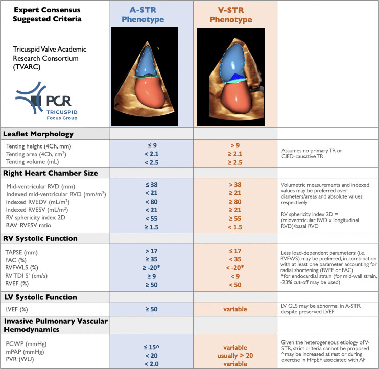
出典: Muraru D, et al. Eur Heart J 2024;45(11):895-911. doi:10.1093/eurheartj/ehae088 / PubMed. CC BY-NC 4.0（原図を改変せず掲載）。
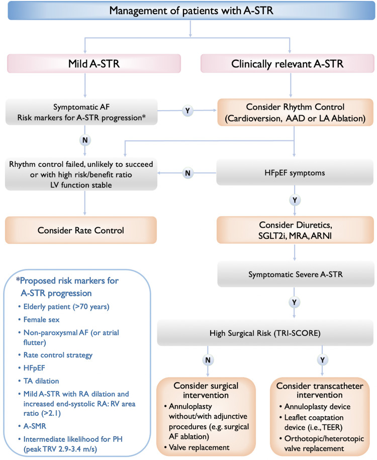
出典: Muraru D, et al. Eur Heart J 2024;45(11):895-911. doi:10.1093/eurheartj/ehae088 / PubMed. CC BY-NC 4.0（原図を改変せず掲載）。
心房性二次性三尖弁閉鎖不全（A-STR）は6基準すべてで definite、4基準以上で probable と定義される（欧州の学際的専門家意見書、推奨クラスは付されていない）（Muraru 2024）：
| 基準 | 具体的閾値 | 外科的含意 |
|---|---|---|
| ① 中等度以上の STR | VC width (biplane) ≥3 mm／PISA radius ≥5.5 mm／RVol ≥30 mL／RF ≥16%（PISA EROA "≥20 cm²" は原文表記だが mm² の誤植と推定）。CMR では RF ≥30%・RVol ≥35 mL が死亡と関連する最適閾値 | 本レビューが精読した AFMR/AFTR 論文12編中、定量閾値を明示しているのは本文書のみ |
| ② 三尖弁輪拡大優位 | 2D四腔・拡張末期 >40 mm（22 mm/m²）男性・>35 mm（21）女性／RV-focused >41（24）男性・>38（22）女性／3D major TA径 >46（27）男性・>43（26）女性／TA面積 >13.8 cm²男性・>11.7 女性／TA周長 >13.7 cm男性・>12.5 女性 | 章 I-2 の 40% vs 75% と合わせ、僧帽弁手術時の予防的 TAP の機序的根拠 |
| ③ 右房拡大優位＋収縮末期 RA:RV 比増大 | 2D RA volume >34 mL/m²男性・>29 女性／3D >38・>34／収縮末期 RA:RV 比 ≥1.5（※ハイリスク基準では >2.1 と記載され原文内で不一致） | RA:RV 比で「右房主導か右室主導か」を1指標で示す。RAVI/LAVI >1 は AF アブレーション成功率低下の指標でもある |
| ④ 有意な弁尖テザリングの欠如 | tenting height ≤9 mm、tenting area <2.1 cm²、tenting volume <2.5 mL、leaflet angle <15° | ★この項目が「輪形成単独で足りるか」の分岐点。 テザリングがあれば leaflet augmentation か置換を検討 |
| ⑤ RV の円錐状リモデリング（基部優位） | RV sphericity index <55／RV中位径正常 ≤38 mm／RV基部径拡大 ≥45 mm（≥24 mm/m²）男性、≥40 mm かつ ≥20 mm/m² 女性 | A-STR は conical（基部だけ拡大）、肺高血圧による V-STR は elongated spherical（apical remodeling＋tethering）。 2D 基部径は RV サイズを過大評価するため RV-focused view / 3D / CMR を使う |
| ⑥ LV/RV 収縮能保持 | LVEF ≥50%、3D RVEF ≥50%、RVFWLS ≤−20%、RV TDI S' ≥9 cm/s、FAC ≥35%、TAPSE >17 mm | RV-PA coupling：内科治療下では TAPSE/PASP <0.36 mm/mmHg、TTVI 後死亡増加は <0.39–0.41。AFMR の TEER 後予後不良因子 <0.34 とほぼ同水準 |
僧帽弁手術予定患者のスクリーニングに使える A-STR ハイリスク基準（9項目）: (1) >70歳 (2) 女性 (3) 非発作性 AF/心房粗動 (4) rate control 戦略 (5) HFpEF (6) TA 拡大 (7) 軽度 A-STR＋RA 拡大＋収縮末期 RA:RV 面積比 >2.1 (8) A-SMR（＝AFMR）の存在 (9) PH 中等度確率（peak TRV 2.9–3.4 m/s）。
手技：A-STR は弁輪拡大という機序そのものに作用するため輪形成単独で足りることが多く、著者らは "annuloplasty alone may be enough to treat most patients and should be preferred over suture techniques only" と述べる一方、進行期でテザリングが加わった症例では "TV annuloplasty alone can be ineffective or even worsen the TR" と警告している。
同時 TAP の実測値（章 I-2 と併読）：術前中等度以上 TR は研究により 21.7–71.6%（Pyeatte 21.7%／MMIR 47.3%／Cleveland 66%／Khairallah 外科アーム 71.6%）と大きく幅があり、TAP 併施は 24.4–68.3%。残存 TR は Song 2025 で >moderate 5年 freedom 95.3%（DMR 96.6%, P=.733）、MMIR 退院時 moderate 33（9.4%）／severe 3（0.9%）。ただし PASP 改善は AFMR で有意に劣る（P=.031）。
そして外科的三尖弁輪形成は CTSN の RCT（Gammie 2022 NEJM、二次引用）で新規 PPM 植込みリスク増加と関連している — A-STR 患者では三尖弁置換時（および選択的に輪形成時）に心外膜ペーシングリードの留置を考慮すべき（Muraru の著者意見、推奨クラスは付されていない）。
XII-5. AFMR の定義そのものが論文間で20ポイントずれている
| 論文 | LVEF カットオフ | 「AF の存在」を必須とするか | 左房拡大の閾値 |
|---|---|---|---|
| MATTERHORN post hoc | ≥40%（HFrEF 除外目的） | 含まない（AFMR 群でも AF 64.7%） | LAVI ≥40 mL/m² |
| Bakir（Cleveland） | ≥45% | ★必須（12編中で唯一） | ★カットオフを課していない（実測 LA径 5.0±1.1 cm） |
| Song 2025／Song 2024 | ≥50% | 明示的要件なし（実際は permanent AF 97.1%） | LAVI ≥40 mL/m² かつ LA径 ≥40 mm |
| Pyeatte（WashU） | ≥50%＋RWMA なし | ★「AF既往 or LA拡大」の "or" 条件＝AF は必須でない（実際 AF 63.5%） | LAVI >34 mL/m² または LA径 >4.0 cm男性/>3.8 女性 |
| Berretta（MMIR） | ≥50% | ★要件に含まれない（実際 AF 69.7%）。代わりに「dilated mitral valve annulus」を必須要件 | 「dilated left atrium」定性のみ、数値なし |
| OCEAN-Mitral | ≥50%（LVEDV <150 mL、LVEDD <55 mm） | 含まない | LAVI 男性 ≥38／女性 ≥41 mL/m²（性差が他研究と逆向き） |
| Farhan 提案定義 | ≥60%（従来の50%より高いと自認） | 明示せず | LAVi >34 mL/m² |
EF 42% の患者は MATTERHORN では AFMR、Cleveland では除外、Pyeatte では VFMR に分類される。 同じ「AFMR」という語が指す集団が論文間で 30〜40% ずれている。EROA/RVol/VC の定量カットオフを提示した AFMR 外科論文は本レビューの精読範囲でゼロ（唯一 A-STR の Muraru が定量閾値を持つ）で、すべて定性グレード判定、コアラボ判定を行っているのは MATTERHORN のみ。AFMR の定義の一次資料は AATS 2026 コンセンサス（Mori 2026）に委ねるべきである。 なお AATS 2026 自身が "no studies directly compare the relative effectiveness of PVI, left atrial maze, and biatrial maze specifically in the setting of AFMR" と自認し、推奨はすべて変性 MR からの外挿＋病態論理である。同文書が示す AFMR 特有の重要事実 — AFMR での外科アブレーションは変性 MR より成功率が低く5年で 40–60% が AF 再発する、そして AF アブレーションを行っても遠隔期 TR は進行する（MVP+Cox-Maze の前向き314例で5年 freedom from ≥3+ TR は約50%、TVP は 58.3% に必要）。AFMR は「Maze が最も効きにくい基質（平均77歳・LA径5.1 cm）でありながら biatrial maze が推奨される」という緊張関係を抱えている。
XII-6. AFMR 外科論文からリズム成績を引用してはならない
12編中、術後リズムを報告しているのは Song 2025／Song 2024／Bakir の3編のみで、いずれも判定手段が不十分である — 韓国2コホートは12誘導 ECG のみ（術後1・3・6か月、以後6か月毎、連続2回の ECG で AF なしを洞調律回復と定義、blanking・30秒閾値・AAD 継続の規定はいずれも記載なし）で著者自身が過大評価を認め、Cleveland は "available electrocardiograms and long-term monitoring" という一文のみでモダリティも頻度も未定義（過小評価の可能性）。MMIR・WashU・MATTERHORN・OCEAN-Mitral・Khairallah メタ解析はリズム転帰を一切報告していない。
もう1点、術前説明に直結する事実：AFMR に対する maze＋LAA 閉鎖を行っても抗凝固から離脱できているとは限らない — 最終フォロー時点の抗凝固継続率は AFMR 88.5% vs DMR 48.7%（p=0.001）（Song 2024）。「maze をすれば抗凝固をやめられる」と約束すべきではない。
XIII. POAF — 外科医の手で予防できるが、予防に意味があるかは別問題
XIII-1. partial cardiac denervation が POAF を減らした（RCT）
孤立性 CABG 430例の単施設 RCT（pCAD-POAF）で、Marshall 靭帯（LOM）切離＋Waterston 溝脂肪体切除による partial cardiac denervation が術後6日以内の POAF を 68/215（31.6%）→ 39/215（18.1%） へ減少させた（risk ratio 0.57, 95%CI 0.41–0.81, P=.001／Kaplan-Meier HR 0.53, 95%CI 0.36–0.79, P=.002）。絶対リスク減少 13.5%、NNT ≒ 7.4（Yang 2025）。
副次的にも一貫している — AF burden 0% の症例が 147/215（68.4%）→ 176/215（81.9%）（P=.004）、アミオダロン投与が 57/215（26.5%）→ 31/215（14.4%）（P=.002）。一方 手術時間・CPB 時間の延長はなく、出血再開胸（0 vs 2）・遅発性心嚢液貯留（1 vs 2）・輸血（15.4% vs 20.5%, P=.17）にも増加なし、院内死亡は両群0例。 除神経手技は介入群215例全例で成功し、全術者がベテラン術者2名の指導下で3例以内に単独施行可能（学習曲線が浅い）。切除した Waterston 溝脂肪体10ペアの全検体で神経節/神経線維が組織学的に確認されている。
機序は抗炎症ではなく自律神経修飾と示唆される — 介入群では最低心拍数が高く（59 vs 56 bpm, P=.001）最高心拍数が低く（133 vs 146 bpm, P=.002）、acceleration/deceleration capacity にも有意差がある一方、IL-4・IL-6・IL-8・TNF-α・hs-CRP は両群同等。同時に長期の変時性応答への影響という未解決の懸念も残す。
単施設・中国・比較的低リスク集団（平均61.9歳、女性18.4%、LVEF 中央値63%、左房径中央値36 mm）で、弁膜症併施例115例・緊急 CABG・再手術・AF 既往例は除外。30日 MACCE は 1/215 vs 1/215 であり、POAF 抑制が脳卒中・死亡を減らすかは検証されていない。 なお対照群の POAF 31.6% は設計時想定の23%を上回るが、これは術後1時間から6日目まで途切れなく記録する貼付型連続動的心電図による高感度検出の帰結であり、間欠モニタリングを用いた過去の POAF 試験と直接比較できない（章 0 と同じ構造）。
XIII-2. posterior pericardiotomy は3文書で推奨されるが「誰に」が食い違う
| 文書 | 推奨 | 適応の限定 | 数値 |
|---|---|---|---|
| ESC/EACTS 2024 | Class IIa / Level B | 無限定 | OR 0.44; 95%CI 0.27–0.70; P=.0005 |
| ACC/AHA 2023 | COR 2a / LOE B-R | ★CABG / AVR / 上行大動脈瘤に限定（"the studies did not include patients undergoing mitral or tricuspid procedures"） | PALACS 17% vs 32%; P=0.0007; OR 0.44（CI なし） |
| STS 2026 POAF | COR IIa / LOE B-R | ★"in patients without prior cardiac surgery" と限定（isolated mitral valve surgery でのエビデンスはより限定的とも明記） | メタ解析22研究4300例 11.7% vs 23.7%; OR 0.49（0.38–0.61）／PALACS n=420 OR 0.44（0.27–0.70）／PSマッチ>2500例 33% vs 43%, aOR 0.67（0.52–0.88）／19RCT n=3425 OR 0.42（0.29–0.59), I²=66%／PAPPA ITT 18% vs 32%, P=.004 |
STS 2026 自身がこの差を明示的に記述している（"the ACC/AHA guideline does not extend the recommendation to mitral or tricuspid surgery, whereas the ESC/EACTS guideline provides an unqualified endorsement"）。→ 僧帽弁手術＋Maze を行う症例に posterior pericardiotomy を追加すべきかは、3文書のどれからも直接には答えが出ない。
他の POAF 予防策の推奨も割れている：周術期アミオダロンは ESC/EACTS Class I / Level A vs ACC/AHA 2a/B-R vs STS 2026 COR I / LOE B-R（LOE が A と B-R で食い違う）。コルヒチンは STS 2026 のみが COR IIb / LOE B-R に格上げ（ESC は推奨なし、ACC/AHA は項目化せず）。biatrial pacing は ESC が "lack scientific evidence" と否定的に列挙する一方 STS 2026 は COR IIb / LOE B-R で採用（Cochrane OR 0.47 [0.36–0.61]、14RCT n=1727 OR 0.49 [0.35–0.69]、biatrial サブグループ554例 OR 0.36 [0.20–0.64], I²=63%）。ボツリヌス毒素（心外膜脂肪体）は STS 2026 が COR III-NB / LOE C で明示的に非推奨。
XIII-3. STS 2026 は「POAF を減らすことの意味」を公式に留保した
"Current evidence suggests POAF may function more as a marker of perioperative or patient vulnerability than as a direct causal mechanism for adverse outcomes."（Chatterjee 2026）
この立場が2つの判断の論理的基盤になっている：
- 予防的アブレーション／予防的 LAAO を意図的に「無格付けのエビデンスレビュー」にした（予防的 PVI のメタ解析は Visanji 7 RCT n=687 で 30日 POAF 21% vs 37%, RR 0.50, I²=64%／最長追跡 incident AF 3% vs 10%, RR 0.3, 95%CI 0.2–0.7, I²=0% と良好だが、6試験が isolated CABG）
- POAF 後の長期抗凝固を IIb に下げた — 根拠は STS ACSD 166,747例で ischemic stroke aOR 0.87（95%CI 0.65–1.16, P=.35）と減らず、大出血 aOR 4.30（3.69–5.03, P<.001）、30日死亡 aOR 1.20（1.02–1.40, P=.024）（9861 pairs で mortality HR 1.16 [1.06–1.26]、bleeding HR 1.60 [1.38–1.85]）。ACC/AHA 2023 は COR 2a / LOE B-NR（60日投与後に再評価）、ESC/EACTS 2024 は Class IIa / Level B（2020年版 IIb/B から格上げ）で、STS だけが逆方向に動いた。
CABANA/EAST-AFNET 4 が示す「洞調律の価値」は慢性 AF の話であり、術後一過性 AF の話ではない。「AF のない患者への予防的部分除神経」と「AF 既往例への治療的 Maze」は、機序的には GP 処理という連続性をもつが、目的も適応も別物である。 同時に、ESC/EACTS 2024 が「POAF は 4–5倍の再発 AF・脳卒中/MI/心不全/死亡のリスク因子」と述べて POAF 後 OAC を IIa に格上げしたのと、STS 2026 の立場は正面から対立する。同じ疾患概念に対する因果性の解釈が学会間で割れている。
XIV. 実務への落とし込み — 症例別の判断と術前説明の文言
以下は本レビューが精読した文献から著者（本文書作成者）が導いた実務的整理であり、ガイドライン推奨ではない。各項目の根拠は本文の該当章を参照。
XIV-1. 症例別の判断
| 状況 | 推奨される行動 | 根拠（章） |
|---|---|---|
| 僧帽弁手術＋AF（病型を問わず） | 同時アブレーションを行う。 迷うなら病型ではなく罹病期間と右房病変で決める | III-1, III-3, VI-1 |
| 僧帽弁手術＋AF＋三尖弁病変/右房拡大/typical flutter | biatrial lesion set。ただし PPM 5年22%・8年27% を IC に含める | IV-1, X-1 |
| 僧帽弁手術＋AF・右房病変なし | 左房 lesion set で足りる（ただし RCT は存在しない） | IV-1 |
| 非僧帽弁（CABG/AVR）＋AF | やる。 安全性は示され（オランダ全国レジストリで合併症増加なし、時間コスト CPB +18分・遮断 +8分）、非心房切開でも MAE・再発は僧帽弁例と同等（ICE-AFIB） | III-5 |
| 左房が大きい（>5.5 cm、>6 cm） | 諦めない。 full Cox-Maze なら2年 85% で小左房群と有意差なし。ただし PVI 単独に逃げてはならない（STS 2023 は LA ≥4.5 cm への PVI 単独を Class III/C） | VI-1, XI-3 |
| 巨大左房（実測平均 72 mm 級） | Cox-Maze＋左房縮小術は成立する（30日死亡 3.76%）。切除法か縫縮法かは「早期出血 vs 晩期塞栓」のトレードオフ。リズム上乗せは未証明、脳卒中減少（HR 0.54）は示唆 | VI-2 |
| AF 既往＋CHA₂DS₂-VASc ≥2 の開心術 | LAA 閉鎖を併施する（5年 NNT 37、CPB +5分・遮断 +4分のみ）。術中 TEE で「遺残血流なし＋残存スタンプ <10 mm」を確認。OAC は続ける | VII-1〜VII-3 |
| 術前 AF のない弁膜症手術 | ルーチンの予防的 LAA 閉鎖は現時点で支持されない（OPINION）。ただし害もない。LeAAPS 待ち | VII-4 |
| AFMR（LVEF 保持・弁尖正常・弁輪拡大） | undersized ring annuloplasty 単独で十分。 MVR や subvalvular 手技の追加は不要。posterior jet / AML pseudo-prolapse があれば弁尖処理・置換を検討 | XII-1 |
| AFMR＋中等度以上 TR または三尖弁輪拡大 | 同時 TAP を行う（三尖弁は僧帽弁より弁輪拡大に脆弱、孤立性 TR 手術は院内死亡10%で待つほど適応外に） | I-2, XII-4 |
| AFMR＋permanent AF＋巨大左房＋fine fibrillatory wave | maze は省かない（洞調律は心不全再入院の保護因子 HR 0.14）。ただし PPM 必要率1割強を説明し、心外膜ペーシングリードを最初から置く | XII-2 |
| de novo LSPAF・弁膜症なし（standalone） | 胸腔鏡単独は first-line として提示しない（CASA-AF でカテーテルに勝てず、症状・QOL・費用でも劣る）。心内膜側を組み合わせる（ハイブリッド）なら勝てる | VIII-1, VIII-2 |
| 持続性/LSPAF・カテーテル失敗 or 巨大左房 | ハイブリッド（段階的でも同時でも可）。 合併症は増える（入院 +3.22日、手技 +67.72分、EHAFA 院内 major 8.2%）ことを説明 | VIII-2, VIII-4, VIII-5 |
| どの術式でも | ★術中に伝導ブロックを確認する（PV ペーシングは lesion set の選択より強い予後予測因子: OR 0.32 vs 0.50 n.s.）。冠静脈洞に心外膜側から追加焼灼を置く（術後 AT 14%→3%） | IV-4, IV-5 |
| どの術式でも | ★冠動脈の直上は焼かない（nsPFA で22%が VF 死、PFA カテーテルでも僧帽弁峡部で冠攣縮が臨床的4–10%） | V-4, IX-3 |
| clamp を使うとき | ★1回では透壁しない。 unclamp せず2連続焼灼（bipolar clamp 単発65% → 2回100%）。弁輪・冠静脈洞・三尖弁側は cryo で補完（Terminate AF で 98.9–100% が cryo） | V-2, XI-4 |
| box lesion を作るとき | ★roof line 単独では不十分。roof＋floor で box にする（Marshall-Plan で roof 単独のブロックは51%、floor 追加で dome transection 92%） | IV-3 |
| LAA 閉鎖の器具選択 | AtriClip（PFA との将来的な互換性があり、lobe-and-disk 型は左側 PV への PFA 送達を3分の1で妨げる）。LAA の一部を病理提出するとアミロイドが 11.5% に拾える | IX-3, VIII-7 |
XIV-2. 術前説明（IC）に使う数字
有効性
- 僧帽弁手術＋同時アブレーションで、1年後に AF がない確率は 約63%（何もしなければ約29%）。ただしこれは6・12か月の3日間 Holter による判定で、より厳しく測れば数字は下がる。
- 10年では 65%（抗不整脈薬を使わずになら 56%） が不整脈なく過ごす。10年で4割超が再発するが、症候性の再発は10年で17% にとどまる。
- 長期持続性 AF では12か月時点で 約3割が再発する（persistent 8% vs long-standing persistent 28%）。
- 単独手術（弁手術を伴わない胸腔鏡）は、長期持続性 AF ではカテーテルに勝たない。心外膜＋心内膜を組み合わせれば2年で約2倍（66% vs 33%）。
代償
- ★ペースメーカ：5年で 22%（18–26%）、8年で 27%（22–31%）。 何もしなければ 13%（10–17%）なので、上乗せは8年で約14ポイント（7人に1人）。早期は房室ブロック（弁手術由来）、遅発は洞結節機能不全（アブレーション由来）。
- 手術時間：体外循環が +8〜+65分、大動脈遮断が +8〜+25分（どこまで焼くかで変わる）。
- 死亡・脳卒中・出血の増加は示されていない。ただしフルの Cox-Maze IV では急性腎障害が増える可能性がある（29% vs 20%）。
- LAA 閉鎖の追加は体外循環 +5分・遮断 +4分のみで、出血・心不全・死亡を増やさない。
やらないこと・約束しないこと
- ★「洞調律に戻れば症状や QOL が良くなる」とは言わない（EAST-AFNET 4 で EQ-5D・SF-12・MoCA・LVEF いずれも改善せず）。「心血管イベントを減らすために行う」と説明する。
- ★「Maze をすれば抗凝固をやめられる」とは言わない（LAAOS III は OAC 継続下の上乗せ効果しか示しておらず、AFMR コホートでは最終フォロー時 88.5% が抗凝固を継続していた）。
- 余命が短いと見込まれる症例では生存利益を回収できない可能性がある（台湾データでは2年時点では外科群のほうが生存不良で、中期に曲線が交差してから逆転する）。
- 胸腔鏡/ハイブリッドでは 開胸への転換 2〜3%（学習曲線あり）、横隔神経障害 0.7〜2.8%、心房食道瘻は稀だがゼロではない（実臨床レジストリで死亡例が報告されている）。
XIV-3. 施設として整備すべきこと
- 術中ブロック確認をルーチン化する — PV ペーシングによる exit/entrance block 確認。EHRA/HRS 自身が「実施は稀」と認めている領域であり、ここが最も費用対効果の高い改善点である。
- リズムフォローのプロトコルを決める — 最低でも「blanking 期間・閾値・AAD の扱い・モニタ手段」を施設内で定義し、記録する。そうしないと自施設成績が文献と比較できない。
- 循環器/EP との連携 — 実装障壁の最頻の要望が「循環器/EP からのサポート（21.21%）」で、紹介元循環器医が同時アブレーションに言及しないケースが39.3%。教育の宛先は外科医だけではない。
- ハイブリッドを行うなら — 心内膜側セッションに AVANT GUARD 由来の脳卒中予防策（術前24時間以内の血栓スクリーニング、無中断抗凝固、ACT ≥350秒）を適用し、Convergent を行うならステロイド/NSAID 予防投与と術後1–3週の心嚢液フォロー体制を組む。段階的なら「2割が第2段階に来ない」ことを前提に呼び戻す仕組みを作る。
- LAA の病理提出 — アミロイド 11.5%（うち ATTR 2.5%）が拾える。
XV. 未解決の論点と進行中の試験
| # | 論点 | 現状 | 決着させる試験 |
|---|---|---|---|
| 1 | biatrial vs 左房限定 lesion set | CTSN の nested randomization は事前仮説なし・検出力不足、Gemelli サブ解析は3試験313例、Yi の CMP-L は10年で8例。両陣営が同じ RCT を要求している | 未計画（Blackstone・Yi・Guo・Pyo が全員 RCT を要求） |
| 2 | 洞調律回復 vs LAA 閉鎖の効果分離 | 誰も検証していない。Yi は LAAO 100% vs 15–19% の交絡を自認 | 未計画 |
| 3 | 同時アブレーションの生存利益（RCT） | 観察研究では一貫、RCT では未証明 | NCT05434819（Surgical Ablation of AF Efficacy Trial） |
| 4 | AF のない例への予防的 LAA 閉鎖 | OPINION は1年で陰性（検出力不足）、Burton メタは陽性だが観察研究主体 | LeAAPS（NCT05478304、6500例、2032年完了予定）、LAACS-2（NCT03724318） |
| 5 | LAA 閉鎖成功後の OAC 中止の安全性 | 学会間で正面から対立（ESC/EACTS「中止しない」Class I vs AATS「heart team の裁量」IIa） | ATLAAC（Gosvig 2025, Am Heart J） |
| 6 | 経皮 vs 外科的 LAA 閉鎖／心臓手術以外の AF 集団への外科的閉鎖 | 未検証 | LAAOS-4（NCT05963698） |
| 7 | LAA 閉鎖の術式間（cut-and-sew vs ステープラー vs AtriClip vs 内膜縫合）の優劣 | LAAOS III・Burton・Vad いずれも術式別解析を明示的に断念 | 未計画 |
| 8 | ILR 連続監視下でのハイブリッド vs カテーテル | ★本レビュー最大の空白。 CASA-AF の厳格さと CEASE-AF/CONVERGE の術式を組み合わせた試験がない | 未計画 |
| 9 | 同時（one-stage）vs 段階的（staged）ハイブリッド | Aerts「差なし」vs Khanra「staged 不利」で食い違い、直接 RCT なし | 未計画 |
| 10 | 巨大左房（LA >50 mm）でハイブリッド vs 開胸 full Cox-Maze IV（±左房縮小） | Zheng で LAD >50 mm では上乗せ効果消失（P interaction=0.015）、Zheng 自身が「HA は full Cox-maze IV に劣る」と認める | 未計画 |
| 11 | 左房縮小術の上乗せ効果 | 直接比較は Choi の後ろ向き IPTW のみ。Ad・Choi・Baudo 全員が RCT を要求 | 未計画 |
| 12 | nsPFA クランプのヒト成績 | 前臨床（透壁性・exit block）まで。リズム評価をした研究がゼロ | in-human trial 待ち（Dunnington "We now await the results of in-human trials"） |
| 13 | 外科的エピカルディアル PFA の横隔神経安全性 | EHRA 声明が「epicardial では熱的損傷がありうる」と警告するのみで実データなし | 未計画 |
| 14 | 後壁隔離（PWI）の上乗せ効果 | カテーテル領域は CAPLA・CORNERSTONE で陰性だが検証されたのは非耐久な PWI。外科側でも box vs U lesion で差なし | PIFPAF-PFA（NCT05986526）（カテーテル側） |
| 15 | AFMR に対する外科 vs TEER の RCT | 存在しない（MATTERHORN post hoc は34例で 95%CI −38〜23） | CLASP IIF（FMR 対象、進行中） |
| 16 | AFMR の統一定義（EF カットオフ・AF の必須性・LA 拡大閾値・EROA/RVol 定量基準） | 論文間で EF カットオフに20ポイントの幅 | AATS 2026 コンセンサスが定義章を持つ |
| 17 | リズムコントロールで MR が改善する群の術前判別 | ★本レビューが最も明確に「未解決」と書く論点 | 未計画 |
| 18 | 成功の定義とモニタリングの標準化 | ガイドライン6編中、blanking・30秒閾値・AT/AFL の3つすべてを定義した文書はゼロ | 未計画（Blackstone は "reassessment of definitions for failure after ablation"、Sakurai は "standardized lesion sets, rigorous rhythm follow-up, and adjudication of outcomes" を要求） |
| 19 | POAF 予防が長期予後を改善するか | pCAD-POAF は 30日 MACCE 1例 vs 1例。STS 2026 は POAF を「因果ではなく脆弱性のマーカー」と留保 | 未計画 |
| 20 | PFA の1年超のアウトカム／持続性 AF の PFA 長期成績 | EHRA 声明が「1年を超えるデータは欠如」と明記。持続性 AF の PFA 長期成績はゼロ | 進行中（AVANT GUARD 等の延長） |
| 21 | 日本人集団への外挿 | 胸腔鏡/ハイブリッドの主要10編に日本の施設が含まれない（BMI 28–35 の集団） | 未計画 |
精読文献リスト（全72本）
★ = 全文精読（71本）。◇ = 権利上 DL 不可のため二次資料から復元（1本）。
ガイドライン・コンセンサス（6）
- ★Wyler von Ballmoos MC, et al. Ann Thorac Surg 2024;118:291-311 — STS 2023 外科的AF治療ガイドライン
- ★Van Gelder IC, et al. Eur Heart J 2024;45:3314-3414 — 2024 ESC/EACTS AF ガイドライン
- ★Tzeis S, et al. Heart Rhythm 2024;21:e31-e149 — 2024 EHRA/HRS/APHRS/LAHRS アブレーションコンセンサス
- ★Joglar JA, et al. J Am Coll Cardiol 2024;83:109-279 — 2023 ACC/AHA/ACCP/HRS AF ガイドライン
- ★Mori M, et al. J Thorac Cardiovasc Surg 2026 — AATS 2026 AFMR エキスパートコンセンサス
- ★Chatterjee S, et al. Ann Thorac Surg 2026;122:255-78 — STS 2026 POAF ガイドライン
総論・歴史（2）
- ★Cox JL. Heart Rhythm 2025;22:2735-2736 — The story behind the Maze procedure
- ★Kowalewski M, et al. Eur J Cardiothorac Surg 2025;67:ezaf187 — 同時外科的アブレーション state-of-the-art review
同時外科的アブレーション（9）
- ★Gillinov AM, et al. N Engl J Med 2015;372:1399-1409 — CTSN RCT（NCT00903370）
- ★Blackstone EH, et al. J Thorac Cardiovasc Surg 2019;157:234-243 — CTSN の TTM 二次解析
- ★Gemelli M, et al. Am J Cardiol 2023;209:104-113 — 僧帽弁手術 RCT のみの SR+MA（13 RCT）
- ★Sakurai Y, et al. Am J Cardiol 2025;235:16-29 — 晩期生存の SR+MA（24研究41,678例）
- ★Yi JJ, et al. J Thorac Cardiovasc Surg 2025;170:1631-1638 — Cox-Maze IV の10年成績（PSM）
- ★Bayón MA, et al. Eur J Cardiothorac Surg 2025;67:ezaf244 — オランダ全国レジストリ（isolated CABG/AVR）
- ★Mehaffey JH, et al. J Thorac Cardiovasc Surg 2023;165:650-8 — アブレーションの障壁（外科医サーベイ）
- ★Damiano RJ, et al. J Thorac Cardiovasc Surg 2026 — Terminate AF（NCT03546374）
- ★Ad N, et al. J Thorac Cardiovasc Surg 2026;171:927-935 — ICE-AFIB（NCT03732794）
Lesion set（8）
- ★Pyo WK, et al. J Thorac Cardiovasc Surg 2025;170:542-550 — biatrial vs 左房（韓国5施設 IPTW 1825例）
- ★Guo Q, et al. J Cardiovasc Electrophysiol 2021;32:2316-2328 — Bayesian network meta-analysis（19 RCT）
- ★Nitta T, et al. JTCVS Open 2025;23:110-119 — Maze 後 AT の機序（不完全焼灼・冠静脈洞）
- ★Goings D, et al. Heart Rhythm 2025 — Maze 後再発例のカテーテルマッピング（Mayo）
- ★William J, et al. Eur Heart J 2025;46:132-143 — CAPLA 長期（後壁隔離）
- ★Miyazaki S, et al. Eur Heart J 2026 — CORNERSTONE AF（UMIN000047638）
- ★Sang C, et al. JAMA 2025;333:381-389 — PROMPT-AF（NCT04497376）
- ★Derval N, et al. Circ Arrhythm Electrophysiol 2025;18:e013427 — Marshall-Plan（NCT04206982）
エネルギー源・デバイス（5）
- ★Baudo M, et al. Heart Lung Circ 2025;34:25-33 — RF vs Cryo メタ解析（60研究8,293例）
- ★Yi J, et al. J Thorac Cardiovasc Surg 2026;171:632-9 — nsPFA で拍動心 box lesion（＋経弁的焼灼で VF 死）
- ★Dunnington GH, et al. J Thorac Cardiovasc Surg 2025;170:1069-78 — nsPFA vs bipolar RF の 1:1 GLP 試験
- ★Serra F, et al. Circ Arrhythm Electrophysiol 2023;16:e012300 — nsPFA バイポーラクランプの慢性透壁性
- ★Musikantow DR, et al. JACC Clin Electrophysiol 2024;10:2097-9 — NEURAL-AF-2（心外膜 GP PFA、ヒト12例）
左房サイズ・左房縮小術（3）
- ★Ad N, et al. J Thorac Cardiovasc Surg 2014;147:236-41 — 巨大左房でもアブレーションすべきか
- ★Choi W, et al. Semin Thorac Cardiovasc Surg 2022;34:537-546 — 左房縮小術の影響（IPTW 1484例）
- ★Baudo M, et al. Heart Lung Circ 2023;32:1386-1393 — 左房容積縮小術のメタ解析（19研究1,658例）
左心耳閉鎖（6）
- ★Whitlock RP, et al. N Engl J Med 2021;384:2081-2091 — LAAOS III（NCT01561651）
- ★Connolly SJ, et al. Circulation 2023;148:1298-1304 — LAAOS III：OAC 使用との交互作用
- ★Katsanos AH, et al. JAMA Neurol 2026;83:76-82 — LAAOS III：脳卒中の機序と重症度
- ★Yuan X, et al. Eur Heart J 2026;47:2440-2448 — OPINION（ChiCTR2100042238）
- ★Burton S, et al. Heart Rhythm 2025;22:2595-2602 — 洞調律例における外科的 LAA 閉鎖のメタ解析
- ★Vad R, et al. Eur J Cardiothorac Surg 2026;68:ezag146 — 閉鎖成功の評価法・基準の SR（80研究）
胸腔鏡下・ハイブリッド・Convergent（11）
- ★Haldar S, et al. Eur Heart J 2020;41:4471-4480 — CASA-AF（ISRCTN18250790）
- ★Boyalla V, et al. Heart Rhythm 2024;21:1562-1569 — CASA-AF 36か月・費用対効果
- ★DeLurgio DB, et al. Circ Arrhythm Electrophysiol 2020;13:e009288 — CONVERGE（NCT01984346）
- ★Doll N, et al. Eur J Cardiothorac Surg 2025;67:ezaf146 — CEASE-AF 2年（NCT02695277）
- ◇van der Heijden CAJ, et al. JACC Clin Electrophysiol 2023;9:1013-1023 — HARTCAP-AF（二次資料から復元）
- ★Bulava A, et al. Europace 2024;26:euae040 — SURHYB（CryoMaze 単独 vs sequential hybrid）
- ★Zheng Z, et al. Europace 2024;26:euae226 — 同時ハイブリッド vs 胸腔鏡単独 RCT（NCT03127423）
- ★Aerts L, et al. Europace 2024;26:euae232 — 胸腔鏡単独 vs ハイブリッド IPD メタ解析（53研究4950例）
- ★Khanra D, et al. J Interv Card Electrophysiol 2026;69:737-752 — ハイブリッド vs 心内膜のベイジアンメタ解析
- ★Weininger G, et al. J Thorac Cardiovasc Surg 2026;171:1070-1076 — Stanford 単一術者10年304例
- ★Vroomen M, et al. Europace 2025;27:euaf196 — EORP-EHAFA レジストリ1年成績
外科 vs カテーテル（1）
- ★Huang H, et al. J Thorac Cardiovasc Surg 2022;163:980-93 — カテーテル vs 外科の SR+MA（7 RCT）
PFA 時代（5）
- ★Wazni OM, et al. N Engl J Med 2026;394:2407-2418 — AVANT GUARD（NCT06096337）
- ★Reddy VY, et al. Nat Med 2026;32:1444-1453 — ADVENT-LTO（4年）
- ★Osmancik P, et al. Circulation 2026;153:1984-1998 — PFA-SHAM（世界初の sham 対照 PFA-RCT）
- ★Jais P, et al. Eur Heart J 2026;47:1527-1537 — BEAT PAROX-AF（PFA vs CLOSE 準拠 RF）
- ★Kühne M, et al. Europace 2026;28:euag080 — EHRA/HRS/APHRS/LAHRS/CHRS PFA 科学声明
AFMR / AFTR（12）
- ★Farhan S, et al. J Am Coll Cardiol 2022;80:2314-2330 — AFMR の病態・診断・治療 state-of-the-art review
- ★Song K, et al. J Thorac Cardiovasc Surg 2025;169:1471-1482 — AFMR vs 変性性 MR の僧帽弁手術成績（PSM）
- ★Pyeatte SR, et al. Eur J Cardiothorac Surg 2025;67:ezaf319 — AFMR vs VFMR（WashU）
- ★Bakir NH, et al. J Thorac Cardiovasc Surg 2025;170:177-186 — AFMR に対する annuloplasty の耐久性（Cleveland）
- ★Berretta P, et al. Eur J Cardiothorac Surg 2025;67:ezaf438 — MMIR における AFMR（430例）
- ★Song K, et al. J Cardiothorac Surg 2024;19:433 — AFMR における maze＋僧帽弁手術
- ★Khairallah S, et al. Interdiscip Cardiovasc Thorac Surg 2026;41:ivaf269 — 外科修復 vs TEER の間接メタ比較（32研究）
- ★Rudolph F, et al. Circulation 2025;151:418-420 — MATTERHORN post hoc（AFMR vs VFMR）
- ★Kaneko T, et al. Eur Heart J 2026;47:1304-1314 — OCEAN-Mitral / REVEAL-AFMR（TEER vs 内科）
- ★Dhont S, et al. Eur J Heart Fail 2025;27:1500-1507 — CABANA における AF と MR の相互作用
- ★Okazaki RA, et al. Heart Rhythm 2025;22:637-646 — 有意 MR 合併 AF へのカテーテルアブレーション SR/MA
- ★Muraru D, et al. Eur Heart J 2024;45:895-911 — 心房性二次性 TR（A-STR）の病態・定義・診断・治療
合併症・安全性（1）
- ★Ivert T, et al. Interdiscip Cardiovasc Thorac Surg 2025;40:ivaf085 — Cox-maze IV 後の PPM（スウェーデン全国、8年27%）
洞調律維持の意義・POAF（3）
- ★Bunch TJ, et al. Circ Arrhythm Electrophysiol 2024;17:e012697 — CABANA：洞調律の予後価値（事前規定・時間依存）
- ★Willems S, et al. Eur Heart J 2022;43:1219-1230 — EAST-AFNET 4 サブ解析（無症候例でも同等）
- ★Yang Z, et al. JAMA Cardiol 2025;10:71-77 — pCAD-POAF（partial cardiac denervation RCT）
収集: PubMed 55検索式（総ヒット 42,044）→ 重複排除 5,051編 → ジャーナル/publication type/新しさでスコアリング → セクション定義に基づき ★81／○96（計177編）を選定。○推奨は Abstract 参照のみ。 精読: ★のうち取得できた71編をフルテキスト精読。Workflow による4段パイプライン（① 1論文=1エージェントで全文精読→原文英語引用必須のフラグメント化 ② セクション別ノート執筆 ③ 敵対的ファクトチェッカーが全数値を原文 grep で照合し訂正 JSON を返す ④ 1ファイル=1エージェントで訂正適用）で 2,769数値を照合、訂正90件のうち89件を適用（1件は誤検知）。実際に捕まった誤りの型は、表の行/列ずれによる数値の取り違え（最頻。pdftotext での列崩れが主因）、他論文の数値の混入、デザインの誤ラベル、引用の帰属先の誤り、取り違えに由来する幻の「原文内不整合」。 限界: ① JACC 系8編・BMJ（Heart）系1編は権利上フルテキストを取得できず、代替文献で論旨を維持した（AFMR 統一定義は AATS 2026 コンセンサスの定義章、PV 再伝導 PFA vs RF・PFA 後 AT registry・MANIFEST-US は EHRA/HRS PFA 科学声明＋ADVENT-LTO＋BEAT PAROX-AF、HARTCAP-AF は Khanra のベイジアンメタが本試験を組み入れ済み、等）。HARTCAP-AF のみ二次資料からの復元として本文中に明示した。② Ann Intern Med 2025 の外科 vs カテーテル SR+MA（PMID 40587868）は未取得で、Huang 2022（JTCVS）で代替した。③ 本レビューが示す「実務への落とし込み」（章 XIV）は文献からの著者の解釈であり、ガイドライン推奨ではない。
図版の出典とライセンス（全35点）
本レビューに掲載した図はすべて査読誌のオープンアクセス論文に掲載された原図であり、改変せず、各ライセンスの表示条件（出典・著者・ライセンスの明示）に従って引用している。オリジナルの図番号・パネル記号は原著のものである。
オープンアクセス論文の中にも、その論文自身が第三者から許諾を得て転載した図（Reproduced with permission from … / adapted from … と注記されたもの）が含まれる。これらは論文の CC ライセンスの対象外であるため、内容が適切であっても本レビューでは一切採用していない（例: Cox-Maze 原法の cut-and-sew 図、各社デバイス写真、McCarthy–Cox の意思決定フローチャート、Hahn らの TR 分類図）。また JACC 系・BMJ 系の図は権利上使用できない（章末「限界」参照）。
| 図 | 内容 | 出典 | ライセンス |
|---|---|---|---|
| 図 1 | AF から弁逆流までの一方向の連鎖（early stage / advanced stage） | Shibata T, et al. Gen Thorac Cardiovasc Surg 2021;69(7):1041-1049. doi:10.1007/s11748-021-01629-x | CC BY 4.0 |
| 図 2 | A-SMR は「弁輪の病気」、V-SMR は「心室の病気」 | Venturiello D, et al. Medicina (Kaunas) 2026;62(3):520. doi:10.3390/medicina62030520 | CC BY 4.0 |
| 図 3 | AFMR を成立させる要素 | Pagnesi M, et al. ESC Heart Fail 2025;12(6):3788-3805. doi:10.1002/ehf2.15405 | CC BY-NC 4.0 |
| 図 4 | A-STR と V-STR、そして「重なる領域」 | Muraru D, et al. Eur Heart J 2024;45(11):895-911. doi:10.1093/eurheartj/ehae088 | CC BY-NC 4.0 |
| 図 5 | Cox-Maze I → IV の変遷 | Kowalewski M, et al. Eur J Cardiothorac Surg 2025;67(7):ezaf187. doi:10.1093/ejcts/ezaf187 | CC BY-NC 4.0 |
| 図 6 | Cox-Maze IV の lesion set（左房6本・右房4本、エネルギー別） | Witt MC, et al. Rev Cardiovasc Med 2026;27(6):51123. doi:10.31083/RCM51123 | CC BY 4.0 |
| 図 7 | 洞調律化に効く因子／効かない因子（相対リスク減少と時間軸） | Kowalewski M, et al. Eur J Cardiothorac Surg 2025;67(7):ezaf187. doi:10.1093/ejcts/ezaf187 | CC BY-NC 4.0 |
| 図 8 | 僧帽弁手術±同時 Cox-Maze IV の10年生存（傾向スコア調整） | Yi JJ, et al. J Thorac Cardiovasc Surg 2025;170(6):1631-1638.e11. doi:10.1016/j.jtcvs.2025.05.005 | CC BY-NC-ND 4.0 |
| 図 9 | AVR / CABG における同時アブレーション施行率の年次推移（オランダ全国レジストリ） | Bayón MA, et al. Eur J Cardiothorac Surg 2025;67(8):ezaf244. doi:10.1093/ejcts/ezaf244 | CC BY 4.0 |
| 図 10 | Cox-Maze IV の病変を3方向から見る（切開・クランプ・ペンの区別付き） | Yu Y, et al. Rev Cardiovasc Med 2025;26(4):26841. doi:10.31083/RCM26841 | CC BY 4.0 |
| 図 11 | biatrial Cox-Maze IV vs 左房限定 — 生存に差はない | Yi JJ, et al. J Thorac Cardiovasc Surg 2025;170(6):1631-1638.e11. doi:10.1016/j.jtcvs.2025.05.005 | CC BY-NC-ND 4.0 |
| 図 12 | Marshall-Plan の4ステップ lesion set | Derval N, et al. Circ Arrhythm Electrophysiol 2025;18(5):e013427. doi:10.1161/CIRCEP.124.013427 | CC BY-NC-ND 4.0 |
| 図 13 | Maze 後 AT の機序 — 45% は「線の不完全性」 | Nitta T, et al. JTCVS Open 2025;23:110-119. doi:10.1016/j.xjon.2024.10.031 | CC BY-NC-ND 4.0 |
| 図 14 | non-PV foci の分布 | Nitta T, et al. JTCVS Open 2025;23:110-119. doi:10.1016/j.xjon.2024.10.031 | CC BY-NC-ND 4.0 |
| 図 15 | CS を全周性に凝固するには心内膜側だけでは足りない | Nitta T, et al. JTCVS Open 2025;23:110-119. doi:10.1016/j.xjon.2024.10.031 | CC BY-NC-ND 4.0 |
| 図 16 | bipolar RF クランプと、それが作る病変の実際 | Witt MC, et al. Rev Cardiovasc Med 2026;27(6):51123. doi:10.31083/RCM51123 | CC BY 4.0 |
| 図 17 | 残存左心耳の深さの測り方（術後 TEE） | Richardson KM, et al. Struct Heart 2025;9(8):100469. doi:10.1016/j.shj.2025.100469 | CC BY-NC-ND 4.0 |
| 図 18 | 「閉鎖したはず」の不良所見4パターン | Richardson KM, et al. Struct Heart 2025;9(8):100469. doi:10.1016/j.shj.2025.100469 | CC BY-NC-ND 4.0 |
| 図 19 | 閉鎖成功率は「いつ評価したか」で変わる | Vad R, et al. Eur J Cardiothorac Surg 2026;68(5):ezag146. doi:10.1093/ejcts/ezag146 | CC BY-NC 4.0 |
| 図 20 | OPINION — AF のない弁膜症手術での予防的左心耳閉鎖（1年） | Yuan X, et al. Eur Heart J 2026;47(20):2440-2448. doi:10.1093/eurheartj/ehaf674 | CC BY 4.0 |
| 図 21 | CEASE-AF — ハイブリッド vs カテーテル（24か月） | Doll N, et al. Eur J Cardiothorac Surg 2025;67(7):ezaf146. doi:10.1093/ejcts/ezaf146 | CC BY 4.0 |
| 図 22 | SURHYB — CryoMaze 単独に「後からカテーテル」を足すと勝つ | Bulava A, et al. Europace 2024;26(2):euae040. doi:10.1093/europace/euae040 | CC BY 4.0 |
| 図 23 | IPDMA — 未調整では差なし、調整すると差が出る | Aerts L, et al. Europace 2024;26(10):euae232. doi:10.1093/europace/euae232 | CC BY 4.0 |
| 図 24 | CEASE-AF の主要合併症は「2年かけて増え続ける」 | Doll N, et al. Eur J Cardiothorac Surg 2025;67(7):ezaf146. doi:10.1093/ejcts/ezaf146 | CC BY 4.0 |
| 図 25 | BEAT PAROX-AF — PFA vs RF は12か月で重なる | Jaïs P, et al. Eur Heart J 2026;47(13):1527-1537. doi:10.1093/eurheartj/ehaf1115 | CC BY-NC 4.0 |
| 図 26 | ADVENT-LTO — 4年でも差はつかない | Reddy VY, et al. Nat Med 2026;32(4):1444-1453. doi:10.1038/s41591-026-04246-4 | CC BY-NC-ND 4.0 |
| 図 27 | PFA の作用は同心円状に減衰する | Kühne M, et al. Europace 2026;28(6):euag080. doi:10.1093/europace/euag080 | CC BY 4.0 |
| 図 28 | PFA が消した合併症と、PFA だけが持つ合併症 | Kühne M, et al. Europace 2026;28(6):euag080. doi:10.1093/europace/euag080 | CC BY 4.0 |
| 図 29 | Cox-Maze IV 後のペースメーカ植込みは8年まで増え続ける | Ivert T, et al. Interdiscip Cardiovasc Thorac Surg 2025;40(4):ivaf085. doi:10.1093/icvts/ivaf085 | CC BY 4.0 |
| 図 30 | 同じ試験、違う推奨 — 学会別の推奨クラス | Kowalewski M, et al. Eur J Cardiothorac Surg 2025;67(7):ezaf187. doi:10.1093/ejcts/ezaf187 | CC BY-NC 4.0 |
| 図 31 | A-SMR に対する完全弁輪縫縮と同時 Cox-Maze | Venturiello D, et al. Medicina (Kaunas) 2026;62(3):520. doi:10.3390/medicina62030520 | CC BY 4.0 |
| 図 32 | 巨大左房では弁尖が「届かない」 | Shibata T, et al. Gen Thorac Cardiovasc Surg 2021;69(7):1041-1049. doi:10.1007/s11748-021-01629-x | CC BY 4.0 |
| 図 33 | 後尖のパッチ増大（自己心膜） | Shibata T, et al. Gen Thorac Cardiovasc Surg 2021;69(7):1041-1049. doi:10.1007/s11748-021-01629-x | CC BY 4.0 |
| 図 34 | A-STR と V-STR を分ける具体的な数値基準（TVARC / PCR 提案） | Muraru D, et al. Eur Heart J 2024;45(11):895-911. doi:10.1093/eurheartj/ehae088 | CC BY-NC 4.0 |
| 図 35 | A-STR の管理アルゴリズム — 外科はどこに入るか | Muraru D, et al. Eur Heart J 2024;45(11):895-911. doi:10.1093/eurheartj/ehae088 | CC BY-NC 4.0 |